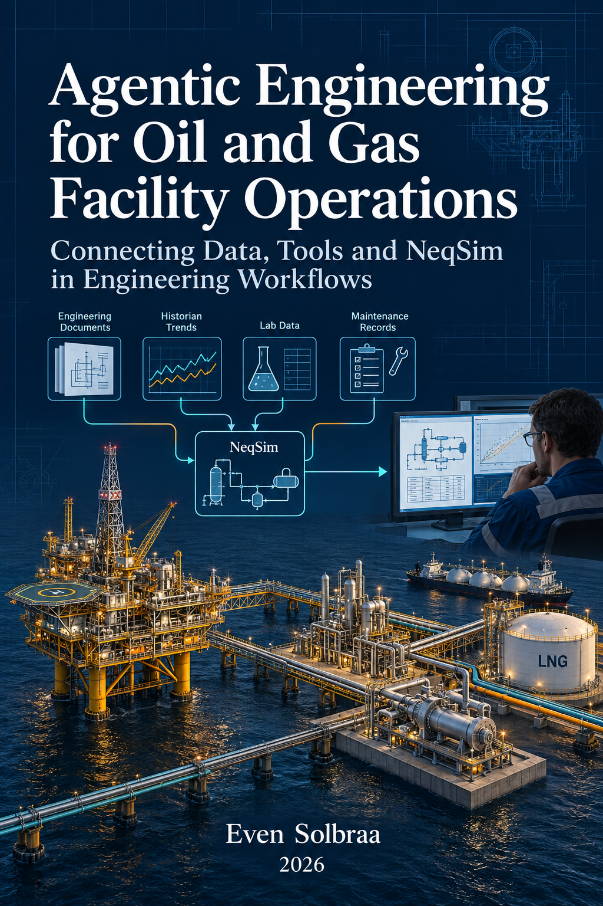
Agentic Engineering for Oil and Gas Facility Operations: Connecting Data, Tools and NeqSim in Engineering Workflows
Copyright © 2026 Even Solbraa and contributors.
First edition, revised 13 September 2026.
This educational edition uses public software documentation and fictitious study scenarios. It contains no private facility records or operator-specific internal system instructions. Product names identify examples of system roles and remain the property of their respective owners; their inclusion does not imply endorsement or an available integration.
Calculations apply to the stated models and inputs. Engineering conclusions for a real facility require its controlled evidence, applicable requirements and responsible review.
Published by NeqSim Project and NTNU
Typeset using NeqSim PaperLab
To the engineers who make better decisions when simulation, data, and judgement meet in the same workflow.
Preface
This book is the industrial-workflow follow-up to Industrial Agentic Engineering with NeqSim [1]. The first book introduces the physics engine, agents, skills and reproducible calculations. This volume shows how to work with multiple specialist agents and engineering tools in an industrial context: connecting documents, historians, laboratory and production databases, maintenance records and process models in one reviewable workflow. Readers looking for that practical cooperation should begin with Chapters 1–3, then follow the data handoffs and worked study in Chapters 4–10.
An engineering question at an oil and gas facility rarely belongs to one tool. Explaining a compressor's rising power demand may require a historian interval, a laboratory composition, an approved vendor curve, a maintenance record and a thermodynamic model. Each provides a different part of the answer. This book shows how an agent can coordinate those contributions into a study that an engineer can inspect, challenge and reuse.
The central workflow is straightforward: define the decision, retrieve evidence, reconcile its meaning, run the appropriate models, compare alternatives, review the findings and retain the result. The chapters explain what moves between those steps: records, units, timestamps, source revisions, model inputs, diagnostics and unresolved questions. Tool cooperation is useful when those handoffs remain visible.
Industry scope
The examples span offshore and onshore production, gas processing, pipeline systems and LNG interfaces. The same integration principles support other process facilities. The book uses public commercial products and open standards as examples of system categories; it does not describe an operator's internal tools, databases or facilities. A document-management system, a historian, a laboratory information system, an enterprise asset-management platform and a production database each have a distinct role.
Naming a product does not mean a connector is installed, licensed or available to NeqSim. Every deployment must establish its approved interface and verify the data contract. NeqSim supplies physical calculations where its models apply. Other tools supply data access, document interpretation, specialist calculations, visualization, engineering review and the existing process for implementing an approved action.
How to read the book
Chapters 1–3 explain the workbench: the engineering question, MCP interfaces, agents, skills and shared study context. Chapters 4–5 connect industrial records to process and equipment models. Chapters 6–8 cover safety studies, operational workflows and governance. Chapters 9–10 bring the tools together in a worked study and reusable playbooks.
The two books can be read in sequence or used together: consult the first for calculation and platform foundations, and this follow-up for industrial data, multi-agent cooperation and tool handoffs.
Calculations and illustrations
The worked scenarios are teaching cases with invented assets and inputs. Numerical results described as calculated are linked to a retained verification record that identifies the model and source revision. Other example numbers remain explicitly hypothetical. Reproducing a software result is distinct from validating a model against independent measurements, and neither establishes plant-specific design acceptance.
The diagrams show conceptual tool handoffs. The industrial scene and cover are AI-generated editorial illustrations. They represent no real facility, measured performance or approved engineering drawing. Each diagram is followed by an explanation of its engineering purpose.
Prerequisites and acknowledgements
Readers should understand basic process engineering and operating data. Configuration and code examples are explained in the context of the decision they support. This edition was developed with NeqSim PaperLab's book-authoring, case-continuity, traceability and typesetting workflows, with specialist review and calculation checks.
Contents
- Part I: The Agentic Engineering Workbench
- 1Agentic Engineering and the Facility Operations Challenge
- 2Connecting NeqSim MCP, Industry Tools, Agents, and Skills
- 3Agents, Skills, and Engineering Memory
- Part II: Data, Models, and Evidence
- 4Operational Data and Evidence Foundation
- 5From Modular Field Models to Equipment Studies
- Part III: Industrial Studies, Operations, and Governance
- 6Safety, Standards, and Barrier Studies
- 7Operational Studies and Decision Workflows
- 8Governance, Quality, and Adoption Roadmap
- Part IV: Worked Patterns and Practical Playbooks
- 9Worked Pattern: From Field Model to Recommendation
- 10Playbooks, Checklists, and Discipline Patterns
- Glossary
- Author Bio
- References
Part I: The Agentic Engineering Workbench
Agentic Engineering and the Facility Operations Challenge
Learning Objectives
After reading this chapter, the reader will be able to:
- Explain why agentic engineering changes the interface to process simulation.
- Distinguish between a language model, a physics engine, and a governed tool server.
- Describe how faster access to technical data changes the scope of possible engineering studies.
- Identify the human review points that remain essential when agents accelerate analysis.
Online companion: The online book covers this ground in its Why Agentic Engineering? and The NeqSim Physics Engine chapters, with detailed EOS tables, flash-calculation theory, and the four-layer architecture diagram. This chapter gives a shorter operational framing and then moves into the data ecosystem and workflow patterns that the online book does not cover in depth.
1.1 From Simulation Files to Simulation Conversations
Process simulation has always been more than a numerical calculation. A useful simulation study starts with a question, gathers data, chooses assumptions, builds a model, runs scenarios, checks results, and turns those results into a decision. The solver is only one step. A flash calculation may run in a fraction of a second, while finding the right composition, design pressure, equipment datasheet, and operating history can take hours. The practical bottleneck is often the translation between people, documents, databases, and software.
Agentic engineering changes that translation layer. A large language model can read a natural-language request, identify what data is missing, call tools, write small pieces of code, inspect results, and draft a report. It must not invent thermodynamic numbers. A tool-backed answer is useful only when the selected model, input basis, convergence checks, and validation evidence fit the engineering question. Tool access makes these checks possible; it does not make a language model inherently trustworthy. This division of labour is the core idea of the new workflow: the model coordinates, the simulation engine computes, and the engineer judges.
NeqSim is well suited to this role because it is both a thermodynamic engine and a process simulation framework. It contains equations of state, flash calculations, physical property models, process equipment, pipeline models, mechanical design helpers, standards calculations, and reporting utilities [2, 3]. The NeqSim MCP server exposes selected parts of that capability through the Model Context Protocol (MCP), so an LLM host can discover and invoke tools without knowing the internal Java API [4].
The important shift is not that engineers can ask a chatbot for an answer. The important shift is that engineers can ask for an auditable workflow. A prompt such as "check the dew point and hydrate margin for this gas at arrival conditions" can become a sequence of explicit operations: validate the composition, run a flash, calculate hydrate temperature, compare against a margin, record assumptions, and prepare a short conclusion. Each operation can be logged, reproduced, and reviewed.
Discussion (Figure 1.1).
The industrial scene connects production, processing and export assets to several kinds of evidence. Documents describe the installed equipment; measurements describe operation; laboratory and maintenance records add fluid and condition context. An agent can bring these contributions together, but their different meanings must survive the handoff. Start a study by identifying which of these sources the decision actually needs.
1.2 What Is NeqSim?
NeqSim (Non-Equilibrium Simulator) is an open-source Java library for thermodynamic and process simulation, developed since 2002 and maintained on GitHub [2, 3]. This book uses it as the calculation engine within a wider oil and gas engineering workflow; source systems and specialist applications retain their own roles.
At its core, NeqSim contains a thermodynamic engine with multiple equations of state:
| Equation of state | Typical application |
|---|---|
| SRK (Soave--Redlich--Kwong) | General hydrocarbon systems, gas processing. |
| PR (Peng--Robinson) | Reservoir fluids, refinery, and petrochemical. |
| CPA (Cubic Plus Association) | Systems with polar molecules: water, methanol, MEG, glycols. |
| UMR-PRU | Gas and petroleum mixtures where suitable model parameters are available. |
| Electrolyte CPA | Aqueous electrolyte systems, subject to the implemented species and phase-model coverage. |
| GERG-2008 | Natural-gas mixture properties within the model's component and operating ranges. |
NeqSim also provides:
- Flash calculations: TP, PH, PS, dew point, bubble point, hydrate equilibrium, and multiphase checks.
- Physical properties: Density, viscosity, thermal conductivity, surface tension, diffusion coefficients, and speed of sound, using both corresponding- states and specialised correlations.
- Process equipment: Separators, compressors, heat exchangers, valves, pumps, mixers, splitters, distillation columns, pipelines (Beggs and Brill), reactors, and flare systems.
- Modular field models:
ProcessSystemfor single process areas andProcessModelfor multi-area plants, with recycle convergence and shared streams. - Dynamic simulation: Time-stepping with
runTransient, PID controllers, measurement devices, blowdown, and control-loop tuning. - Mechanical design: Wall thickness, separator internals, well casing (API 5C3), and cost estimation.
- Standards calculations: ISO 6976 (gas quality), AGA 8, GPA 2145, and other gas and oil property methods, subject to checking the implemented edition.
- Component database: Pure-component records and support for petroleum fractions (TBP, plus-fraction characterisation).
NeqSim can be used directly as a Java library, through Python bindings (via JPype), or through the MCP server described in Chapter 2. The MCP server exposes selected NeqSim capabilities as structured tools that any MCP-compatible client can discover and call without knowing the Java API.
1.3 The Three-Layer Pattern
The agentic process-simulation workbench has three layers.
| Layer | Primary role | Typical examples |
|---|---|---|
| Agent host and language model | Interprets intent, plans steps, writes explanations | An approved desktop assistant, IDE, or enterprise workbench |
| Tool and access layer | Exposes bounded capabilities through typed interfaces | NeqSim MCP server, document readers, historian adapters, validation tools |
| Source systems and engineering engines | Retains records and performs specialist calculations | Laboratory, well, historian, document and maintenance systems; NeqSim and specialist solvers |
The language model should not be treated as a calculator. It should be treated as a coordinator that can read and write around calculators. The tool layer defines what the model is allowed to call. The source and engine layer carries different kinds of evidence: measured values, approved documents, derived models, and calculated predictions. None should be treated as universal truth; their authority and limitations differ.
This pattern is closely related to reasoning-and-acting agent architectures in the AI literature [5, 6]. The industrial difference is that the actions are not web searches or generic code snippets. They are engineering operations with units, standards, access controls, and review requirements. A tool call that sizes a relief valve has a different risk class than a tool call that lists available component names.
Figure 1.2 follows a record through four workflow stages. These stages cross the three software layers above: source records, integration, calculation, and engineering review.
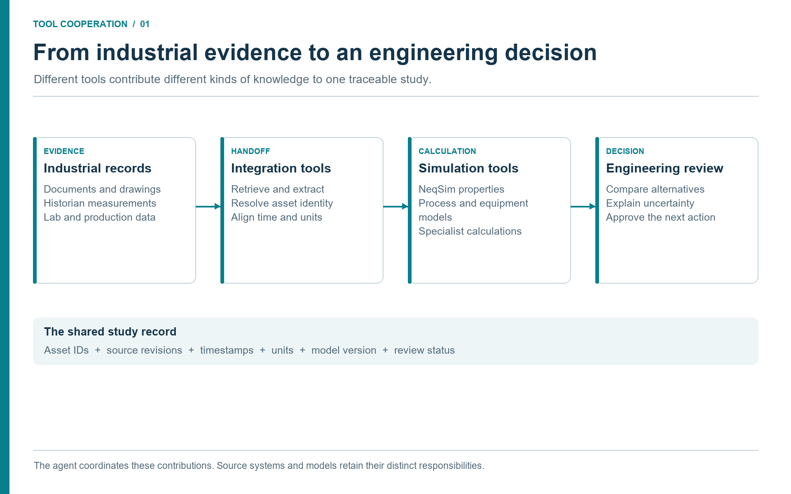
Discussion (Figure 1.2).
The handoffs are the important part of this diagram. A document reader should return a cited value, not an unexplained number. A simulation should return its input basis and diagnostics, not just a recommendation. Keep those records together so the reviewing engineer can trace a conclusion back through the tools that produced it.
1.4 Why Data Access Changes the Study Envelope
Traditional process studies are limited by the cost of assembling evidence. A team may run a single base case and a handful of sensitivities because each case requires manual data gathering: one person exports historian tags, another finds the latest datasheet, another checks whether the design basis has changed, and another copies results into a report. When the evidence chain is manual, studies become narrow.
Agentic engineering broadens the study envelope. If an approved document retrieval agent can fetch a compressor datasheet, an approved historian interface can collect the last 30 days of inlet conditions, and a maintenance adapter can summarize recent maintenance notifications, then a model can ask better questions. It can compare current compressor performance against vendor curves, detect whether a heat exchanger has drifted since the last cleaning, or evaluate whether a separator debottlenecking option is constrained by an existing nozzle rating.
The value is not only speed. It is scope. Many studies that were previously too expensive to do routinely become practical:
- daily hydrate-margin screening using live composition and temperature tags;
- compressor operating-point checks against retrieved vendor curves;
- relief-load re-screening when operating envelopes change;
- production-optimization scenarios tied to current equipment constraints;
- emissions and energy studies using current fuel, flare, and power data;
- safety-barrier reviews that link simulations to as-built documents.
None of these workflows removes engineering accountability. The agent can assemble evidence and perform calculations faster, but the study team still owns assumptions, acceptance criteria, and final decisions. The new capability is that more scenarios can reach the review table with traceable evidence.
1.5 The Oil and Gas Tool Ecosystem
The workflow applies to offshore production, onshore gathering, gas treatment, LNG feed preparation, pipelines, terminals, and brownfield modifications. The process boundary changes between these settings; the need to connect measured conditions, equipment constraints, physical predictions, and accountable engineering decisions does not. A company-specific repository or tag naming scheme should therefore be an adapter choice, not the organizing principle of this book.
Three distinctions keep the architecture understandable. A system of record stores authoritative records for a defined purpose. An access or preparation tool retrieves and transforms those records. A simulation or analysis tool calculates a result. A historian is a source platform; a Python historian client is an access library; NeqSim is a simulation engine. MCP is the interface used by an agent host to discover and invoke exposed tools. These terms are not interchangeable. [7, 2, 4]
| Evidence domain | What the workflow obtains | Tool cooperation and downstream use |
|---|---|---|
| Laboratory and PVT | Sample identity, composition, water and contaminant analyses, PVT measurements | A laboratory reader supplies a fluid specialist with a reviewed fluid basis. |
| Wells and reservoir | Well identity, completion state, pressure support, deliverability and forecast cases | Subsurface tools provide boundary conditions to the well and facility model. |
| Production and allocation | Well tests, metering, allocation revisions and downtime | A reconciliation tool checks throughput on a common time and volume basis. |
| Historians and online measurements | Pressure, temperature, flow, power, valve status, timestamps and quality flags | A time-series tool selects operating windows and distinguishes inputs from validation measurements. |
| Engineering documents and project records | Datasheets, P&IDs, vendor maps, line lists, design basis and revisions | Search and technical-reading tools extract constraints with page-level evidence. |
| GIS, survey and 3D engineering | Route, elevation, depth, topology and physical configuration | Geometry preparation supplies model segments and equipment locations. |
| Maintenance and integrity | Equipment hierarchy, work orders, inspection findings and degradation history | Maintenance tools test operational explanations and feasible intervention windows. |
| Modification and process safety | Approved changes, configuration status, hazard studies and barrier evidence | Review tools identify affected scenarios and unresolved change conditions. |
| Energy, emissions and economics | Fuel and power records, flare accounting, emissions factors and cost assumptions | Accounting and analysis tools translate scenario results into decision measures. |
This table is a study-design map, not a list of automatically available connectors. Each deployment must demonstrate its actual read interface, access rights, supported record types, and source provenance. For example, AVEVA PI System and Aspen InfoPlus.21 are historian products; SAP asset management and IBM Maximo are examples of maintenance platforms. Their presence does not imply that a NeqSim MCP server can query them. An approved adapter or reviewed export must make the handoff. [7, 8, 9, 10]
The recurring case in this book is an existing facility evaluating a changed feed and a compression constraint. The laboratory tool establishes which fluid is present. Production records establish when and at what rate it arrived. The historian establishes how the compressor operated. Documents establish the installed machine's limits. NeqSim predicts the effect of a proposed case. Maintenance, safety, and emissions tools determine what that prediction means for a practical recommendation. A failure in any handoff can invalidate an otherwise converged calculation.
Steady-state and dynamic simulation remain complementary calculation modes. The former supports a settled operating-point comparison; the latter addresses time-dependent inventories and responses. A transient calculation requires suitable equipment models and time-dependent boundary conditions. Selecting a mode is an engineering decision, not a switch that guarantees the relevant physics is represented. Chapter 4 follows the evidence through preparation; Chapter 5 follows it through the modular process model.
1.6 What Makes This Different from a Traditional Digital Twin
Digital twins are often described as continuously updated models of physical assets. In practice, many digital twins struggle because model maintenance is expensive. Tag names change. Equipment is modified. Documents are revised. Operating modes shift. A model that was accurate during commissioning can drift unless people keep feeding it current information.
Agentic workflows can reduce this maintenance burden. They can use historian data to identify recent operating envelopes, document retrieval to refresh equipment constraints, and process automation APIs to set model variables by string-addressable names. A modular field model can then be used for both steady-state studies and detailed equipment checks. The model does not have to be a monolithic file that only a specialist can understand. It can be a set of connected process areas with explicit data links, validation steps, and saved states.
This is why the MCP server matters. It gives the LLM a governed way to call the simulation engine. It does not ask the model to remember the NeqSim Java API. It publishes tools, schemas, examples, resources, and validation metadata. The LLM can inspect the tool catalogue, choose a calculation, pass structured input, and receive structured output. The engineer can inspect the same output.
1.7 The Human Role Moves Upstream and Downstream
When agents accelerate calculation, the human role does not disappear. It moves to the points where judgement matters most.
Upstream, engineers define the question. They decide whether the study is a quick screening, a standard study, or a comprehensive decision basis. They decide which standards and jurisdiction apply, which data sources are approved, what uncertainty ranges are credible, and what acceptance criteria will be used.
Downstream, engineers review the answer. They check whether the result is physically plausible, whether the model is inside its validation envelope, whether the retrieved data is current, and whether the recommendation is appropriate for the decision. Agentic engineering is powerful precisely because it creates more material for this review. It can produce a notebook, a results.json file, a report, a standards map, and a trace of tool calls. That is far better than an unsupported number copied into an email.
1.8 A Day in the New Workflow
Imagine a production engineer arriving in the morning to a question from operations: gas export was reduced overnight because the arrival temperature in the export line approached the hydrate-management limit. The old workflow might start with email: ask for the latest composition, export the relevant historian tags, find the hydrate curve used last year, locate the pipeline route data, and ask a simulation specialist to rerun a case. By the time the result is ready, the operating situation may have changed.
In an agentic workflow, the engineer starts with a bounded request:
Screen hydrate margin for the last 12 hours of export operation. Use approved
historian tags, the latest reviewed gas composition, and the NeqSim hydrate
method. Report source windows, model assumptions, minimum margin, and whether
specialist review is required.
The assistant does not invent the answer. It routes the task. A plant-data agent retrieves pressure, temperature, flow, and inhibitor tags. A document or data agent retrieves the latest approved composition and route assumptions. A NeqSim tool calculates hydrate temperature at selected operating points. A reporting step summarizes the tightest margin, lists rejected bad-quality tags, and marks whether the result is a screening or a decision basis. The engineer then reviews the evidence and decides whether to escalate.
The same pattern can apply to many daily questions. A compressor study can retrieve a vendor curve and calculate actual head. A heat exchanger study can compare predicted and measured duty. A relief screening can use the current operating envelope to decide whether a formal update is needed. The common theme is that the workflow becomes evidence first, calculation second, recommendation third.
1.9 From Pattern to Infrastructure
The workflows described above --- hydrate screening, compressor study, heat exchanger comparison --- share a common pattern. Each one combines technical documentation, field measurement data, and NeqSim simulation. The question is whether this pattern remains an informal convention that each agent must reinvent, or whether it becomes a programmable infrastructure that agents invoke.
NeqSim takes the infrastructure approach. The neqsim.process.operations package provides Java classes that implement the data-to-model binding:
OperationalTagMapmaps logical tag names to historian tags and simulation variables, so field data can be applied to a process model in a single call.OperationalEvidencePackageorchestrates a tag map, field data, scenarios, and benchmark comparisons into a single structured JSON report.OperationalScenarioRunnerexecutes what-if scenarios defined as ordered action lists, returning before/after comparisons.ControllerTuningStudyevaluates controller performance from step-response time-series, computing IAE, overshoot, settling time, and stability.WaterHammerStudycombines route geometry, fluid properties, valve events, and supplied operating-data overrides into a transient screening.
The neqsim.process.diagnostics package provides a RootCauseAnalyzer that can rank configured failure hypotheses using supplied evidence. Reliability handbooks, operating windows, document limits, and simulation results must be provided through an explicit mapping; the class name does not imply a live connection or a licence to a reliability database.
The neqsim.process.safety sub-packages provide consequence screening tools: GasDispersionAnalyzer for release-to-dispersion analysis, ReleaseDispersionScenarioGenerator for building release scenarios from a process model, TrappedLiquidFireRuptureStudy for blocked-in pipe segments, and CfdSourceTermExporter for formatting source terms for specialist CFD tools.
Selected workflows are exposed through MCP tools. A client must discover the installed server catalogue and inspect its action schema before assuming that a particular Java class or method is available. A notebook may also invoke Java through the source-backed Python workflow. These are different execution paths and their versions belong in the same study record. [11] The important design principle is that the classes are orchestration classes. They do not replace NeqSim's flash calculations, EOS models, or equipment solvers. They combine those existing capabilities with external data sources into structured, auditable workflows.
The rest of this book explores these classes in context. Chapters 4 and 7 describe the data foundation and operational workflows. Chapter 6 covers safety. Chapter 9 presents a complete worked pattern that shows how the classes fit together in a realistic field study.
1.10 What Changes for Engineers
The new workflow changes the skill profile of a process engineer. It does not remove the need to understand thermodynamics, equipment, or safety. It increases the value of asking precise questions and reviewing evidence.
Engineers need to become good at specifying model boundaries. A prompt such as "optimize production" is too vague. A better prompt states the decision, time horizon, constraints, and acceptable output: "screen whether production can be increased by 5% for the next 24 hours without reducing hydrate margin below the operating criterion, exceeding compressor driver load, or increasing flare rates." This is not just better prompting. It is better engineering problem definition.
Engineers also need to become good at evidence review. When an agent extracts a design pressure from a datasheet, the reviewer should ask whether the document revision is current, whether the value is design or operating pressure, whether the unit is absolute or gauge, and whether the extraction was OCR-based. When an agent reads a historian tag, the reviewer should ask whether the instrument was healthy, whether the selected window was steady state, and whether all tags came from the same operating period.
Finally, engineers need to become good at model-risk thinking. A NeqSim flash calculation may be numerically correct but still unsuitable for a particular fluid, pressure range, or design decision. An MCP tool may expose a validated calculation, but the validation envelope must still match the task. The new workflow makes these checks more visible. It does not make them optional.
1.11 Summary
Agentic engineering is a new interface to facility operations. The language model coordinates, NeqSim computes, MCP exposes tool interfaces, and industrial data sources provide evidence. The outcome is not an autonomous engineer. It is a faster, more traceable workflow where more operational scenarios can be studied and reviewed.
Key points from this chapter:
- The main productivity bottleneck in simulation is often data translation, not solver runtime.
- MCP turns NeqSim capabilities into discoverable, typed, auditable tools for LLM clients.
- A source platform, access library, exchange standard, and simulation engine have distinct roles.
- Tools cooperate by passing reviewed evidence and named scenario inputs, rather than by sharing an unstructured conversation.
- The relevant source domains depend on the question; integration must be demonstrated for the installed system.
- Human engineers remain responsible for questions, assumptions, acceptance criteria, and final decisions.
Exercises
- Workflow decomposition: Choose a recent process-simulation task and list the steps that were calculation work versus evidence-gathering work.
- Tool boundary: Identify three subtasks that an LLM should coordinate but not compute from memory.
- Review point: For a hydrate-margin screening, define the minimum evidence an engineer should review before using the result.
This chapter uses references from the master bibliography.
Connecting NeqSim MCP, Industry Tools, Agents, and Skills
Learning Objectives
After reading this chapter, the reader will be able to:
- Install and smoke-test the NeqSim MCP server through the Docker distribution.
- Configure VS Code Copilot Chat to use NeqSim through
.vscode/mcp.json. - Install the NeqSim agent and skill pack that teaches the assistant how to use the MCP tools.
- Explain the difference between STDIO and Streamable HTTP MCP transports.
- Run a first engineering conversation that calls a NeqSim tool rather than relying on model memory.
Online companion: The online book covers MCP setup in its Getting Started chapter and the full MCP protocol, governance tiers, and validation profiles in its The MCP Server chapter. This chapter focuses on the Docker distribution path, practical troubleshooting, and deployment profiles for industrial teams.
2.1 A Repeatable Runtime for the Calculation Tool
The NeqSim MCP server can be distributed as a Java runner jar or as a Docker image. For teams with an approved container runtime, Docker is a useful distribution path because it packages the server runtime, Java dependencies, and startup command into a single image. The user does not need to install a matching Java runtime or manage classpaths. The LLM client starts the container, sends MCP JSON-RPC messages through standard input/output, and receives tool responses.
Docker also gives repeatability. A study team can pin an image tag, document the exact server version used for a study, and rerun the same calculation later. For regulated or safety-relevant engineering, this matters. The question is not only "what result did we get?" but "which model version, which tool contract, and which validation profile produced it?" [12, 11].
The local Docker configuration below is an example for a reviewed deployment. Verify the image repository and release tag against that deployment's release instructions before use. A mutable latest tag is shown only for introductory setup; record a resolved image digest for a reproducible study.
docker pull ghcr.io/equinor/neqsim-mcp-server:latest
Perform the smoke test through an MCP-capable client: establish a session, complete initialization, then request tools/list. A single JSON line piped to a process is not a full MCP session and should not be used as the acceptance test. Record the server identity, negotiated protocol, tool list, and a small public calculation result. This separates image availability, protocol compatibility, and engineering correctness into independently reviewable checks. [13]
2.2 Connecting VS Code Copilot Chat
GitHub Copilot Chat in Visual Studio Code can act as an MCP client when a workspace declares available servers. The configuration lives in .vscode/mcp.json. VS Code supports workspace server configuration in this file; other approved MCP hosts use their own configuration format. For a Docker-based NeqSim server, an example is: [14]
{
"servers": {
"neqsim": {
"type": "stdio",
"command": "docker",
"args": [
"run", "-i", "--rm",
"ghcr.io/equinor/neqsim-mcp-server:latest"
]
}
}
}
Start and review the configured server in the client, then inspect the discovered tool catalogue. Client trust settings and organization policy may control which tools are available. The engineer can then ask a question such as:
Use NeqSim to calculate the dew point temperature of a gas with
85 mol% methane, 10 mol% ethane, and 5 mol% propane at 50 bara.
Report the EOS model, convergence status, and limitations.
The important phrase is "Use NeqSim". It tells the assistant that the answer should come from a tool call, not from a memorized or approximated response. The model should select an appropriate flash or phase-envelope tool, provide a structured input object, and summarize the returned result. If the MCP client shows tool-call details, the engineer should inspect them during early use to build confidence in the workflow.
2.3 Installing the NeqSim Agent and Skill Pack
The MCP server is the calculation layer. It exposes NeqSim tools, schemas, and resources. It does not by itself teach the assistant how a NeqSim engineering study should be planned, which standards to check, how to structure evidence, or when to stop for human review. That guidance lives in NeqSim agents and skills.
For a useful Copilot setup, distribute the MCP server together with a small agent and skill pack from the NeqSim repository:
| Repository source | Workspace destination | Purpose |
|---|---|---|
.github/agents/*.agent.md |
.github/agents/ |
Specialist behaviours such as process simulation, flow assurance, plant data, technical reading, and safety. |
.github/skills/<skill-name>/SKILL.md |
.github/skills/<skill-name>/SKILL.md |
Domain procedures, API patterns, standards checks, and validation rules. |
.github/copilot-instructions.md |
.github/copilot-instructions.md or local project instructions |
Common repository rules and NeqSim usage conventions. |
An organization can provide this as a versioned "NeqSim Copilot pack" in one of three ways:
- Copy from the NeqSim repository: Suitable for individual pilots and training workspaces.
- Distribute a ZIP or internal template repository: Suitable for study teams that need a controlled starting point.
- Publish an approved internal package: Suitable for enterprise use, where agents, skills, validation cases, and MCP image versions are released together.
The minimum useful pack is:
| Type | Files to include | Why they matter |
|---|---|---|
| Router | router.agent.md |
Classifies the request and selects the right specialist. |
| General task solver | solve.task.agent.md, solve.process.agent.md |
Provides the end-to-end study workflow and process-simulation fast path. |
| Core simulation | process.model.agent.md, thermo.fluid.agent.md |
Builds fluids and flowsheets instead of relying on generic model memory. |
| Evidence handling | technical.reader.agent.md, plant.data.agent.md |
Reads technical documents and historian/tag data with source provenance. |
| Review | review.agent.md |
Critiques task outputs before they are reused or released. |
| Core skills | neqsim-api-patterns, neqsim-input-validation, neqsim-troubleshooting, neqsim-standards-lookup, neqsim-professional-reporting |
Covers safe NeqSim API use, input checks, recovery, standards, and reporting. |
| Workflow skills | neqsim-agent-handoff, neqsim-notebook-patterns, neqsim-technical-document-reading, neqsim-plant-data |
Supports handoffs, notebooks, document evidence, and plant-data workflows. |
For discipline work, add the relevant specialist agents and skills:
| Discipline need | Add agents | Add skills |
|---|---|---|
| Flow assurance | flow.assurance.agent.md |
neqsim-flow-assurance, neqsim-water-hammer, neqsim-electrolyte-systems |
| Production and field development | field.development.agent.md, optimize.agent.md |
neqsim-production-optimization, neqsim-field-development, neqsim-field-economics |
| Automation and controls | control.system.agent.md |
neqsim-dynamic-simulation, neqsim-controllability-operability, neqsim-pid-process-operations |
| Valves, relief, pipes, and safety | safety.depressuring.agent.md, mechanical.design.agent.md |
neqsim-relief-flare-network, neqsim-depressurization-mdmt, neqsim-trapped-liquid-fire-rupture, neqsim-process-safety |
| Materials and integrity | mechanical.design.agent.md, standards.review.agent.md |
neqsim-ccs-hydrogen, neqsim-flow-assurance, neqsim-standards-lookup |
| Chemicals and production chemistry | flow.assurance.agent.md, technical.reader.agent.md |
neqsim-electrolyte-systems, neqsim-flow-assurance, neqsim-technical-document-reading |
| Environmental and emissions | emissions.environmental.agent.md |
neqsim-utilities-specification, neqsim-power-generation, neqsim-professional-reporting |
| Root-cause and operations support | root.cause.agent.md, plant.data.agent.md |
neqsim-root-cause-analysis, neqsim-plant-data, neqsim-model-calibration-and-data-reconciliation |
The pack should be versioned together with the MCP image tag. A report should be able to say, for example: "NeqSim MCP image vX.Y.Z, agent pack revision 2026-05-10, and skill pack revision 2026-05-10 were used." That provenance is as important as the numerical result.
2.4 STDIO and Streamable HTTP
MCP defines STDIO and Streamable HTTP transports. With STDIO the client starts a server subprocess and exchanges newline-delimited JSON-RPC messages through standard input and output. Streamable HTTP connects to an independent service; it can use server-sent events for streaming. It supersedes the earlier HTTP+SSE transport. Select a transport supported by both the installed server and the chosen host. [13]
| Transport | Typical context | Deployment concern |
|---|---|---|
| STDIO | A local engineering workbench launches a calculation server | Runtime, process permissions and pinned image or executable. |
| Streamable HTTP | A workbench connects to a managed service | Authentication, service availability, network boundaries and logs. |
| Legacy HTTP+SSE | Compatibility with an older implementation | Verify the exact supported protocol; plan migration explicitly. |
Transport choice does not establish engineering authority. A remote service can return an unvalidated calculation, and a local process can handle confidential data. The relevant checks are what the tool does, which evidence it receives, and what access and review controls apply to that deployment.
2.4.1 One Workbench, Several Tool Connections
A useful industrial setup connects tools by role. The NeqSim server handles calculations. A document service searches approved records. A historian service returns selected measurements. A laboratory or production-data service returns reviewed samples and records. A validation tool checks their combined input package. A report tool consumes saved results and evidence references.
These services need not all use MCP internally. A server may wrap a vendor API, a database query, a file export, or a maintained library. MCP standardizes the agent-facing invocation, while the adapter remains responsible for the source's identity, permissions, query semantics, and units. A deployment with approved file exports can use exactly the same evidence contract as one with online interfaces, provided it records the export's date and limitations.
The orchestrator passes a study identifier, asset identifier, evidence version, and scenario identifier between calls. It does not forward passwords through other tools or ask the simulation engine to infer missing data from documents. If the document lookup succeeds but the historian query fails, it can finish extracting the datasheet while marking the operating comparison as incomplete. This is cooperation through explicit dependencies, not a single all-purpose connector.
2.5 What the MCP Server Exposes
The server exposes NeqSim calculations as tools with typed schemas. The exact tool inventory evolves, but the stable pattern is consistent: core calculation tools, advisory discovery tools, advanced engineering tools, and experimental or higher-autonomy tools are separated by maturity and deployment profile. The tool contract promises stable required fields within the v1 API while allowing new optional fields to be added [15].
Useful first tools include:
| Tool or resource | Use in an early pilot |
|---|---|
getCapabilities |
Discover available engineering capabilities. |
getExample |
Retrieve example JSON for a tool. |
getSchema |
Inspect input and output schema before calling a tool. |
validateInput |
Check composition, units, pressure, temperature, and component names. |
runFlash |
Run TP, PH, PS, dew-point, bubble-point, or hydrate calculations. |
runProcess |
Run a process model from a JSON definition. |
calculateStandard |
Calculate gas-quality and standards properties. |
getBenchmarkTrust |
Check validation basis and limitations for a tool. |
Every engineering conversation should begin with discovery when the user is not sure which tool fits. A prompt such as "List NeqSim tools relevant for a CO2 pipeline phase-envelope and dense-phase screening" is better than asking the model to guess.
2.6 Deployment Profiles
The server distinguishes between desktop exploration, study-team work, digital twin advisory use, and enterprise-governed use. The names may evolve with the server, but the principle is stable: higher-risk or higher-autonomy tools are restricted in more governed profiles.
| Profile | Intended context | Typical access philosophy |
|---|---|---|
DESKTOP_ENGINEER |
Individual engineering exploration | Broadest local access for trained users. |
STUDY_TEAM |
Shared study workflow | Advanced tools available, experimental autonomy restricted. |
DIGITAL_TWIN |
Operator decision support | Advisory and calculation tools only; no direct plant write-back. |
ENTERPRISE |
Controlled corporate service | Approved core tools, enforced validation, explicit approvals where required. |
The key governance message is simple: an MCP tool can be technically callable without being appropriate for every deployment. A desktop engineer may run an experimental scenario solver for learning. A production advisory service should restrict itself to validated, read-only, traceable calculations unless a formal approval architecture exists.
2.7 First Conversation Pattern
A good first conversation tests the whole loop without involving private data:
I am testing the NeqSim MCP server. Please discover available NeqSim tools,
choose the simplest validated tool for a methane/ethane/propane dew-point
calculation, call the tool, and summarize the result with provenance and
limitations. Do not estimate the dew point from memory.
The expected assistant behaviour is:
- discover or select the relevant tool;
- create a structured input with composition, pressure, EOS, and flash type;
- call the tool;
- report convergence, model, assumptions, warnings, and result;
- avoid claiming design suitability beyond the tool's validation envelope.
This pattern is more important than the numerical answer. It trains the team to ask for provenance and limitations as part of the result.
2.8 Walkthrough: A Complete MCP Tool Session
This section shows a concrete multi-tool session to illustrate what actually happens between the LLM client and the NeqSim MCP server. The engineer asks a single question; the assistant chains several tool calls behind the scenes. The JSON excerpts are illustrative interface examples, not a captured execution transcript. Check names and arguments against the installed server schema; publish numerical results only with a saved execution record.
Step 1 — Discovery. The assistant calls getCapabilities through MCP tools/call to find available tools:
{
"jsonrpc": "2.0",
"id": 2,
"method": "tools/call",
"params": {
"name": "getCapabilities",
"arguments": {}
}
}
The server returns a list of tools with descriptions, categories, and maturity tiers. The assistant selects runFlash for a dew-point calculation.
Step 2 — Schema inspection. Before constructing the input, the assistant calls getSchema to learn the required and optional fields:
{
"jsonrpc": "2.0",
"id": 3,
"method": "tools/call",
"params": {
"name": "getSchema",
"arguments": {
"toolName": "run_flash",
"schemaType": "input"
}
}
}
The response includes field names, types, valid ranges, enums for flashType and model, and required composition format. This prevents the assistant from guessing parameter names or units.
Step 3 — Input validation. The assistant calls validateInput with the planned input to check for errors before running the calculation:
{
"jsonrpc": "2.0",
"id": 4,
"method": "tools/call",
"params": {
"name": "validateInput",
"arguments": {
"inputJson": "{\"model\":\"SRK\",\"temperature\":{\"value\":240.0,\"unit\":\"K\"},\"pressure\":{\"value\":50.0,\"unit\":\"bara\"},\"flashType\":\"dewPointT\",\"components\":{\"methane\":0.85,\"ethane\":0.10,\"propane\":0.05},\"mixingRule\":\"classic\"}"
}
}
}
The server returns "valid": true or a list of issues such as unknown component names, out-of-range pressures, or compositions that do not sum to 1.0.
Step 4 — Flash calculation. With validated input, the assistant calls runFlash:
{
"jsonrpc": "2.0",
"id": 5,
"method": "tools/call",
"params": {
"name": "runFlash",
"arguments": {
"components": "{\"methane\":0.85,\"ethane\":0.10,\"propane\":0.05}",
"temperature": 240.0,
"temperatureUnit": "K",
"pressure": 50.0,
"pressureUnit": "bara",
"eos": "SRK",
"flashType": "dewPointT"
}
}
}
For dewPointT, the pressure is the specification; the temperature argument is only the initial thermodynamic state used to construct the fluid before the dew point calculation. The response must be checked for the calculated temperature, EOS, mixing rule, convergence status, warnings, and provenance. Save the actual response with the input and server version. An iteration count or accuracy range may be reported only if the executed calculation or its validation evidence supplies it.
A successful solver response must also represent a physically valid phase boundary. Check that the incipient liquid and gas are distinct and that a suitable initialization or independent phase-envelope/TP check supports the identified branch. Numerical return without an error is not sufficient proof of a dew point.
For this composition, a 240 K starting state gives a verified local dew-point branch at 244.871 K (−28.279 °C) and 50 bara. Starts at 240, 250, and 260 K agree. A TP check 0.1 K below the result contains gas and liquid; a check 0.1 K above contains gas only. The gas and incipient-liquid compositions are distinct. These checks establish the selected local branch more convincingly than a generic success flag.
A warm starting state near ambient temperature produced a trivial root with nearly identical phase compositions in the checked implementation. That result was rejected. This example therefore uses an explicit cold starting state and requires physical branch checks; a successful tool response alone should not be promoted to a validated engineering answer.
Step 5 — Trust metadata. For a formal study, the assistant can also call getBenchmarkTrust to report validation status:
{
"jsonrpc": "2.0",
"id": 6,
"method": "tools/call",
"params": {
"name": "getBenchmarkTrust",
"arguments": {
"trustJson": "{\"action\":\"getTool\",\"toolName\":\"runFlash\"}"
}
}
}
The response includes validation basis (test cases, accuracy bounds, known limitations) and a trust classification. This metadata belongs in the study record so reviewers know the tool's qualification level.
What the engineer sees. In VS Code Copilot Chat, the engineer sees a natural-language summary with the dew-point value, EOS model, convergence status, and limitations. The tool-call details can be expanded to inspect the exact JSON exchanged. This transparency is what separates a tool-backed answer from a language-model guess.
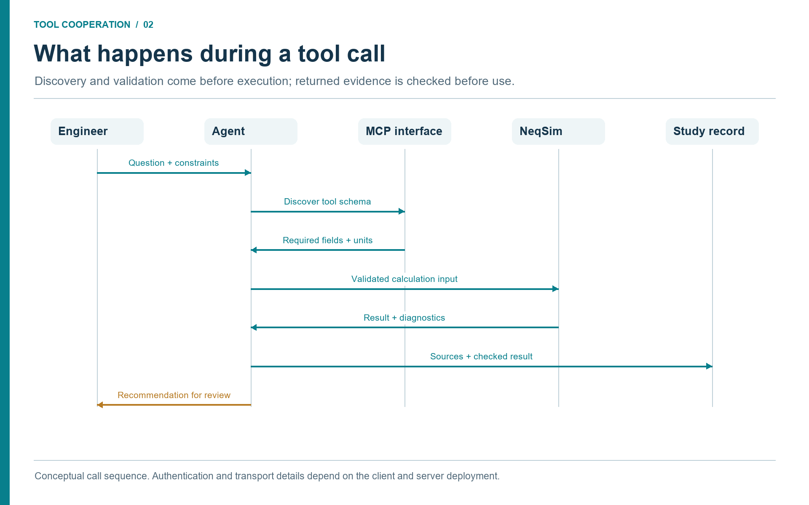
Discussion (Figure 2.1).
Discovery establishes the callable interface. Input checks establish whether the requested case is meaningful. Result checks establish what can be concluded from the response. These are separate operations, even when a client presents them as one conversation. Record the returned fields and actual checks before summarizing the result.
2.9 Troubleshooting
Common startup issues are straightforward:
| Symptom | Likely cause | First check |
|---|---|---|
| Copilot cannot see tools | MCP config not loaded | Restart VS Code and validate .vscode/mcp.json. |
| Docker command fails | Docker not running or image unavailable | Run docker run hello-world and pull the NeqSim image. |
| Tool call times out | Container startup too slow or heavy calculation | Try tools/list first; use a simple flash calculation. |
| Result lacks provenance | Wrong server version or non-MCP answer | Ask the model to show tool-call result fields. |
| Private data appears in prompt | User pasted confidential data | Stop and move to an approved workspace and data path. |
For corporate pilots, the most important troubleshooting rule is to separate connectivity problems from engineering problems. First prove the MCP server can list tools. Then prove a public flash example works. Only then connect internal data sources or run asset-specific workflows.
2.10 Prompt Templates for First Use
Early users often ask the assistant for a number and receive a plausible-looking answer. A better habit is to ask for a tool-backed workflow. The following prompt patterns are useful during a pilot.
Discover NeqSim MCP tools relevant to this task before choosing a calculation.
Explain why the selected tool is appropriate and what assumptions it requires.
Use NeqSim for the thermodynamic calculation. Do not estimate from memory.
Return model, units, convergence status, warnings, and provenance.
Treat this as a screening calculation. List what additional evidence would be
required before using the result for design or safety approval.
If input data is missing, stop and list the missing fields instead of inventing
reasonable defaults. Suggest realistic data sources for each missing field.
These prompts are intentionally procedural. They train the assistant to expose the reasoning path and tool boundary. They also train the engineer to expect structured answers rather than fluent guesses. During early deployment, teams should collect good prompt patterns and convert them into skills or reusable workflow templates.
2.11 Local Docker Security and Practical Operations
Running an MCP server through Docker is simple, but it still deserves basic operational discipline. Container access depends on its mounts, network configuration, credentials, permissions, and image contents. Treat these as explicit deployment settings. For the NeqSim MCP server in the minimal configuration, the container is transient: --rm removes it after the session, and no workspace folder is mounted by default. That is a good first-pilot posture.
When a workflow needs files, the team should decide what to mount and why. A task folder containing public examples is very different from a folder containing internal documents. Mount only the folders needed for the task, use read-only mounts when possible, and do not copy confidential documents into locations that are outside approved storage. The convenience of Docker should not become a workaround for document control.
Version control is equally important. The latest tag is convenient for early testing, but a report should record the image digest or version tag used. If a study is repeated later, the team should know whether the same server version, NeqSim version, and tool contract were used. For formal or high-impact studies, pin the image version and store it in the task metadata.
Logging needs the same care. Tool-call logs are valuable for reproducibility, but they may contain compositions, pressures, tag names, or document references. Store them in the study folder or approved logging system, not in arbitrary chat exports. When a result is reused outside the team, remove private asset names and confidential source references unless the receiving context is authorized.
2.12 Summary
Docker and VS Code Copilot make the NeqSim MCP server accessible to engineers without local Java setup. The .vscode/mcp.json file declares the server, MCP tool discovery exposes NeqSim capabilities, and deployment profiles govern what tools are appropriate in each context.
Key points from this chapter:
- An approved, versioned runtime makes the calculation service repeatable.
- Copilot should be configured to call NeqSim tools, not estimate engineering results from memory.
- STDIO and Streamable HTTP serve different deployment contexts; match client and server support.
- Separate data tools and calculation tools cooperate through shared study, evidence, and scenario identifiers.
- Profiles and validation metadata are part of the engineering control system.
Exercises
- Smoke test: Start a reviewed server version in an MCP client, complete initialization, and inspect
tools/list. Record the server version and discovered tools. - Workspace setup: Create
.vscode/mcp.jsonfor a local test workspace and verify Copilot can discover the NeqSim server. - Governance choice: Decide which deployment profile is appropriate for a digital-twin advisory dashboard and justify the restrictions.
This chapter uses references from the master bibliography.
Agents, Skills, and Engineering Memory
Learning Objectives
After reading this chapter, the reader will be able to:
- Explain the difference between an agent, a skill, a tool, and a memory.
- Describe how skills encode engineering practice without fine-tuning a model.
- Map common engineering-study types to specialist agents and skills.
- Identify where human approval should enter multi-agent workflows.
Online companion: The online book covers the multi-agent system, the skills library, and the AI architecture in dedicated chapters. This chapter gives a compact working summary and then focuses on engineering memory, cross-agent handoffs, and skill design patterns for industrial study teams.
3.1 Why One General Assistant Is Not Enough
A general LLM assistant can help with brainstorming, summarizing, and code generation. Industrial studies also need explicit discipline responsibilities and tool boundaries. Without them, an assistant handling thermodynamics, safety, economics, documents, and plant data can blur the basis of its claims. It may use the wrong EOS, quote a standard too loosely, or treat a screening result as a design result.
The NeqSim agent ecosystem addresses this through specialization and review. A routing agent can classify the task and delegate to a process simulation agent, flow assurance agent, safety and depressuring agent, PVT agent, field development agent, technical document reader, or documentation writer. Each specialist has a smaller job, a clearer set of tools, and a relevant skill stack. This follows a multi-agent pattern familiar from distributed AI systems, but applied to engineering tasks with units, standards, and auditable outputs [16, 5].
3.2 Definitions
The vocabulary matters because it defines governance.
| Term | Meaning in this book | Example |
|---|---|---|
| Agent | An LLM behaviour profile with instructions and tool access | make a neqsim process simulation |
| Skill | A curated markdown knowledge package loaded into the agent context | neqsim-flow-assurance |
| Tool | A callable function outside the model | A discovered runFlash tool, document reader, or approved historian query |
| Memory | Stored facts from prior work or project context | build commands, known API patterns |
| Artifact | A durable output of the workflow | notebook, results.json, report, source manifest |
An agent chooses actions. A skill informs those actions. A tool executes them. Memory prevents repeated mistakes. Artifacts make the work reviewable.
This separation is what makes agentic engineering manageable. If a hydrate calculation fails, the fix might be in the skill (load the CPA hydrate pattern), the tool (improve validation), the memory (record a known API gotcha), or the agent instruction (require a standards lookup). Without the separation, every failure looks like a vague model problem.
3.3 Skills as Engineering Procedures
Skills are not magic prompts. They are structured procedures. A good NeqSim skill contains the domain scope, when to use it, required inputs, API patterns, validation rules, common errors, and output schema. This is exactly the kind of knowledge that a senior engineer carries in working memory and a junior engineer learns through repetition.
Examples include:
| Skill | Encoded practice |
|---|---|
neqsim-api-patterns |
Fluid creation, mixing rules, flash calculations, process equipment setup. |
neqsim-notebook-patterns |
Jupyter setup, figure generation, results.json structure. |
neqsim-technical-document-reading |
Extracting stream tables, P&ID topology, datasheets, and performance maps. |
| Site-specific document-retrieval skill | Retrieving controlled engineering records; the configured implementation is specific to each organization. |
neqsim-plant-data |
Reading through an approved historian interface, mapping tags, checking data quality. |
neqsim-process-safety |
HAZOP, LOPA, SIL, bow-tie, barrier registers, and risk matrices. |
neqsim-field-development |
Concept selection, production forecasts, economics, and uncertainty. |
In practical deployments, these skills and their matching agents should be distributed with the MCP configuration. The MCP server gives the assistant a trusted calculation interface; the agents and skills teach the assistant which calculation to call, which evidence to request, which warnings matter, and when human review is required. Chapter 2 lists a minimum agent and skill pack that can be copied from .github/agents/ and .github/skills/ in the NeqSim repository or distributed as a controlled internal template.
The advantage over fine-tuning is transparency. A skill can be reviewed in a pull request. It can cite standards. It can be changed when a method changes. It can tell the agent to avoid a known API mistake. Fine-tuned model weights cannot be inspected in the same way.
3.4 Agent Composition for Engineering Studies
The number of agents should follow the work. A small property check may need one agent and one calculation tool; a larger study benefits from independent specialists with bounded responsibilities. Consider a separator debottlenecking study. The router may compose the workflow as follows:
- The technical document reader extracts existing vessel dimensions, nozzles, design pressure, internals, and vendor notes from approved documents.
- The plant-data agent retrieves recent flow, pressure, temperature, and level data through the configured historian tool and classifies operating windows.
- The process simulation agent builds or updates the NeqSim separator and upstream/downstream process context.
- The mechanical design agent checks whether proposed operating changes stay inside design constraints.
- The safety agent screens relief, blowdown, HAZOP deviations, and barrier implications.
- The reporting agent assembles assumptions, results, uncertainties, and recommendations.
Each agent sees enough context to do its job but not so much that it becomes unfocused. The handoff artifact matters. A document-reading output should not be a paragraph of vague text. It should be structured data with source, page, confidence, and units. A simulation output should not be a screenshot. It should be a results object with key values, validation, and provenance.
3.4.1 The Orchestrator Owns Dependencies
The orchestrator keeps the question, acceptance criteria, and current evidence version coherent. It decides which tasks can proceed independently and which must wait. The document reader and historian reader can work in parallel after the asset identity is confirmed. A compressor calculation must wait until its fluid basis, inlet conditions, performance model, and outlet specification are compatible. A reviewer must know which exact scenario produced the reported result. More agents do not compensate for a missing handoff.
| Participant | Receives | Produces | Does next |
|---|---|---|---|
| Orchestrator | Engineering question and allowed sources | Task contract and dependency plan | Dispatches bounded work and tracks unresolved items. |
| Evidence specialists | Asset identifier, source scope and time basis | Referenced values, exclusions and data gaps | Return evidence; do not invent substitute inputs. |
| Fluid and model specialists | Accepted evidence package | Fluid definition, model revision and scenarios | Run calculations and report convergence and limitations. |
| Validation specialist | Saved runs, independent measurements and criteria | Residuals, checks, pass/fail and unresolved issues | Rejects unsupported comparisons and requests targeted work. |
| Decision and reporting specialist | Reviewed technical results and constraints | Recommendation, alternatives and decision record | Sends the package to the accountable reviewer. |
A useful status vocabulary is ready, running, needs_data, needs_review, failed, and complete. Each status includes a reason and affected artifact. A source timeout permits a bounded retry of the same read request. An ambiguous pressure basis requires clarification of evidence; retrying the calculation cannot repair it. A solver failure triggers diagnosis of the saved case, followed by a documented adjustment if justified. The orchestrator must retain the failed run and identify any changed assumption.
3.4.2 Cooperation in the Recurring Compressor Case
Suppose the historian specialist reports increased recycle while the document specialist retrieves two compressor maps. The orchestrator asks the equipment specialist to resolve the installed impeller and speed range before selecting a map. In parallel, the fluid specialist checks whether the gas sample belongs to the selected operating period. The maintenance reader retrieves records of recent work to help determine which physical configuration applies.
The simulation specialist then receives one accepted configuration and named alternative scenarios. It returns calculated duties, temperatures, and map positions with evidence references. The validation specialist compares outputs to measurements that were withheld from input assignment. The reporting tool carries both the findings and the unresolved limits into the decision record. No specialist silently changes the other specialists' inputs; proposed changes create a new evidence or model version.
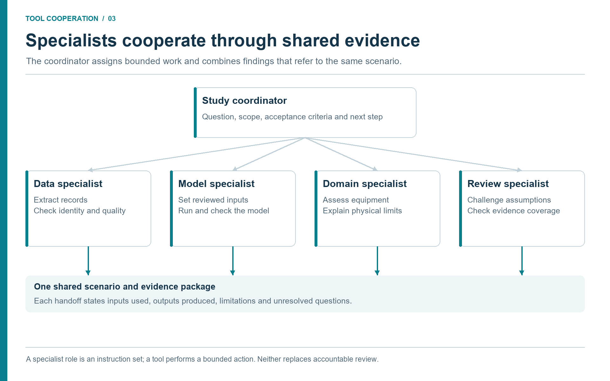
Discussion (Figure 3.1).
Each specialist contributes a bounded artifact to the same study. A model specialist should not silently replace a reviewed composition, and a reviewer needs the source record behind each proposed limit. Use a common scenario identifier and state unresolved questions explicitly at each handoff.
3.5 Memory and Reuse
Engineering organizations repeat patterns. The same simulator setup issue appears in many tasks. The same process equipment class has the same unit conventions. The same source system has the same tag naming pattern. Memory lets agents learn these local facts without retraining.
There are three useful memory scopes:
| Scope | What belongs there | Example |
|---|---|---|
| User memory | General preferences and recurring commands | PowerShell quoting for Maven properties. |
| Repository memory | Codebase-specific facts and verified practices | NeqSim requires Java 8 compatibility. |
| Session memory | Current task state | Which documents were retrieved for this study. |
Memory should be short, reviewed, and corrected when wrong. It is not a place for private plant data or confidential assumptions. Those belong in task artifacts under approved access controls.
3.6 Study Types Enabled by Agents and Skills
The value of agents and skills becomes clear when looking at study types. A process engineer can ask for a quick density calculation, but the same framework can scale to integrated studies.
| Study type | Main agents | Main skills |
|---|---|---|
| Gas quality | Thermodynamic fluid, gas standards | neqsim-api-patterns, neqsim-standards-lookup |
| Flow assurance | Flow assurance, process simulation | neqsim-flow-assurance, neqsim-electrolyte-systems |
| Equipment sizing | Process simulation, mechanical design | neqsim-api-patterns, neqsim-equipment-cost-estimation |
| Safety screening | Safety and depressuring, consequence | neqsim-process-safety, neqsim-relief-flare-network |
| Field development | Field development, economics, subsea | neqsim-field-development, neqsim-field-economics |
| Digital twin calibration | Plant data, model calibration | neqsim-plant-data, neqsim-model-calibration-and-data-reconciliation |
The same MCP server can support many of these tasks by exposing trusted calculation tools. The broader agent workflow adds source retrieval, notebooks, reports, uncertainty analysis, and review gates.
3.7 Approval Points
Agentic workflows should not be fully autonomous in industrial engineering. They should be fast and explicit. Useful approval points include:
- after task classification and before a comprehensive study begins;
- after data retrieval, to approve sources and reject poor-quality data;
- after model construction, to approve assumptions and operating envelopes;
- after simulation, to review validation warnings and physical plausibility;
- before report release, to approve conclusions and recommendations.
These approval points are not bureaucracy. They are how the organization keeps engineering judgement in the loop while still benefiting from automation.
3.8 Designing a Skill
A skill should be written like a compact engineering procedure. It should begin with a clear trigger: when should the agent load this skill? The trigger should be specific enough to avoid accidental use. "Use for any engineering task" is too broad. "Use when predicting hydrate formation, inhibitor dosage, or hydrate margin in pipelines and wells" is better.
A useful skill then gives the agent a checklist. For a flow-assurance skill, the checklist may include fluid composition, water content, pressure and temperature envelope, inhibitor concentration, pipeline profile, ambient temperature, acceptance criterion, and applicable standards. The skill should also define failure modes: missing water content, unverified composition, wrong unit, hydrate model outside domain, or operating point close to the limit.
Code patterns belong in skills when they prevent repeated mistakes. In NeqSim, that may include setting a mixing rule before a flash calculation, calling physical-property initialization before reading viscosity, or using a modular ProcessModel instead of one oversized flowsheet. A skill is not a place to hide complicated logic. It is a place to make the logic reviewable.
Finally, a skill should define the output. An agent that runs a hydrate screen should return minimum margin, selected time window, model, composition source, warnings, and escalation recommendation. An agent that reads a compressor curve should return extracted curve data, confidence, page reference, and uncertainty. Without an output schema, multi-agent handoffs become fragile prose.
3.9 Handoffs Between Agents
Multi-agent workflows succeed or fail at their handoffs. A document-reading agent may produce extracted equipment data. A process-simulation agent may use those values. A safety agent may use the simulation state to screen a relief case. If the first output is vague, every downstream step inherits ambiguity.
A good handoff has five readable parts, backed by stable identifiers:
| Field | Purpose |
|---|---|
| Context | Study ID, asset ID, scenario ID, model revision, and effective time or configuration. |
| Data | Values, units, pressure/volume basis, role as input or validation target, and missing fields. |
| Source | Evidence IDs, document revisions or tag windows, extraction locations, and immutable output paths. |
| Confidence | Extraction quality, measurement uncertainty, validation status, and open issues kept distinct. |
| Next action | Recipient, acceptance condition, allowed action, and reason for retry, stop, or review. |
For example, a technical document reader should not simply say "the separator is rated for 85 bar." It should say whether 85 bar is design pressure or maximum operating pressure, whether the unit is bara or barg, which document and revision it came from, whether the value was read from a table or OCR, and whether a human needs to review it before use in a safety calculation.
This level of structure may feel heavy during a simple demonstration. In real engineering work it is lighter than the alternative: repeated clarification, manual copying, and untraceable assumptions.
3.10 Learning by Solving Tasks and Improving the Code
NeqSim's source code can be part of the engineering workflow. When a study reveals a missing calculation, a weak diagnostic or an awkward interface, the team can investigate the implementation and improve it alongside the study. The result of the task can therefore include both an engineering answer and a reusable improvement to the tool that produced it.
This matters when the same difficulty appears repeatedly. A one-off spreadsheet correction or a private script may solve today's case while leaving tomorrow's engineer with the same problem. A reviewed library implementation, a regression test and a clear skill recipe make that knowledge available to later work. An open implementation also lets reviewers inspect the equations, units and numerical method behind a result instead of relying solely on a reported value [2].
The improvement loop
The task provides the concrete requirement and the acceptance case. A capability scout first checks whether the needed feature already exists. A modelling specialist identifies the physical method; a code specialist then makes the smallest suitable change. A reviewer checks both the software and its engineering basis. The workflow should retain a usable study result even when a proposed library improvement needs further review.
| Stage | Tool cooperation | Durable output |
|---|---|---|
| Solve a real task | Evidence tools and NeqSim expose the specific missing capability or failure | Reproducible input and a written engineering requirement |
| Diagnose the gap | Source search, API discovery and a domain specialist distinguish missing code from incorrect use | A bounded issue with method, units and acceptance criteria |
| Reproduce the behavior | A test runner executes a minimal public or synthetic case | A failing regression test or a documented unsupported case |
| Improve the implementation | Code tools edit the appropriate Java class, API or diagnostic | A reviewable source change with documented limits |
| Check the result | Unit tests, conservation checks, sensitivity checks and relevant independent reference data exercise the change | Test evidence and a comparison with the previous behavior |
| Review and retain | Engineering and code review assess the method and implementation | A versioned, approved change or an explicitly unresolved proposal |
| Update the working knowledge | Skills, examples and tool descriptions record the new capability and its boundaries | Reusable instructions tied to the verified source version |
| Reuse in the next task | Discovery finds the improved capability and its regression cases | Less repeated investigation and a clearer evidence trail |
A task may reveal that the code is already correct and its usage guidance is wrong. In that case the appropriate improvement is a clearer skill, a corrected example or a better tool schema. A different task may expose a missing equipment calculation that belongs in NeqSim itself. Store the physical calculation in the maintained library when it is reusable, and keep facility-specific inputs and private evidence in the study or the organization's controlled repositories.
A concrete example of learning
Consider a phase-boundary calculation that returns without an error, yet the reported gas and liquid are effectively identical. The engineer's question has revealed a verification gap. Source inspection and repeat calculations can identify the sensitivity to initialization. A regression case can then require distinct phases, equilibrium consistency and a check on either side of the candidate boundary.
The retained improvement might initially be a tested initialization procedure and clearer diagnostics. If a solver change is needed, it becomes a separate, reviewed source change with regression coverage. The next task benefits because the checks and their rationale are available before another engineer encounters the same misleading result. Chapter 2 demonstrates this distinction between a successful call and a physically checked answer.
What the system learns
Here, “learning by doing” means accumulating explicit, reviewable knowledge: better code, regression cases, verified examples, source-linked results and improved agent skills. It does not mean that executing a study automatically retrains the language model, recalibrates every physical model or establishes the accuracy of a new method.
These forms of learning must stay separate. A measured dataset can justify parameter fitting for a stated fluid and operating range. A new regression test can protect known behavior. A revised skill can prevent incorrect API use. None alone proves that the method generalizes to another fluid or facility. Record what changed, the evidence supporting it and where it applies.
The practical advantage is cumulative. Each task can produce an answer for the current study and leave the shared engineering workbench more capable for the next one. Chapter 8 explains how to review and release these improvements; Chapter 10 includes the corresponding close-out checklist.
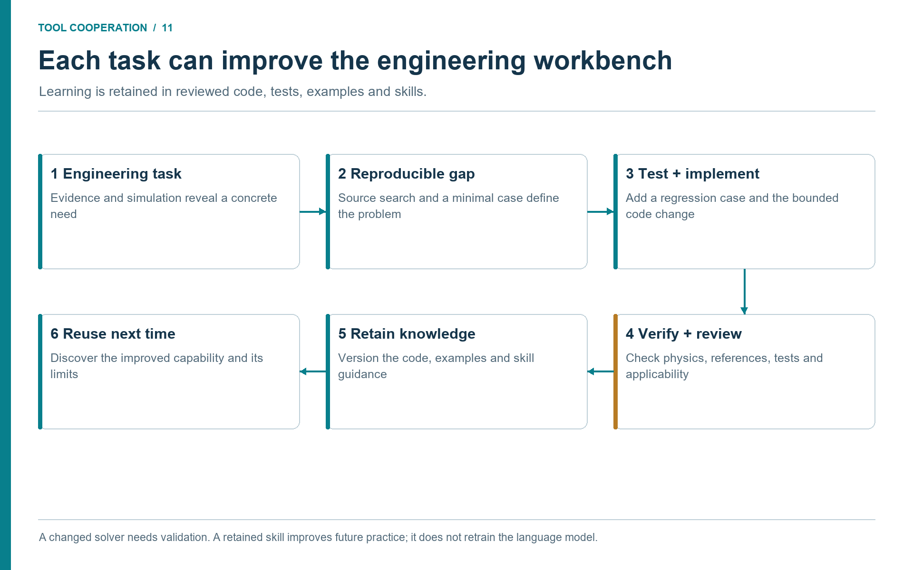
Discussion (Figure 3.2).
The return path carries verified knowledge into later tasks. The improvement may be a missing calculation, a corrected interface recipe or a diagnostic that rejects misleading results. Retain the test case and the scope of the evidence with the change; otherwise the next agent inherits a new assumption instead of a dependable capability.
3.11 Summary
Agents divide work. Skills encode practice. Tools compute and retrieve. Memory preserves verified local knowledge. Together they form an engineering operating system around NeqSim and industrial data.
Key points from this chapter:
- Specialist responsibilities and reviewable handoffs help control complex studies; agent count alone does not establish quality.
- Skills are transparent, reviewable containers for domain procedure and API patterns.
- Handoffs should be structured artifacts, not loose prose.
- Approval points keep engineers accountable for assumptions and decisions.
Exercises
- Agent map: For a compressor performance study, list the agents and skills needed from data retrieval to final recommendation.
- Skill design: Draft the headings for a skill that teaches an agent how to use a company-approved hydrate management procedure.
- Approval gate: Identify where a human reviewer should stop an automated study if source data quality is poor.
- Dependency exercise: The historian request times out and the compressor map revision is ambiguous. Identify which work can continue, which request can be retried, and which calculation must wait.
This chapter uses references from the master bibliography.
Part II: Data, Models, and Evidence
Operational Data and Evidence Foundation
Learning Objectives
After reading this chapter, the reader will be able to:
- Map the main oil and gas evidence domains to their roles in a simulation study.
- Distinguish source platforms, access libraries, exchange standards, and calculation tools.
- Distinguish between real-time readings, archived historian data, and design-basis values.
- Describe how production databases and project documentation provide context that turns calculations into decisions.
- Design a governed data-ingestion pattern for agentic engineering tasks.
- Identify common data-quality risks before using retrieved data in a model.
Beyond the online book: The online book's worked examples use pre-defined compositions and conditions. This chapter addresses the reality that most industrial studies start with data scattered across laboratory systems, historian servers, asset-management systems, well and production databases, engineering repositories, and project archives. It provides the retrieval patterns, quality gates, and source-manifest schema needed to turn raw enterprise data into trustworthy model inputs.
4.1 The Data Problem Around Every Simulation
A process model is only as useful as the evidence behind its inputs. A gas composition from a lab report, a separator design pressure from a datasheet, a compressor map from a vendor package, a cooling-water inlet temperature from a historian tag, and a maintenance history from an asset-management system can all change the conclusion of a study. In many organizations these data sources are separate. The engineer becomes the integration layer.
Agentic engineering makes that integration layer explicit. Instead of asking a person to manually search every source, an agent can be instructed to retrieve approved documents, read relevant pages, extract structured values, query historian tags through the approved interface, and summarize enterprise records. The output must not be an untraceable blob. It must be a source manifest: what was read, where it came from, when it was retrieved, which values were extracted, what the confidence is, and what still needs human review.
The retrieval workflow is as important as the simulation workflow. A beautifully converged NeqSim result is not useful if it was built on stale, wrong, or unapproved data.
4.2 Source Domains and Their Tool Handoffs
The following matrix organizes the evidence by what the next tool needs, rather than by vendor. Each row is a proposed integration contract: it states what the source reader must preserve before a downstream tool may use the information. It is not a claim that every platform or connector is installed.
| Source domain | Typical records | Reader output and downstream use |
|---|---|---|
| Laboratory, fluid and PVT | Sample records, chromatography, recombination, water and contaminant analysis, PVT measurements | A fluid package with sample lineage, basis and uncertainties for characterization and independent property checks. |
| Wells and reservoir | Well and completion identifiers, surveys, pressure history, deliverability and forecast cases | Well-specific boundary conditions with date, completion state and forecast scenario for network simulation. |
| Production and allocation | Well tests, metering, daily balances, downtime and revised allocations | Rates and volumes on a declared period and reference basis for reconciliation and scenario selection. |
| Historian archives | Pressure, temperature, flow, power and status histories | Aligned windows with quality flags, aggregation rules and retained raw evidence for calibration and validation. |
| Online operations | Current readings, alarms, events and equipment states | Timestamped state observations with maximum age and validity rules for advisory calculations. |
| Engineering documents | P&IDs, datasheets, vendor maps, line lists and material specifications | Revision-controlled limits, topology and physical parameters with source pages for model construction. |
| Project and design basis | Concept studies, FEED, approved operating envelopes and acceptance criteria | Named design scenarios and criteria for comparison with current conditions. |
| GIS, survey and 3D engineering | Coordinates, route chainage, bathymetry, elevations and physical layout | Geometry with coordinate reference, vertical datum and topology for pipes, equipment and consequence studies. |
| Maintenance and integrity | Asset hierarchy, work orders, inspections, repairs and condition findings | Installed configuration, intervention history and availability constraints for equipment hypotheses. |
| Modification management | Proposed, approved, installed and closed changes | Effective configuration and unresolved conditions for separately named as-is and proposed scenarios. |
| Process safety | Hazard studies, relief basis, barriers, proof tests and cause-and-effect records | Applicable scenarios, limits and review requirements; independent safety conclusions remain traceable. |
| Energy and emissions | Fuel, flare, power, venting, emissions factors and reporting boundaries | Consistent scenario accounting, factor versions and uncertainty for operational comparisons. |
| Commercial and schedule | Cost estimates, contracts, outage plans and schedule assumptions | Dated economic and implementation constraints used after technical feasibility has been assessed. |
4.2.1 Platforms, Standards, and Libraries Are Different
AVEVA PI System and Aspen InfoPlus.21 illustrate the historian role. SAP asset management and IBM Maximo illustrate the maintenance role. Esri's petroleum GIS illustrates a spatial information role. These product categories help a reader locate the corresponding source in their organization; they do not imply a common API or an existing NeqSim connection. [7, 8, 9, 10, 17]
OpenText Content Management for Engineering illustrates controlled engineering documentation, while AVEVA Engineering illustrates a shared engineering-data environment. SampleManager is an example of a laboratory information management system (LIMS) with an oil and gas workflow. In the compressor case, these roles would supply the revised datasheet, equipment attributes, and approved sample record respectively. The handoff still needs evidence IDs and units; product integration features do not establish that a particular reader tool has been configured. [18, 19, 20]
A data platform may organize entities and their relationships across source systems. OSDU data-definition documentation is one industry example. Exchange standards serve a different purpose: Energistics defines WITSML for well-related data, RESQML for subsurface/reservoir information, and PRODML for production data. A particular schema version may help transfer a well, fluid, or production record, but adoption does not remove the need to reconcile identifiers and engineering meaning. [21, 22]
An access library is another layer: it reads a source through a supported interface and returns records; it is not the underlying database. Choose an approved, maintained API or export interface for each deployed platform and record its version. OPC UA is a communication architecture that includes current and historical data access; a server's actual supported services and access rights must still be checked. [23]
The general document workflow uses an approved search and retrieval interface. A local export with revision metadata is a valid source path when live access is unavailable; its currency and completeness must be visible. A file reader can prepare model evidence from that export without claiming that it has queried the enterprise system.
4.3 Retrieval Agents and Skills
The document retrieval pattern normally uses several agents.
| Agent or skill | Responsibility |
|---|---|
scout literature and databases |
Finds public references, standards, and internal references when configured. |
read technical documents |
Extracts structured data from PDFs, Excel, Word, images, P&IDs, and datasheets. |
| Site-specific document-retrieval skill | Retrieves controlled documents through approved backends or local exports; an the engineering repository skill is one example. |
neqsim-technical-document-reading |
Provides extraction patterns for drawings, stream tables, vendor maps, and datasheets. |
neqsim-plant-data |
Guides historian access, tag mapping, operating-window selection, and quality checks. |
4.3.1 Seven Stages from Source to Decision
A coordinated workflow turns independent retrievals into a shared evidence package. The stages below define when one tool may hand information to the next. Some retrieval tasks can run in parallel; acceptance of the combined basis is a dependency for simulation.
| Stage | What the tools do together | Handoff and stop condition |
|---|---|---|
| 1. Resolve identity | Asset-master, document and well readers map source identifiers to a canonical asset and equipment ID. | A reviewed crosswalk; stop if a tag or document could refer to more than one item. |
| 2. Establish units and basis | Extraction and normalization tools preserve original units, pressure reference, composition basis and standard-volume conditions. | Converted values with a transformation record; stop when the physical quantity or basis is unknown. |
| 3. Align time and configuration | Historian, lab, production and MOC readers establish the operating window and installed configuration. | A common evidence cut with source/effective/retrieval times; flag incompatible records. |
| 4. Check quality | Validation tools check source status, missing data, outliers, balances and applicable measurement uncertainty. | Accepted and rejected records with reasons; do not silently fill required gaps. |
| 5. Freeze the evidence package | The orchestrator records evidence IDs, files, hashes, mappings, assumptions and open issues. | A versioned input package that every specialist can reference. |
| 6. Simulate and compare | NeqSim and specialist solvers consume accepted inputs; independent measurements test the outputs. | Saved runs, residuals, convergence and limitations; separate solver failure from evidence failure. |
| 7. Prepare the decision | Safety, maintenance, environmental and reporting tools interpret the same scenario outputs. | A reviewable recommendation tied to the evidence and model versions; release authority remains explicit. |
Identity resolution deserves early attention. An instrument tag, a maintenance asset number, a P&ID designation, and a model unit name can all refer to the same compressor. Conversely, a reused instrument name can refer to different locations over time. The crosswalk should carry validity dates and record the source that justified the match. Text similarity is useful for finding candidates; it is not sufficient evidence for a final join.
Unit normalization must preserve meaning. Record whether pressure is absolute or gauge, whether a composition is mole or mass based, whether water was excluded from an analysis, and which reference temperature and pressure define a standard gas volume. Keep original and converted values side by side in the transformation record. A numerical unit conversion cannot repair a mismatched fluid sample or a phase-specific flow used as a total-stream flow.
Time alignment is equally explicit. Store source time, effective time, and retrieval time separately. A document retrieved today may describe an earlier configuration; a newly issued laboratory report may describe last week's sample. Convert event timestamps to a common time zone while preserving their original offsets. Do not combine a steady-state historian median with a daily allocated volume without stating how the periods differ.
Case handoff. For the compressor case, document and maintenance readers resolve the installed machine, the laboratory reader supplies the accepted gas sample, and the historian reader supplies an operating window. Stage 5 freezes those inputs together. Chapter 5 then uses that package to construct the compression model and its facility boundaries.
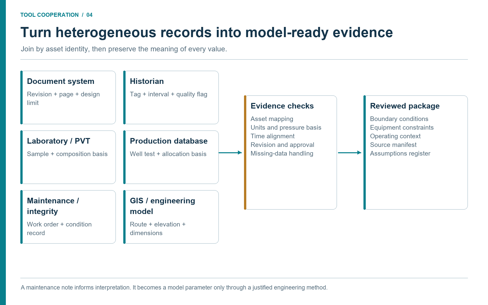
Discussion (Figure 4.1).
The six source groups illustrate different record structures, not interchangeable stores. A laboratory sample has a composition basis; a historian interval has a time and operating mode; a drawing has a revision. Resolve those differences before building the input package. Preserve maintenance observations as context unless an engineering method justifies converting them into model parameters.
4.4 A Tag Mapping Pattern
Historian tags are rarely named the way a simulator variable is named. A tag may encode facility, system, equipment, instrument type, and signal. Within a selected compression ProcessSystem, the model may expose Suction Gas.pressure as an input on a named inlet stream. A tag map bridges the two. Area selection belongs in the surrounding workflow; discover the actual writable address before applying data.
study_id: compressor_screen
asset_id: COMPRESSOR_A
equipment: Export Compressor
model_area: Compression
evidence_version: E1
scenario_id: observed_window
pressure_basis: absolute
time_basis: UTC
record_role: illustrative_mapping
model_variables:
inlet_pressure:
address: "Suction Gas.pressure"
unit: "bara"
historian_tag: "APPROVED_TAG_FOR_SUCTION_PRESSURE"
role: input
source_unit: "bara"
quality_rule: "good_values_only"
inlet_temperature:
address: "Suction Gas.temperature"
unit: "C"
historian_tag: "APPROVED_TAG_FOR_SUCTION_TEMPERATURE"
role: input
source_unit: "C"
quality_rule: "steady_state_median_30min"
This YAML describes the study contract rather than a complete NeqSim import schema. It should also link to explicit start/end times, accepted point counts, and measurement uncertainty in the evidence manifest. The exact tag names are asset-specific and should not be hard-coded in a public book. The pattern is the important part. A model variable has an address, unit, historian tag, time-window rule, and quality rule. The agent can then retrieve a data window, calculate a robust median, detect bad periods, and set the process model input.
4.5 Maintenance, Integrity, and Equipment Context
Enterprise asset management (EAM) and computerized maintenance management systems (CMMS) usually supply context rather than thermodynamic inputs. Equipment master data can confirm the equipment identity, installed location, manufacturer, and functional hierarchy. Work orders and notifications can reveal recent repairs, inspection findings, cleaning campaigns, and known limitations. Spare-parts data can constrain what recommendations are realistic in the near term.
For example, an agent may find that a heat exchanger has lower duty than the NeqSim model predicts. Historian data shows the temperature approach has degraded over several months. The engineering repository provides exchanger surface area and design duty. Maintenance records show repeated cleaning notifications and a planned shutdown window. The engineering study can then become more useful: not just "calculated duty is lower than design," but "observed duty degradation is consistent with fouling; evaluate cleaning during the planned window and update the model after post-cleaning data is available."
This is where maintenance evidence makes a calculated deviation actionable. The process model can quantify the effect. Enterprise data can explain whether the effect is operationally actionable.
4.6 Production Databases: Well Tests, Allocation, and Reporting
Production databases are a critical but often neglected data source for process simulation. They contain the measured throughput that links reservoir deliverability to facility performance.
Well tests provide periodic measurements of individual well rates, water cut, gas-oil ratio, wellhead pressure, and choke position. They help establish measured well boundary conditions; reservoir deliverability also requires pressure, completion state, and an appropriate well/reservoir model. A process simulation that assumes a fixed feed composition and flow rate may be valid for design-case screening, while a model using a reviewed, representative well test has a better defined operating basis. The latest test is not automatically representative of the current completion, reservoir state, or operating mode.
Allocation data distributes total measured production back to individual wells or reservoirs. It provides the official volumes used for fiscal reporting and reserves tracking. When an agent builds a multi-well field model, allocated volumes can validate whether the simulation's well-level outputs are consistent with field accounting.
Daily production reports capture actual throughput, flaring, injection rates, and downtime events. They provide a day-by-day record of what happened. When a simulation study asks "what would happen if we increased rate?" the production report answers "what is the current rate, and what has it been?"
The agent pattern for production data is similar to historian data but with a different structure. Production databases typically return tabular records rather than time series. A well test report may give one measurement per well per month. An allocation report may give daily volumes per well. The agent should extract the most recent valid well test for each well, confirm its date, and set the simulation boundary conditions accordingly. Define the acceptable test age for the question and operating stability. An age threshold is a study assumption, not a universal three-month rule.
Production data also supports well-to-facility consistency checks, but raw volumetric rates cannot simply be added across different pressure and temperature conditions. Reconcile a common period, phase basis, and boundary. Use component or mass balances, or convert each gas stream to the same stated standard conditions. Account for inventory changes, reinjection, flare, fuel, water separation, downtime, and measurement uncertainty before declaring a meter or well test faulty. The reconciliation tool should return a residual and a list of unresolved boundary terms, not a diagnosis based only on unlike volumes.
4.6.1 Laboratory and PVT Handoffs
A gas composition should come from an identified laboratory analysis or online analyzer record, possibly linked to a well test. A production-rate record alone does not establish composition. Preserve sample location and time, sampling conditions, analytical method, component basis, heavy-end characterization, and review status. For a recombined reservoir fluid, retain the recombination basis and the laboratory data used to assess it.
PRODML's version 2.0 PVT documentation illustrates a useful lifecycle: sample acquisition, sample container, laboratory analysis, characterization, and property generation remain related. This is an exchange example, not a claim that the current NeqSim interface imports every PRODML object directly. [24]
The laboratory reader and fluid specialist cooperate at this boundary. The reader returns the analyzed components and evidence; the specialist decides how they map to simulator components and petroleum fractions. If a required contaminant was not measured, record the gap or run a declared uncertainty case. Do not convert a missing measurement to zero merely to complete an input schema. Retain independent PVT measurements for validation rather than using all observations to fit the same model.
4.6.2 GIS, Survey, and 3D Geometry Handoffs
Spatial information connects a stream-level calculation to the actual route and layout. GIS tools may locate wells, pipeline corridors, and facilities; survey records establish elevations and seabed profiles; a 3D engineering model can supply equipment positions and piping configuration. GIS is used across upstream, midstream, and downstream petroleum work. [17]
A geometry-preparation tool should return segment lengths, elevations, diameters and relevant physical attributes with a coordinate reference system, vertical datum, revision, and source. Map coordinates are not automatically pipe lengths; a plan-view route is not a verified elevation profile. The pipeline specialist must reconcile these before using gravity and heat-transfer calculations. A layout is also distinct from process topology: the P&ID and connection records establish what is connected, while the geometry describes where it is installed.
4.7 Project Documentation and Modification Management
Two source classes that are rarely integrated into process simulation studies deserve explicit treatment: project documentation and modification management records.
4.7.1 Project Documentation
A facility's design intent is captured in project documentation: the design basis memorandum, basis of design, FEED reports, concept study reports, decision-gate (DG) packages, and technical safety evaluations. These documents define the assumptions that shaped the original design. They answer questions like:
- What composition, flow rate, and pressure range was the facility designed for?
- What design margins were assumed for critical equipment?
- What acceptance criteria were set for gas quality, flaring limits, and water discharge?
- What alternatives were evaluated and why were they rejected?
When an agent performs a brownfield capacity screening, project documentation tells it what the original envelope was. If the current operating conditions have drifted outside the design basis, the study should flag this explicitly. If the agent finds that a proposed operating change is within the design margins documented in the FEED report, the confidence in the recommendation increases.
Project documentation is typically stored in document management systems like controlled engineering repositories, collaboration platforms, or project data warehouses. The agent access pattern is similar to technical document retrieval: search by facility, system, and document type; retrieve the document; extract relevant values; cite the source and revision. The difference is that project documents are often large narrative reports rather than structured datasheets. The agent may need to read multiple pages of a FEED report to find the relevant design margins.
4.7.2 Modification Management and Management of Change
Modification management records track what has been changed, what is being changed, and what is planned to change. In many organizations, these records live in dedicated MOC systems, enterprise asset-management workflows, or project planning tools. The system of record depends on the organization.
For process simulation, modification records answer essential questions:
- Has the equipment configuration changed since the last approved datasheet?
- Is there a modification in progress that affects the equipment being studied?
- Are there planned changes that the study should consider?
- Was a previous modification assessed against the same operating scenario?
A study that recommends increasing compressor throughput should check whether the compressor is subject to a pending modification. A study that finds a separator bottleneck should check whether an upgrade project is already approved. Without this context, the agent may produce technically correct but practically redundant or conflicting advice.
Management of change (MOC) records are particularly important for safety studies. A HAZOP deviation or LOPA study should consider not only the current configuration but also any modifications in the pipeline. If a valve is being replaced or a control system is being upgraded, the safety assessment should reflect the as-will-be configuration, not just the as-is.
Keep installed and proposed configurations separate. A pending modification does not alter the as-is model, but its proposed geometry, internals, control logic, or operating conditions may define a new simulation scenario. Preserve its approval status and effective date; never apply a planned change silently to the operational baseline.
4.8 Online Data Versus Archived History
Historian data and online data both come from instruments, but they serve different engineering purposes and have different quality characteristics.
Archived historian data is stored time-series evidence. Its sampling, compression, interpolation, and retention depend on source configuration. It is the basis for trend analysis, steady-state window identification, and performance tracking. When an agent reads a 30-minute median from PI or IP.21, it is using archived data.
Online data is the current or near-current reading from an instrument, with age established from its source timestamp rather than assumed from a label such as "live". It is the basis for live advisory, alarm validation, and advisory monitoring. An agent that reads the current compressor suction pressure and compares it to a model prediction is using online data.
The distinction matters for three reasons:
- Temporal validity. Archived data can be selected from a known operating window. Online data captures the present moment, which may be transient, abnormal, or in the middle of a process upset. A steady-state model should not be compared against a live reading taken during a slug event.
- Data quality. Archived data can be filtered for bad values, flatlines, and sensor faults before use. Online data may contain momentary glitches that have not yet been flagged.
- Decision context. Archived data supports post-event analysis, model calibration, and performance benchmarking. Online data supports real-time decision support: should the operator change a setpoint now? Is the current alarm real or spurious?
An agentic system that integrates both should label the data basis clearly. A model calibrated against a 2-hour historian window and then compared against live readings is doing two different things. Both are valuable, but the uncertainty and interpretation differ.
For real-time advisory, the agent workflow typically looks like this:
- Read the latest value from each mapped tag.
- Check each reading against physical plausibility bounds.
- Check timestamps, time alignment, operating mode, and stale-data limits; assign only accepted readings to simulation inputs.
- Run the process model.
- Compare model outputs to independent measured outputs, preserving uncertainty.
- If deviations exceed thresholds, generate an advisory with both the model prediction and the measured value.
This is a live diagnostic loop. It requires fast model execution, robust handling of bad data, and clear presentation of results. It also requires governance: who sees the advisory? What authority does it carry? These questions are addressed in Chapter 8.
4.9 Data Quality Gates
Every retrieved value should pass simple gates before entering a simulation.
| Gate | Question | Example failure |
|---|---|---|
| Source approval | Is this source allowed for the study? | Private draft document used without approval. |
| Currency | Is the document or tag window current enough? | Old datasheet superseded by later modification. |
| Unit clarity | Are units explicit and converted correctly? | Gauge pressure treated as absolute pressure. |
| Time alignment | Do tags represent the same operating period? | Flow from Monday combined with temperature from Friday. |
| Physical plausibility | Does the value fit its sign convention, sensor range and physical role? | Reverse flow discarded as impossible without checking the sign convention. |
| Review status | Has a human accepted extracted values for high-impact use? | OCR reading used without checking the drawing. |
The agent should fail early when these gates fail. A failed data gate is a good result: it prevents a bad calculation from becoming a polished report.
4.10 Source Manifest Pattern
A source manifest is the bridge between retrieval and trust. It should be machine-readable enough for agents and clear enough for engineers. A simple manifest entry can look like this:
source_id: COMP-DS-001
source_type: datasheet
system: approved_document_repository
title: Export compressor datasheet
revision: B
retrieved_at: 2026-05-08T10:30:00Z
retrieved_by: study_agent
access_basis: user_authorized
extracted_values:
design_pressure:
value: 160.0
unit: bara
page: 2
confidence: high
review_status: checked
rated_power:
value: 12.5
unit: MW
page: 3
confidence: medium
review_status: needs_review
limitations:
- Vendor curve image was low resolution.
- Rated power needs confirmation against driver datasheet.
The manifest should travel with the study. If the calculation is rerun six months later, the reviewer can see which source revision was used and whether a newer document exists. If an extracted value was medium confidence, a later agent can prioritize human review before reusing it.
This pattern is also useful for historian data. A tag window should be recorded with tag name, unit, start time, end time, aggregation rule, number of points, bad-quality percentage, and reason for choosing the window. A steady-state median is much more defensible when the source manifest explains how it was selected.
4.11 Data Fusion Without Confusion
The temptation in agentic systems is to fuse all available data into a single answer. Engineering work needs a more careful pattern. Data sources should be joined only when their basis is compatible.
For example, a compressor datasheet may define rated conditions at a specific gas composition and speed. Historian tags may represent a different composition and speed. Maintenance history may describe a condition that started after the selected tag window. A NeqSim model may use a simplified compressor efficiency rather than the full map. Joining these sources without stating the basis can produce a confident but misleading conclusion.
A disciplined workflow keeps three basis labels visible:
| Basis | Meaning | Example |
|---|---|---|
| Design basis | Original or revised engineering design condition | Datasheet rated flow and pressure. |
| Operating basis | Selected plant-data window or operating mode | Last 30 minutes of stable operation. |
| Simulation basis | Model assumptions used for calculation | SRK EOS and current gas composition. |
When the bases differ, the report should say so. The compressor may be inside the design basis but outside the current operating basis. A heat exchanger may meet design duty but fail to deliver observed duty because fouling is present. An agent that preserves the distinction helps the engineer reason; an agent that collapses it hides the problem.
4.12 Studies Enabled by Integrated Data
Access to maintenance systems, document repositories, historians, production databases, and project documentation does not merely make existing studies faster. It enables studies that were previously too cumbersome to run. Examples include:
| Study | Why it was hard before | What data access changes |
|---|---|---|
| Maintenance-value screening | Needed duty loss, production impact, and planned work windows | Combines NeqSim, tags, maintenance work orders, and shutdown plans. |
| As-built capacity screening | Needed current datasheet revisions and operating envelope | Retrieves controlled engineering documents and current historian windows. |
| Barrier health review | Needed cause-and-effect, proof tests, and process conditions | Combines safety documents, maintenance proof-test records, and model scenarios. |
| Energy optimization | Needed actual fuel use, compressor performance, and production | Joins power/fuel tags with thermodynamic model outputs. |
| Brownfield modification triage | Needed equipment constraints and operational value | Links process constraints to document evidence and maintenance feasibility. |
| Well-to-facility reconciliation | Needed well test data, allocation, and facility metering | Compares production database volumes against facility model. |
| Design-margin utilization | Needed original design basis and current operating envelope | Extracts FEED margins and overlays current performance from historians. |
| MOC impact screening | Needed modification scope, affected equipment, and process interactions | Queries MOC records and runs simulation with modified configuration. |
These workflows are powerful because they connect technical feasibility to operational action. A simulation may show that a higher production rate is possible, but the maintenance system may show that a limiting valve replacement is already planned. A model may show that a heat exchanger cleaning would recover duty, while the maintenance plan may show the earliest practical window. The study becomes a decision workflow rather than a calculation exercise.
4.13 NeqSim Infrastructure for Data-to-Model Binding
The concepts described so far --- tag mapping, evidence packages, data quality gates --- are not only workflow patterns for agents to follow. NeqSim provides concrete Java classes that implement them, so the agentic workflow has a programmable backbone rather than relying on convention alone. This section describes the key classes in the neqsim.process.operations package and shows how they bridge technical documents, plant data, and process simulation.
4.13.1 OperationalTagMap and OperationalTagBinding
The OperationalTagMap class is a portable, plant-agnostic map from logical operating tags to NeqSim measurement devices and automation addresses. Each entry is an OperationalTagBinding that records:
- a logical tag name used in public workflows and reports;
- an optional historian tag for connecting to PI, IP.21, or other time-series databases;
- a P\&ID reference for traceability to drawings;
- an automation address that maps to
ProcessAutomationfor reading or writing simulation variables; - a unit, role (input, benchmark, virtual), and description.
The map intentionally delegates field-data writes to existing measurement devices and model writes to ProcessAutomation. It does not replace the NeqSim instrumentation model; it provides a reusable bridge for P\&ID and historian workflows.
The following Java excerpt binds a pressure measurement to an existing ProcessSystem process and its feed Stream feed, named Suction Gas. The measurement device applies the accepted field pressure to that stream. Import neqsim.process.operations.*, neqsim.process.measurementdevice.InstrumentTagRole, neqsim.process.measurementdevice.PressureTransmitter, and java.util.*:
PressureTransmitter pressure = new PressureTransmitter("Suction Pressure", feed);
pressure.setUnit("bara");
pressure.setTag("HISTORIAN_SUCTION_PRESSURE");
pressure.setTagRole(InstrumentTagRole.INPUT);
process.add(pressure);
OperationalTagMap tagMap = new OperationalTagMap();
tagMap.addBinding(
OperationalTagBinding.builder("Suction_Pressure")
.historianTag("HISTORIAN_SUCTION_PRESSURE")
.pidReference("PT-1001")
.unit("bara")
.role(InstrumentTagRole.INPUT)
.build());
When the agent retrieves field data from a historian, the tag map can apply it directly to an existing ProcessSystem process:
neqsim.util.validation.ValidationResult validation = tagMap.validate(process);
if (!validation.isValid()) {
throw new IllegalArgumentException(validation.getReport());
}
Map<String, Double> fieldData = new LinkedHashMap<>();
fieldData.put("Suction_Pressure", 72.3);
Map<String, Double> applied = tagMap.applyFieldData(process, fieldData);
process.run();
Map<String, Double> modelValues = tagMap.readValues(process);
Call tagMap.validate(process) explicitly and inspect its errors and warnings before applyFieldData. The latter does not automatically execute that validation, and unbound or missing values are not a substitute for a complete input package. Record required-field completeness in the surrounding workflow. The tagged-pressure example was executed in the book's focused Java checks: the binding validates and applies 72.3 bara, which readValues reads back. An alternative automation binding needs a uniquely resolved writable variable; discover its descriptor and validate the complete map before using it. The pressure example uses the measurement route because the inspected stream registry exposes duplicate input/output pressure descriptors.
This is the programmable version of the YAML tag-mapping pattern described earlier. The advantage is that the tag map travels with the process model and can be serialized, versioned, and tested.
4.13.2 OperationalEvidencePackage
The OperationalEvidencePackage class orchestrates a complete evidence report from document-derived tags, field data, operational scenarios, and bottleneck analysis. It takes a process system, a tag map, field data, and a list of scenarios, and returns a structured JSON object containing:
- base evidence: model values for every bound tag;
- benchmark comparison: model-versus-field deviation for each tag, with pass/fail against a configurable tolerance;
- bottleneck analysis: capacity constraints from the registered equipment strategies;
- scenario results: before/after values for each operational scenario;
- quality gates: checks on the assembled comparison, capacity and scenario results; source freshness, document approval and raw-data quality remain upstream responsibilities.
This is the artifact that makes agentic integration auditable. An agent does not simply assert that the model matches plant data. It produces a JSON object where every deviation is visible, configured tags are identifiable, and scenario results can be compared against a baseline. The broader source manifest must supply document revisions, timestamps, and extraction provenance; these are not automatically created by the calculation class.
4.13.3 From Tags to Decisions
The infrastructure described here transforms the data integration pattern from a manual checklist into a first-class part of the simulation workflow. An agent that uses these classes does not need to coordinate tag mapping, data application, model execution, and evidence collection as separate manual steps. The calculation stages can be coordinated in a report-building call once external retrieval, mapping validation and evidence acceptance have completed. A call to buildReport does not itself log into source systems or verify a datasheet revision.
This matters because the bottleneck in many operational studies is not the flash calculation or the separator sizing. It is the translation between plant-data systems, engineering documents, and process models. The OperationalTagMap and OperationalEvidencePackage classes move that translation into tested, versioned code that agents can invoke and engineers can inspect.
4.14 Worked Example: Tools Cooperating on a Compressor Question
Consider the bounded question: does a change in feed justify an equipment performance investigation before increasing throughput? The input records below are synthetic teaching data, not a retrieved asset record. Numerical NeqSim checks are identified separately from those inputs. The workflow demonstrates how a workbench could connect approved industry tools without assuming that any live enterprise connector is available.
4.14.1 Resolve the Equipment and the Rated Basis
The orchestrator gives the document reader the study ID and canonical compressor ID. The reader locates the reviewed datasheet and vendor map; the maintenance reader checks the installed configuration. The values below describe a rated reference point. They are not allowable upper and lower operating limits.
| Parameter | Synthetic rated value | Required evidence in a real study |
|---|---|---|
| Suction pressure | 72.0 bara | Rated condition, document revision and page. |
| Discharge pressure | 155.0 bara | Rated condition and applicable speed. |
| Suction temperature | 308.15 K (35.0 °C) | Rated gas conditions. |
| Gas molar mass | 18.5 g/mol | Rated composition or vendor fluid basis. |
The handoff identifies unresolved map, driver, discharge-temperature, and anti-surge limits. If these are absent, the study may compare thermodynamic conditions but cannot conclude that the machine is inside its operating envelope.
4.14.2 Select an Operating Window
A historian tool returns an aligned window and its quality metadata. A preparation tool classifies the operating mode, rejects invalid readings and records the chosen aggregation. In this synthetic example, the accepted values are:
| Logical measurement | Synthetic operating value | Model role |
|---|---|---|
| Suction pressure | 68.4 bara | Inlet boundary input. |
| Discharge pressure | 148.7 bara | Outlet pressure specification. |
| Suction temperature | 311.35 K (38.2 °C) | Inlet boundary input. |
| Gas rate | 42,500 standard m³/h | Input only after standard conditions are declared. |
A real package must state the window start/end, coverage, status flags, and uncertainty. Good sensor status alone does not establish steady state. Driver power and discharge temperature, if available, are retained as independent validation measurements rather than overwritten with predicted values.
4.14.3 Obtain the Fluid Basis
The laboratory reader supplies an approved sample or analyzer record linked to the same period. It passes the composition and sampling metadata to the fluid specialist. The synthetic mole-fraction input is:
methane: 0.82
ethane: 0.08
propane: 0.04
n-butane: 0.015
i-butane: 0.01
CO2: 0.025
nitrogen: 0.01
The fractions sum to 1.000. That checks normalization, not representativeness. The fluid specialist must also assess sampling location, phase basis, omitted water/contaminants, and applicability of the selected EOS. A well-test rate record alone is insufficient evidence for this composition.
4.14.4 Freeze Inputs and Call NeqSim
The orchestrator records evidence version E1 and scenario observed_window. Input validation checks the fluid, absolute pressure, temperature, and model settings. The following source-checked runFlash request illustrates the current interface; an installed server's discovered schema remains decisive.
{
"jsonrpc": "2.0",
"id": 21,
"method": "tools/call",
"params": {
"name": "runFlash",
"arguments": {
"components": "{\"methane\":0.82,\"ethane\":0.08,\"propane\":0.04,\"n-butane\":0.015,\"i-butane\":0.01,\"CO2\":0.025,\"nitrogen\":0.01}",
"temperature": 311.35,
"temperatureUnit": "K",
"pressure": 68.4,
"pressureUnit": "bara",
"eos": "SRK",
"flashType": "TP"
}
}
}
A source-backed calculation for this input using SRK and the classic mixing rule gives a single gas phase, molar mass 20.1582 g/mol, compressibility factor 0.856277, and initialized physical density 62.4466 kg/m³. The reported physical density uses NeqSim's volume-correction treatment and therefore need not equal a density reconstructed from the uncorrected EOS compressibility factor alone.
4.14.5 Run the Equipment Model with Explicit Assumptions
The process model consumes the accepted fluid, flow and pressure boundaries. For a polytropic calculation with assumed efficiency 0.78, the model must select polytropic mode explicitly: setUsePolytropicCalc(true) as well as setPolytropicEfficiency(0.78). Setting an efficiency value alone does not select that calculation mode. Record the chosen method and the reference conditions used to interpret the standard gas rate.
The output package should contain inlet/outlet conditions, power, head, convergence status, and every model assumption. It is a thermodynamic compression calculation until a suitable vendor map, speed, driver limit, and control context are included. A specified outlet pressure is an input; matching it is not an independent validation success.
For the executed teaching case, the standard gas volume is defined at 288.15 K and 101,325 Pa with the ideal-reference convention used by the stream conversion. The explicit polytropic calculation gives:
| Calculated quantity | Value |
|---|---|
| Feed mass rate | 10.0647 kg/s |
| Discharge temperature | 380.653 K (107.503 °C) |
| Compressor power | 1,270.09 kW |
| Polytropic head | 98.4298 kJ/kg |
The verification record checks the stream conversion and mass/energy consistency. These are useful internal checks, not independent validation of an installed compressor or its assumed efficiency. A different reference-volume convention must be converted before reusing the gas-rate input.
4.14.6 Compare Like Quantities Without Inventing Limits
The arithmetic comparisons below follow directly from the supplied teaching inputs and the calculated molar mass. Relative changes use the rated value as the denominator. Temperature is reported as a difference in K; a percentage based on degrees Celsius would have an arbitrary zero.
| Quantity | Rated reference | Operating/calculated value | Difference |
|---|---|---|---|
| Suction pressure | 72.0 bara | 68.4 bara | −5.00% |
| Discharge pressure | 155.0 bara | 148.7 bara | −4.06% |
| Suction temperature | 308.15 K | 311.35 K | +3.20 K |
| Molar mass | 18.5 g/mol | 20.1582 g/mol | +8.96% |
These differences identify a changed operating point. They do not establish surge margin, driver adequacy, mechanical acceptance, or an allowable throughput increase. The validation specialist returns that distinction to the orchestrator, together with the missing evidence needed for an envelope check.
4.14.7 Bring the Other Tools Back into the Decision
The maintenance reader tests whether recent repair or degradation records explain the change. The production tool checks whether the requested throughput is deliverable and consistent with the selected period. The safety reviewer identifies affected limits and change requirements. The emissions calculation uses scenario power and the relevant energy/emissions basis; it must distinguish electricity imports, fuel combustion, flaring, and venting. The reporting tool then presents the same scenario and evidence IDs to the engineer.
This is a complete cooperation pattern even when its conclusion is that more evidence is needed. Successful retrieval does not guarantee accepted inputs; a converged thermodynamic calculation does not guarantee an approved operating change. The practical output is the result, its basis, the current constraint, and the next justified action.
4.15 Summary
Agentic process simulation depends on governed data retrieval as much as on calculation. Technical documents provide design evidence. Historians provide operating evidence from archived time series. Real-time readings provide the current state for live advisory. Production databases provide reservoir deliverability and actual throughput. Project documentation provides design intent and acceptance criteria. Modification management records track what has changed and what is planned. EAM/CMMS systems provide asset context, maintenance feasibility, and spare-part availability. Skills and agents connect the relevant evidence domains to NeqSim models while keeping source provenance visible. The neqsim.process.operations package provides concrete Java classes --- OperationalTagMap, OperationalTagBinding, and OperationalEvidencePackage --- that implement data-to-model binding as a programmable, testable, and auditable workflow.
Key points from this chapter:
- The relevant evidence domains include fluid/PVT, subsurface, operations, geometry, documents, maintenance, safety, and emissions.
- Retrieval should produce structured evidence with source, unit, confidence, and review status.
- Historian tags need mapping, time-window selection, and quality checks before model use.
- Online real-time readings serve different purposes than archived historian data; the agent must label the basis.
- Production databases provide well tests, allocation, and throughput that set reservoir boundary conditions.
- Project documentation provides design margins, acceptance criteria, and original study assumptions.
- Modification management records prevent recommendations that conflict with approved changes.
- Maintenance and integrity data help turn a calculated deviation into a practical intervention.
- Data gates are essential for preventing fast but unsupported simulations.
- NeqSim's operational tag map and evidence-package classes turn data integration from convention into code.
Exercises
- Source manifest: Design a source manifest for a pump performance study using a datasheet, three historian tags, and maintenance work orders.
- Tag mapping: Define a tag map for separator pressure, temperature, gas flow, liquid level, and water cut. Include source timestamps, units, quality rules and validation roles.
- Quality gate: List three reasons a retrieved value should be rejected before entering a process model.
- Evidence package: Describe what an
OperationalEvidencePackagereport should contain for a compressor study that compares model predictions against historian data.
This chapter uses references from the master bibliography.
From Modular Field Models to Equipment Studies
Learning Objectives
After reading this chapter, the reader will be able to:
- Explain why facility models should be built as named process areas rather than one opaque flowsheet.
- Use a modular NeqSim model as the starting point for equipment-detail studies.
- Link model variables to controlled engineering documents, historian tags, vendor evidence, maintenance records, and review gates.
- Feed equipment constraints back into the field model without losing scenario traceability.
Beyond the online book: The online book demonstrates individual NeqSim calculations and equipment examples. This chapter connects those pieces into one operating pattern: modular field models provide the facility context, and equipment-detail studies provide the evidence needed to update constraints, explain bottlenecks, and support decisions.
5.1 The Model-to-Equipment Chain
Agentic facility work becomes useful when a high-level model and a detailed equipment question are connected. A field model may show that the export compressor limits production, that a separator is close to liquid-handling capacity, or that a cooler cannot reach the target outlet temperature. The next question is not only mathematical. It is evidence-based: what does the datasheet say, what do the tags show, what has changed in maintenance history, and what review is needed before the conclusion can affect operation?
This chapter combines two ideas that are often treated separately. Modular field models create the stable process context. Equipment studies drill into the item that matters. The agentic workflow carries assumptions and evidence across the boundary instead of leaving each study isolated in a notebook, spreadsheet, or chat transcript.
5.2 Reference Field Architecture
A practical facility model should be split into process areas with clear owners and handoffs.
| Area | Main content | Typical study use |
|---|---|---|
| Reservoir and wells | Production profiles, wellstream fluids, well pressures | Forecasts, constraints, and well sensitivity. |
| Subsea and pipelines | Flowlines, risers, route data, thermal environment | Arrival pressure, hydrate margin, cooldown, and water hammer screening. |
| Inlet and separation | Slug catcher, HP/LP separators, stabilization | Capacity, phase split, liquid handling, and relief implications. |
| Compression and dehydration | Scrubbers, compressors, coolers, dehydration | Export pressure, power, dew point, and emissions. |
| Utilities and power | Fuel gas, turbines, cooling, heat recovery | Energy, CO2 intensity, and utility constraints. |
| Flare and safety | Relief loads, blowdown, barriers, inventories | Safety screening and contingency studies. |
| Economics and reporting | Production, CAPEX/OPEX, uncertainty, risk | Concept and operating-decision support. |
The architecture is not a mandatory template. The principle is that each area has a named boundary, a documented data basis, and explicit stream or signal connections to neighbouring areas.
5.3 ProcessModel Pattern
NeqSim supports modular work through ProcessSystem and ProcessModel. A ProcessSystem represents one process area. A ProcessModel composes several named systems into a field or facility model. Shared streams can connect areas by object reference, and the combined model can be run iteratively until the handoffs converge.
The following source-checked structural excerpt assumes that the standard neqsim_dev_setup cell has created ns and that a reviewed feed stream named feed already exists. It illustrates module assembly, not a validated equipment design. The outlet pressure is a teaching input; a real compressor also needs an explicit efficiency/method or a suitable performance map.
def build_separation(feed_stream):
separation = ns.ProcessSystem()
separation.add(feed_stream)
hp_separator = ns.Separator("HP Separator", feed_stream)
separation.add(hp_separator)
return separation, hp_separator.getGasOutStream(), hp_separator.getLiquidOutStream()
def build_compression(gas_stream):
compression = ns.ProcessSystem()
compressor = ns.Compressor("Export Compressor", gas_stream)
compressor.setOutletPressure(150.0, "bara")
compression.add(compressor)
return compression, compressor.getOutletStream()
plant = ns.ProcessModel()
separation, gas_to_compression, oil_stream = build_separation(feed)
compression, export_gas = build_compression(gas_to_compression)
plant.add("Separation", separation)
plant.add("Compression", compression)
plant.run()
In a real study, each builder function can read a configuration file, attach controllers, register automation variables, connect evidence metadata, and save a lifecycle state. That structure lets an agent localize a change: update the compression area with a retrieved compressor curve, or run the pipeline area for a cold hydrate case.
5.3.1 Module Contracts Let Different Tools Cooperate
A module boundary should describe more than the name of its outlet stream. The upstream specialist supplies composition, phase basis, pressure, temperature, rate, and scenario identity. The downstream specialist returns its required backpressure, utility demand, and capacity constraints. The orchestrator reconciles these handoffs while preserving a shared model and evidence revision.
| Boundary | Upstream tool contribution | Downstream return and acceptance check |
|---|---|---|
| Reservoir to wells | A selected forecast or deliverability case with pressure and fluid basis | Well constraints and feasible rates; reconcile completion state and date. |
| Wells to gathering | Wellstream components, flow and thermal boundary | Network backpressure and arrival conditions; reconcile time and phase basis. |
| Gathering to separation | Arrival stream and relevant slug or transient scenario | Inlet pressure requirement, gas/oil/water separation loads and constraints. |
| Separation to compression/export | Gas composition, rate and suction conditions | Discharge requirement, recycle, power and product-quality constraints. |
| Process to utilities/emissions | Heating, cooling, power, fuel and flare requirements | Available utility capacity and consistent emissions accounting. |
| Integrated model to equipment review | Loads and selected scenarios with evidence IDs | Reviewed equipment constraints and proposed scenario changes. |
A downstream pressure change can affect well deliverability and pipeline arrival conditions. Therefore a set of individually converged modules is not necessarily a converged facility. Check boundary consistency and overall component, mass, and energy balances. When different tools exchange files or API results, document interpolation, units, component mapping, and iteration criteria at the boundary. Do not claim that NeqSim automatically couples to an external reservoir or network simulator merely because each has an API.
The practical handoff is a compact package containing study_id, scenario_id, evidence_version, model_revision, boundary_id, the physical values and units, convergence status, and unresolved conditions. A specialist may revise its own module, but a changed boundary creates a new integrated scenario that must be checked downstream and, where coupled, upstream.
5.4 Stable Addresses and Automation
Large models need stable variable addresses. NeqSim's automation layer provides string-addressable variables such as:
Separation::HP Separator.gasOutStream.temperature
Compression::Export Compressor.outletPressure
Pipelines::Export Flowline.outletStream.pressure
Utilities::Fuel Gas.flowRate
Here, Fuel Gas is the name of an inlet Stream in the Utilities area.
An area-qualified address can identify a variable in the integrated model. When a tool accepts a single ProcessSystem, select the area first and use its locally discovered address. Confirm that a target is an INPUT before writing it; a displayed output is not necessarily writable. Tag maps, document extraction outputs, and reports can then identify the same variable without guessing object paths. If the accepted historian package gives a suction pressure for the selected operating window, the agent can apply that value to the correct model address and rerun the scenario.
Stable addresses also make results reproducible. A table can state exactly which variable was changed, what value was read, which unit was used, and which scenario state stored the result.
5.5 Study Model, Advisory Model, and Design Model
Not every modular model has the same authority.
| Model type | Purpose | Data connection | Governance level |
|---|---|---|---|
| Study model | Answer a defined engineering question | Manual inputs or retrieved snapshots | Study-team review. |
| Operational advisory model | Support repeated monitoring or what-if use | Historian windows and approved tag maps | Read-only, validated, logged. |
| Controlled design model | Formal basis for design or safety decision | Controlled inputs and frozen assumptions | Discipline approval and document control. |
Agentic workflows can support all three, but the allowed autonomy changes. A desktop study model may be interactive. An advisory model should be read-only and logged. A controlled design model needs frozen assumptions, review records, and revision control; a simulator run does not itself certify a design.
5.6 Steady-State and Dynamic Use
A modular model often starts as steady-state because steady-state simulation is the right tool for capacity screening, product quality, energy use, and scenario comparison. Dynamic simulation is needed when the question is time-dependent: depressurization, control response, startup, shutdown, slug clearing, or water hammer.
| Engineering question | Mode | Reason |
|---|---|---|
| Where is the compressor operating point relative to a validated map? | Steady-state | Settled operating-point and driver/load checks; transient surge protection needs separate analysis. |
| How fast must an anti-surge valve open? | Dynamic | Time-dependent response to a flow transient. |
| What separator size is needed at design rate? | Steady-state | Retention and gas-load checks at converged conditions. |
| What happens to separator level during a slug? | Dynamic | Holdup response to a time-varying inlet. |
| What is the blowdown time and minimum temperature? | Dynamic | Pressure and temperature transient during depressurization. |
For facility work, dynamic mode is often applied to one process area while the larger model supplies boundary conditions. The agent should explain that choice instead of treating every simulation as the same type of calculation.
5.7 Evidence Links
A modular model becomes credible when each area can point to its evidence:
- separation area to vessel datasheets, inlet conditions, internals, and separator tests;
- compression area to vendor curves, driver data, performance tags, and maintenance history;
- pipeline area to line lists, route data, ambient profiles, and flowline drawings;
- safety area to relief basis, blowdown philosophy, cause-and-effect charts, and barrier registers;
- utilities area to fuel gas tags, turbine performance, cooling limits, and emissions factors.
The evidence link should be explicit. Useful metadata includes source_document, source_revision, retrieved_at, review_status, and assumption_owner. The agent can then flag stale evidence and expose uncertainty instead of hiding it in prose.
5.8 Equipment Evidence Package
An equipment-detail study starts with a compact evidence package.
| Evidence item | Typical source | Use in study |
|---|---|---|
| Equipment tag and service | Controlled equipment register | Identity and model mapping. |
| Datasheet | Controlled document repository or vendor package | Design pressure, temperature, capacity, material. |
| Performance curve or map | Vendor package | Compressor, pump, fan, valve, or exchanger performance. |
| Process conditions | NeqSim model and historian tags | Current and scenario loads. |
| Maintenance history | EAM/CMMS notifications and work orders | Fouling, degradation, repair, and operating context. |
| Standards and technical requirements | Standards database, corporate documents | Acceptance criteria and safety factors. |
The report should separate values from simulation, documents, tags, and assumptions. That separation is what lets the engineer judge whether the result is a screening, a verification, or evidence submitted for formal approval.
5.9 Equipment Study Examples
Compressor. A compressor bottleneck study can combine simulated suction conditions, gas composition, required head, power, vendor map, driver load tags, anti-surge position, and maintenance history. The output should identify whether the active constraint is process load, map limit, driver power, recycle, or degradation.
Heat exchanger. A heat exchanger study can compare model duty with observed duty from tags, check approach temperature and pressure drop against datasheet limits, and review cleaning history. The agent should distinguish between fouling, wrong flow, wrong composition, bypassing, and instrument error.
Separator. A separator study can combine gas and liquid rates, densities, viscosities, surface tension, vessel dimensions, demister type, retention time, level settings, and relief implications. Datasheet and mechanical-drawing evidence is essential; the process model alone does not know the physical internals.
Valves and instruments. Valve and instrument studies connect pressure drop, phase state, flow, Cv, rangeability, actuator behaviour, fail position, noise, alarms, and trip context. The agent can screen, but changes to valves, alarms, set points, and safety functions remain governed engineering changes.
5.10 Study Levels and Review Gates
Equipment studies should declare their authority level.
| Level | Purpose | Evidence requirement | Output |
|---|---|---|---|
| Screening | Find likely constraints or opportunities | Approximate model and key documents | Ranked issues for follow-up. |
| Verification | Check a proposed operating change | Reviewed documents, tags, and standards | Recommendation with assumptions. |
| Formal approval | Support design or safety decision | Controlled sources and discipline review | Approved engineering deliverable. |
This distinction prevents polished agent outputs from being mistaken for approval. A result can be useful and still require specialist review before it changes an operating limit.
5.11 Feeding Results Back to the Field Model
The best equipment studies do not end as disconnected reports. They feed constraints, updated parameters, or warnings back into the modular model:
- a compressor study updates maximum allowable flow for a suction-temperature envelope;
- a heat exchanger study updates effective UA or flags a fouling scenario;
- a separator study updates liquid handling capacity or carryover risk;
- a control-valve study updates available pressure drop or noise constraint;
- a pump study updates efficiency or minimum-flow limits.
The feedback should be explicit and reversible. The base model remains a base model. Scenario states record what changed, why it changed, which evidence supports it, and who reviewed it.
5.12 Calibration and Root Cause Loops
A facility model becomes more valuable when it is compared with plant data. Calibration should not mean forcing the model to match every tag. It means selecting steady-state windows, mapping tags to inputs and outputs, calculating residuals, adjusting physically meaningful parameters within bounds, and validating against a separate window.
The same evidence pattern supports root cause analysis. When equipment performance changes, the agent can rank hypotheses, retrieve operating and maintenance evidence, run simulations under observed boundary conditions, and provide a structured package for specialist review. The agent does not replace the specialist; it reduces the time spent assembling the evidence.
5.13 Full-Facility Study Example
Consider a satellite tieback question: can a new stream be processed through an existing host without major modifications? A modular model turns the question into a sequence:
- build the wellstream fluid and production profile;
- run subsea and pipeline arrival pressure and temperature cases;
- feed the host inlet and separation model;
- check liquid handling, gas compression, dehydration, export, and flare impact;
- run equipment-detail studies for active constraints;
- evaluate utilities, emissions, uncertainty, and economics;
- summarize bottlenecks and modification options.
Different specialists can work on different areas while the integrated model preserves the facility-level picture. The question must still be tied to a shared evidence cut. A new reservoir forecast cannot be combined silently with an older fluid sample and a planned compressor modification.
5.13.1 A Tool-by-Tool Tieback Study
Start with an approved scenario definition: candidate tieback, host configuration, forecast period, and product requirements. The sequence below shows how the recurring compressor case expands into a facility study.
- A subsurface or production reader retrieves the candidate forecast and well assumptions. A laboratory reader supplies the fluid samples and uncertainty cases. Their joint output is a named feed scenario, not two disconnected spreadsheets.
- Document and geometry tools resolve route lengths, elevation, diameters, insulation, and installed host connections. A pipeline specialist builds arrival-condition cases from those records and the feed scenario.
- NeqSim supplies phase behavior and process calculations for the selected route and host model. If a specialist transient or reservoir solver is required, its boundary package records method, version, interpolation, and validation evidence before the result enters the integrated model.
- Historian and production tools supply a comparable host operating period. Calibration uses selected inputs; a separate validation window tests the baseline before the tieback scenario is interpreted.
- The compressor specialist applies the installed map and driver constraints. A maintenance reader checks whether an apparent limit is linked to a known condition or a scheduled intervention. Proposed repairs and upgrades become separate scenarios rather than hidden changes to the baseline.
- Utilities, emissions, safety and economic tools consume the same saved scenario outputs. They retain their own accounting boundaries, criteria and uncertainty. The orchestrator checks that all reports name the same case.
- The report presents the active constraint, alternatives, evidence gaps, and conditions for acceptance. A result may justify further study, an equipment investigation, or a formal modification package; it does not itself change an operating limit.
The workflow can recover locally. A failed geometry lookup does not prevent laboratory review, but it blocks a route-specific prediction. A failed compressor case can be diagnosed while the document reader checks its map basis. If an input changes, rerun the dependent scenarios and identify which previous results are superseded. This makes cooperation both efficient and reviewable.
Case handoff. This chapter consumes the evidence package defined in Chapter 4, calculates named facility scenarios, and returns equipment constraints and saved states to the operational, safety, and decision workflows in later chapters.
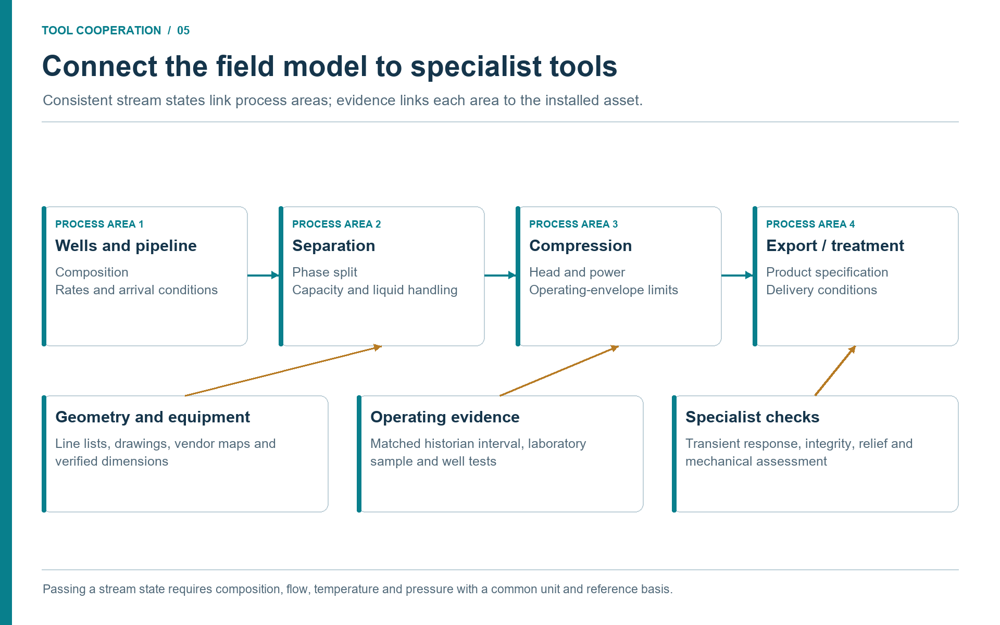
Discussion (Figure 5.1).
The model passes stream states between process areas while specialist tools examine particular constraints. This lets a compressor study reuse the fluid and flow established in the field case. When a specialist changes an accepted constraint, rerun the affected scenario and retain the resulting version so the recommendation refers to one consistent case.
5.14 Summary
Modular field models and equipment-detail studies are one decision chain. The modular model provides the process context, stable addresses, scenario states, and cross-area convergence. Equipment studies provide the datasheet, vendor, historian, maintenance, and standards evidence needed to understand the active constraint.
Key points from this chapter:
- Large facility models should be composed from named process areas.
- Stable automation addresses make tag mapping, reporting, and MCP calls reliable.
- Steady-state and dynamic simulation answer different questions; the agent should explain the mode choice.
- Equipment studies need evidence packages that separate simulation values, document values, tag values, and assumptions.
- Constraints from equipment studies should feed back into scenario states without corrupting the base model.
Exercises
- Area split: Divide a gas-processing facility into five process areas and define the stream handoffs.
- Equipment package: Define the evidence package for a compressor bottleneck study and mark which values come from model, engineering documents, tags, and maintenance records.
- Feedback loop: Describe how a separator capacity finding should be stored back into a field model without overwriting the base case.
This chapter uses references from the master bibliography.
Part III: Industrial Studies, Operations, and Governance
Safety, Standards, and Barrier Studies
Learning Objectives
After reading this chapter, the reader will be able to:
- Explain how agentic workflows can support, but not replace, process safety work.
- Connect NeqSim calculations to HAZOP, LOPA, SIL, relief, flare, and barrier studies.
- Describe how controlled engineering evidence and standards mapping improve safety traceability.
- Define review gates for safety-relevant MCP and agent outputs.
Beyond the online book: The online book mentions safety peripherally in flow assurance examples and case studies. This chapter provides dedicated coverage of HAZOP preparation, LOPA worksheets, SIL determination, relief and blowdown screening, barrier evidence, trapped-liquid fire rupture studies, and the review gates that must surround safety-relevant agentic outputs.
6.1 Safety Work Is Evidence Work
Process safety studies are structured ways of asking what can go wrong, how bad it can be, how likely it is, and which barriers prevent or mitigate the event. They are not simply calculations. They combine process understanding, equipment design, operating history, standards, human factors, and judgement.
Agentic engineering can help because much of the preparation is evidence work. An agent can assemble equipment lists, extract design pressures, identify relief devices, read operating envelopes, summarize maintenance history, and map applicable standards. NeqSim can calculate thermodynamic and process conditions that safety studies need: inventories, phase splits, relief properties, blowdown temperatures, hydrate or CO2 freezing margins, flare loads, and dispersion source terms.
The boundary is clear. Agents can prepare and screen. They cannot approve safety decisions. A HAZOP chair, discipline engineers, operations representatives, and technical authorities remain responsible for the study and its conclusions.
6.2 Standards Mapping
Standards mapping is one of the most useful early agent tasks. A safety or design study should identify which standards and company requirements apply before calculations begin. The applicable edition, jurisdiction, facility type, contractual basis, and departures belong in a reviewed requirements register. NORSOK or a particular operator standard is an example for an applicable project, not a worldwide default. IEC 61511 addresses the safety-instrumented system lifecycle in the process sector; a calculation alone does not satisfy that lifecycle. [25]
The following table is a topic map, not a declaration of code compliance:
| Topic | Common standards or methods | Example NeqSim support |
|---|---|---|
| Relief valve sizing | API 520, API 521 | Gas, liquid, two-phase relief properties and loads. |
| Flare radiation | API 521, API 537 | Flare load summaries and radiation screening. |
| Blowdown and MDMT | API 521, ASME pressure-vessel methods | Depressurization and minimum temperature screening. |
| SIL and LOPA | IEC 61508, IEC 61511 | LOPA worksheets and safety-function documentation. |
| Risk management and barriers | ISO 31000; jurisdictional and operator requirements; NORSOK Z-013 where applicable | Risk registers, barrier lists, bow-tie structures. |
| Pipelines | Applicable onshore or offshore pipeline code; DNV-ST-F101 for relevant submarine systems | Pressure drop, phase behavior, hydrate and dense-phase checks. |
The agent should not merely list standards. It should connect each standard to the calculation or decision it governs. If the task is "increase separator throughput," the standards map may identify vessel design, relief, flare, instrumented protection, and barrier-management implications.
6.3 HAZOP and Deviation Preparation
HAZOP studies use guidewords and process nodes to identify deviations. An agent can prepare the node package:
- process node description;
- equipment and stream list;
- normal operating envelope;
- design pressure and temperature;
- safeguards and trips;
- relevant historical alarms or incidents;
- known modifications and open actions.
For each node, the agent can suggest candidate deviations such as high pressure, low temperature, reverse flow, no flow, high level, low level, wrong composition, or hydrate formation. These suggestions are inputs to a human-led workshop, not automatic findings. The value is preparation: the team starts with a better evidence pack and spends more time on judgement.
6.4 LOPA, SIL, and Barrier Evidence
Layer of Protection Analysis (LOPA) and Safety Integrity Level (SIL) determination require clear initiating events, consequence categories, independent protection layers, frequencies, and risk targets. Agents can help by structuring data and checking consistency.
For example, a high-pressure scenario on a separator may need:
| Information | Source | Agent contribution |
|---|---|---|
| Design pressure | Vessel datasheet | Extract and cite. |
| Normal pressure | Historian tag window | Summarize steady-state distribution. |
| Relief capacity | PSV datasheet and NeqSim relief calculation | Compare required and installed capacity. |
| Shutdown function | Cause-and-effect and instrument data | Identify sensor, logic, final element. |
| Test history | Maintenance management system | Summarize proof-test or failure context. |
| Consequence | Process and safety model | Estimate inventory and source term. |
The agent can build a draft LOPA table, but independence of protection layers, credit for human action, common-cause failures, and target risk criteria are discipline decisions. This distinction should appear in the output.
6.5 Relief, Blowdown, and Flare Screening
Relief and flare studies are especially well suited to calculation-backed agents. NeqSim can calculate fluid properties and process states while MCP tools can expose validated routines for flash and process simulation. A workflow may screen blocked outlet, fire case, tube rupture, control-valve failure, or utility failure.
A good screening output includes:
- scenario definition and initiating event;
- fluid composition and thermodynamic model;
- source pressure, temperature, and phase state;
- required relief rate or blowdown rate;
- relief-device or flare-system assumptions;
- model limitations and need for formal verification.
For blowdown, the temperature trajectory can be as important as pressure. Low temperatures may challenge material limits, hydrate formation, CO2 freezing, or brittle fracture margins. The agent should report minimum temperature with the method and model assumptions, not just time to target pressure.
6.6 Safety Studies Linked to Controlled Evidence
Safety studies become stronger when they link directly to as-built evidence. A separator relief check can cite vessel datasheet, PSV datasheet, relief design basis, flare header drawing, cause-and-effect chart, and relevant operating tags. A compressor surge scenario can cite compressor curves, anti-surge valve datasheet, control narrative, and trip history.
The source manifest should be part of the safety artifact. It should list source name, revision, retrieval date, extracted fields, confidence, and reviewer. When a document revision changes, the study can be flagged for review.
The integration is a sequence of checked handoffs. A document search returns the approved P&ID revision and its equipment identifiers. A document extractor returns a draft barrier and isolation list with page references. The safety engineer reconciles it against the cause-and-effect register and the installed configuration. A maintenance reader then supplies proof-test records matched to the same safety-function identifiers. These are evidence about the barrier; they do not become fluid properties or simulation settings.
The process agent receives the reviewed isolation boundaries and inventory inputs, computes a release or depressurization scenario, and exports a source term with units, time basis, EOS, and limitations. A consequence-analysis specialist accepts that source term into the appropriate external model and returns a versioned result linked to the same scenario. The reporting tool joins the result and review record. A missing isolation boundary blocks inventory calculation; a missing proof-test record leaves barrier credit unresolved. This branching makes the tools cooperate without implying that retrieval validates a barrier.
Use the same pattern at an onshore gas plant, an offshore production host, an LNG terminal, or a refinery utility interface. Facility layout, congestion, occupancy, containment, and the governing requirements determine the scenario and specialist method. The controlled-document repository supplies the evidence; the workflow does not depend on a particular vendor or operator system.
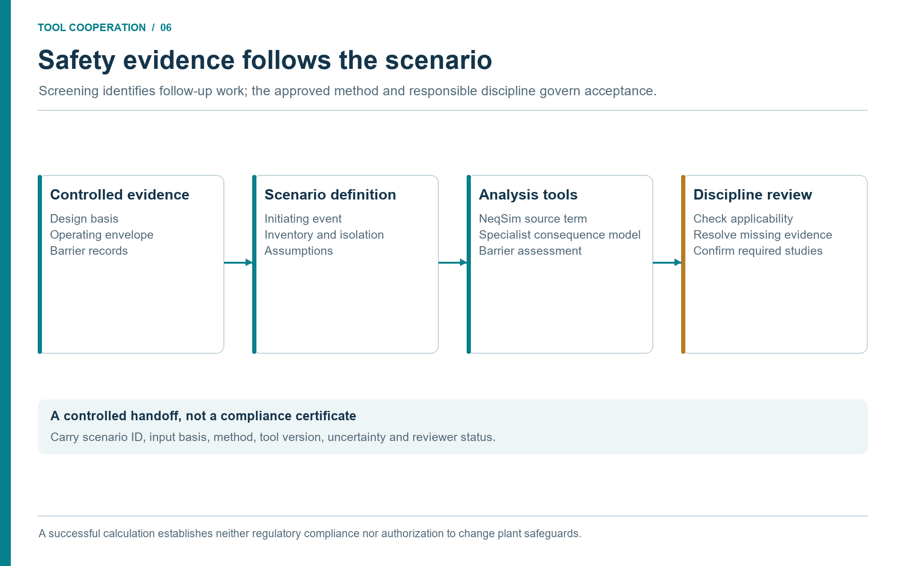
Discussion (Figure 6.1).
The source-term calculation, consequence model and barrier assessment answer different questions. Their inputs must refer to the same scenario and compatible assumptions. Use screening to identify required follow-up work, then apply the governing method and responsible review before treating the result as a decision basis.
6.7 Review Gates for Safety-Relevant Agents
Safety-relevant agent outputs need explicit gates:
| Gate | Purpose |
|---|---|
| Input approval | Ensure data sources and operating envelopes are accepted. |
| Method approval | Confirm standards, calculation methods, and model validity. |
| Results review | Check physical plausibility and sensitivity to assumptions. |
| Action review | Confirm recommendations are appropriate and controlled. |
| Archive | Store artifacts, source manifest, and reviewer decisions. |
These gates do not slow agentic workflows down unnecessarily. They make the accelerated work usable in a safety culture.
6.8 Worked Safety Thread: Separator Throughput Increase
Consider a proposal to raise throughput through an HP separator. A narrow process study might check phase split and liquid residence time. A safety-aware agentic workflow expands the thread.
First, the process model calculates new gas and liquid rates, phase densities, operating pressure, and temperature. The document reader retrieves vessel datasheet, nozzle data, PSV datasheet, cause-and-effect chart, and relevant P&ID extracts. The plant-data agent retrieves current level, pressure, flow, and trip history. The standards skill maps vessel capacity, relief, and barrier requirements. The safety agent then screens deviations: high pressure, high level, liquid carryover, gas blowby, hydrate or wax risk, and relief-load increase.
The following table is a fictional teaching example of a screening handoff; these outcomes have not been calculated for an actual separator:
| Safety question | Evidence | Screening outcome |
|---|---|---|
| Does higher gas rate affect carryover? | NeqSim phase properties and separator dimensions | Demister velocity approaches screening limit. |
| Does liquid inventory change relief or blowdown? | New level range and vessel volume | Blowdown inventory increases; formal check required. |
| Are existing trips still adequate? | Cause-and-effect and tag history | High-level trip exists; independence not assessed. |
| Does PSV case change? | PSV datasheet and blocked-outlet scenario | Relief load may increase; relief specialist review required. |
| Are procedures affected? | Operating window and alarm settings | Temporary operating instruction may need update. |
This thread does not approve the throughput increase. It tells the team where the safety questions are and what evidence already exists. It also prevents a common failure: treating a capacity calculation as if it automatically covered relief, barriers, and procedures.
6.9 Consequence Screening and CFD Source Terms
Safety studies frequently need to estimate the consequences of a release: thermal radiation from a jet or pool fire, flammable gas concentrations at occupied areas, toxic exposure, or overpressure from a vapor cloud explosion. The consequence-analysis specialist selects the required modelling method. Free-field consequence models and geometry-resolved CFD answer different questions; CFD is particularly relevant where obstacles or terrain influence the result. Phast and its separately selected CFD extensions illustrate this distinction. Tool name alone does not establish the method or its suitability. [26]
The source term is the handoff: release rate, composition, phase state, temperature, pressure, and momentum. NeqSim can supply thermodynamic and process inputs, subject to the release model's assumptions and validation envelope. [2]
The neqsim.process.safety.scenario package provides a ReleaseDispersionScenarioGenerator that walks a ProcessSystem, discovers high-pressure streams, and builds release scenarios with:
- hole-size taxonomy (small, medium, large, full-bore);
- weather envelope (stability classes, wind speeds);
- source-term properties from NeqSim flash calculations;
- trapped-inventory estimates from vessel and pipe volumes;
- consequence branches (jet fire, flash fire, vapor cloud explosion, toxic).
The GasDispersionAnalyzer in neqsim.process.safety.dispersion connects NeqSim thermodynamics to consequence screening. Its automatic selector first equilibrates the fluid at ambient pressure and temperature, then chooses dense-gas screening when the gas-to-air density ratio exceeds 1.2; otherwise it uses passive Gaussian screening. This selection does not retain cold-release temperature. Cold releases, two-phase dispersion, and buoyancy-dependent behavior require an appropriately qualified specialist model. For quick screening, the built-in GaussianPlume class provides downwind concentration estimates at specified distances, stability classes, and release heights.
The CfdSourceTermExporter in neqsim.process.safety.cfd can format the source terms into neutral JSON or OpenFOAM-oriented skeleton files for handoff to specialist CFD analysts. This is a clear example of the boundary between screening and formal analysis. NeqSim calculates the source term and provides screening-level dispersion estimates. The specialist tool provides the detailed field.
The agentic value is that an agent can build the release inventory from the process model, estimate the source term, run screening dispersion, and prepare the CFD input file --- using a documented exchange artifact between tools. A neutral file is not proof that the receiving tool imported it correctly. The safety engineer reviews the source terms, approves the scenarios, and runs the formal CFD when warranted. The agent accelerates the preparation; the engineer controls the result.
6.10 Trapped-Liquid Fire Rupture Studies
A blocked-in liquid-filled pipe segment exposed to fire can develop pressure exceeding the pipe or flange rating if no relief device is present. This is a thermal-expansion rupture scenario, often missed in conventional relief studies because it involves piping rather than vessels.
The TrappedLiquidFireRuptureStudy class in neqsim.process.safety.rupture orchestrates a transient screening that requires inputs from multiple document and data sources:
| Input | Source | Agent retrieval method |
|---|---|---|
| Pipe geometry (diameter, wall thickness, length) | Piping specification in the engineering repository | Technical document reader. |
| Material grade and yield strength | Material certificate or piping spec | Document reader or CSV lookup. |
| Flange rating and gasket type | Line list and flange datasheet | controlled-document retrieval. |
| Liquid composition and initial conditions | Process model or line list | NeqSim flash at blocked-in conditions. |
| Fire zone and PFP coverage | Fire and area classification documents | Document reader or fire-zone drawing. |
| Relief basis | Relief philosophy or P\&ID | Check whether a relief device exists. |
The study models wall heating under a configured fire exposure, tracks liquid thermal expansion and pressure rise, and screens mechanical limits. The analyst must verify the heat-input model, exposed area, material properties at temperature, relief assumptions, and PFP representation against the chosen method. A standards label in the output is not evidence of code compliance, and a screening cannot specify PFP performance without the required fire and mechanical assessment. [2]
This is an especially strong example of agentic integration because the study cannot be performed from simulation data alone. It needs piping specifications, material certificates, flange data, and fire-zone information. It also cannot be performed from documents alone --- it needs thermodynamic calculations for liquid expansion and phase behavior under heating. The agent that combines both sources produces a screening that would otherwise require a specialist to manually assemble inputs from five or six different systems.
The output includes time-to-rupture, peak pressure, von Mises stress versus allowable stress at each time step, applicable standards, and actionable recommendations. This artifact is ready for review by a piping or safety engineer who can approve, reject, or escalate the screening.
6.11 Limits of Automation in Safety Work
Safety work contains judgements that should not be delegated to a model. Examples include whether two protection layers are truly independent, whether an operator action can be credited, whether a cause is credible for a specific facility, whether a procedural control is robust, and whether residual risk is acceptable. These judgements depend on context, experience, regulations, company requirements, and accountability.
Agents can still help by preparing options. They can draft a bow-tie structure, list candidate barriers, identify missing evidence, and calculate process conditions. They can check whether a report forgot to mention low-temperature embrittlement or flare back-pressure. They can compare scenario assumptions against source documents. But the final safety claim must belong to qualified people in an approved process.
This boundary should be stated in safety outputs. A useful phrase is: "This is an agent-prepared screening based on the sources listed. It is not a HAZOP, LOPA, SIL verification, relief design approval, or management-of-change approval." Such wording may feel cautious, but it protects both the study and the organization.
6.12 Safety Memory and Learning
Safety workflows benefit from controlled memory, but only for reusable lessons, not confidential incident detail. Good memory entries include known API patterns, common data-quality issues, standard review checklists, and generic pitfalls. Poor memory entries include private incident descriptions, asset names, or unreviewed assumptions.
For example, a repository memory may record that blowdown studies should always report both pressure-time and minimum metal-temperature screening, or that relief calculations should state whether pressure is gauge or absolute. A skill may record that HAZOP preparation packages should include cause-and-effect charts, alarm lists, and operating-history summaries. These memories make the next study better without exposing sensitive data.
6.13 Summary
Agents can make safety studies better prepared, more traceable, and faster to screen. They retrieve evidence, structure deviations, map standards, run calculations, and draft artifacts. Human safety processes remain in control of approval and final decisions.
Key points from this chapter:
- Safety studies are evidence and judgement workflows, not just calculations.
- Standards mapping should be tied to specific decisions and calculation methods.
- Controlled-document links and source manifests improve traceability for barrier and relief studies.
- Consequence screening and CFD source-term generation connect process simulation to specialist safety tools.
- Trapped-liquid fire rupture studies combine piping documents, material data, and thermodynamic simulation into a screening that no single source can provide alone.
- Safety-relevant agent outputs require explicit human review gates.
Exercises
- HAZOP package: Build a preparation checklist for a compressor suction scrubber HAZOP node.
- LOPA evidence: Identify the evidence needed to credit an independent high-pressure trip in a LOPA.
- Review gate: Define the minimum review gates for an agent-generated relief screening.
- Source term: For a 50 mm hole in a 100 bar gas line, list the thermodynamic properties an agent needs from NeqSim to prepare a CFD source-term file.
- Trapped-liquid study: Identify the six categories of input documents needed for a trapped-liquid fire rupture screening on a blocked-in pipe segment.
This chapter uses references from the master bibliography.
Operational Studies and Decision Workflows
Learning Objectives
After reading this chapter, the reader will be able to:
- Identify routine operational studies that benefit from NeqSim MCP and agents.
- Describe a decision workflow from question to evidence, calculation, and recommendation.
- Explain how live or recent plant data changes the frequency and usefulness of studies.
- Recognize when a fast screening should be escalated to a formal engineering task.
Beyond the online book: The online book's case-study catalogue contains 40+ completed tasks. This chapter shows how those same patterns become repeatable operational workflows: daily hydrate screening, weekly compressor monitoring, root cause analysis, water hammer screening, dynamic simulation, and P&ID-driven what-if studies.
7.1 From Occasional Studies to Continuous Readiness
Many operational questions repeat: Can we increase production today? Is hydrate margin acceptable? Why did compressor power increase? Is the flare load still inside expected limits? Which operating condition drives CO2 emissions? Should a heat exchanger be cleaned during the next opportunity?
Historically, these questions often became studies only when the potential value was high enough to justify data gathering and model setup. With an MCP-enabled NeqSim workflow, the threshold can be lower. Agents can keep the evidence path short: retrieve current data, run the relevant model, compare against limits, and produce a short result that is ready for engineering review.
The goal is continuous readiness, not uncontrolled automation. The organization builds a library of workflows that are ready to run when the question appears.
7.2 A Generic Decision Workflow
A practical operational workflow has seven steps:
- state the decision and time horizon;
- identify required data and approved sources;
- retrieve and quality-check evidence;
- select or update the NeqSim model;
- run base case and sensitivities;
- compare results with criteria;
- issue recommendation, limitations, and escalation need.
This structure prevents the agent from jumping straight to a calculation. For example, "Can we raise gas export by 5% for the next 24 hours?" is not a pure compressor calculation. It may involve well deliverability, separator liquid handling, compressor driver margin, dew point, export pressure, flare constraints, and power emissions. The agent should either run the relevant multi-area workflow or state that the evidence is insufficient.
Cooperation between the tools
A tool chain becomes useful when each tool receives a defined artifact and returns something the next tool can inspect. For a compressor performance review, use the following sequence. The filenames describe a proposed study package, not built-in MCP endpoints.
| Handoff | Artifact passed onward | Check and next branch |
|---|---|---|
| Asset register and document search → document reader | Equipment identity, approved map, driver datasheet, control narrative | Equipment engineer resolves revisions and map basis; missing map blocks map-limit conclusions. |
| Historian reader → data-quality notebook | Timestamped P/T/flow/power/speed records with native units and quality flags | Reject bad periods and select a stable window; an upset goes to an event investigation instead. |
| Laboratory system → fluid-preparation step | Sample record, composition, sample location/time and analytical basis | Process/PVT reviewer checks representativeness and component mapping. |
| Production accounting → reconciliation step | Period-specific well tests or plant balance, allocation version and standard-volume basis | Compare like periods and boundaries; discrepancies remain visible. |
| Reviewed evidence → NeqSim MCP | model_inputs.json, EOS/mixing rule and approved model revision |
Input validation and base-case comparison gate scenario calculations. |
| NeqSim scenarios → equipment reviewer | scenario_results.json, warnings and map/power comparisons |
Rank technically supported alternatives; unsupported constraints remain open. |
| Maintenance and MOC readers → decision review | Work-order timeline, approved restrictions and pending changes | These constrain timing and actionability; they do not change calculated efficiency by themselves. |
| Reviewed decision → PaperLab or reporting tool | Results, source manifest, figures, reviewer status and next actions | Produce an advisory report and retain reproducible artifacts. |
An available NeqSim server does not imply that historian, laboratory, maintenance, or document connectors are installed. Discover each tool and its schema separately. Where read access is unavailable, use an authorized export and record its date and limitations. A hypothetical export must remain labelled as such. The detailed example in Chapter 9 uses this same contract. [11, 4]
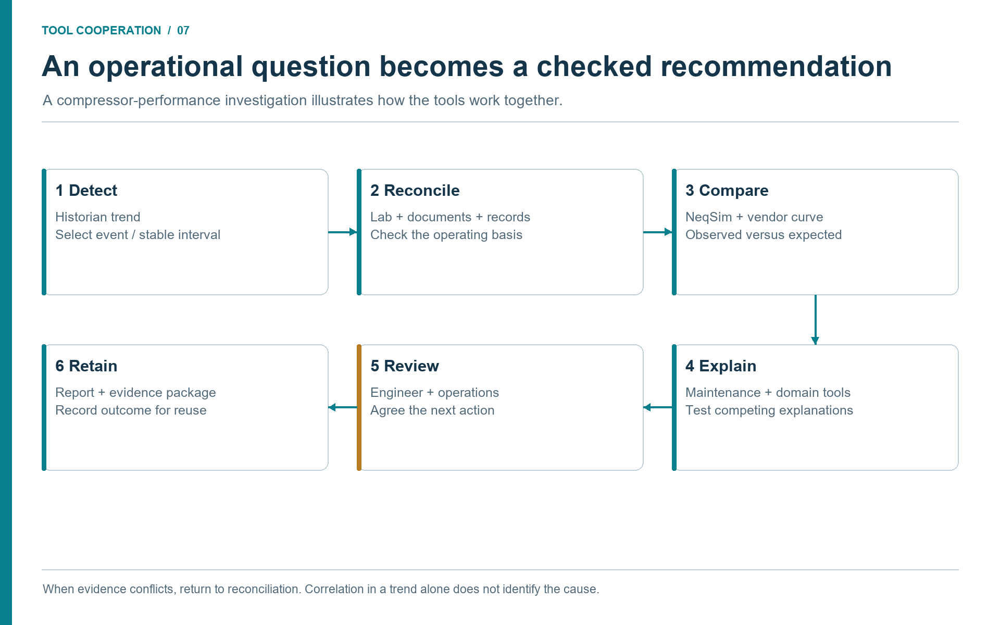
Discussion (Figure 7.1).
A trend identifies the question; it does not establish its cause. Comparing a reconciled operating case with a physical model narrows the explanations, while maintenance and specialist evidence test what remains. If records conflict, return to the evidence step instead of forcing the model to match an unexplained observation.
7.3 Flow Assurance Screening
Flow assurance is a natural operational use case. Hydrate formation, wax risk, liquid loading, and arrival temperature depend on changing production, composition, pressure, temperature, and inhibitor injection. A daily or weekly screening can combine historian data, lab composition updates, and pipeline models.
An agentic hydrate-margin workflow may:
- retrieve recent pressure, temperature, water content, and flow tags;
- validate composition and inhibitor data;
- run NeqSim hydrate or phase-envelope calculations;
- compare predicted hydrate temperature to operating temperature;
- flag cases where margin is below the operational criterion;
- prepare a recommendation for chemical injection or operating adjustment.
The output should include the method, EOS or hydrate model, selected time window, and uncertainty. If the result is near the limit, the workflow should escalate to a flow-assurance specialist rather than presenting a final answer.
7.4 Compressor and Energy Monitoring
Compression is often one of the largest energy consumers offshore and onshore. Small deviations in suction temperature, molecular weight, recycle, fouling, or driver efficiency can have large power and emissions impacts. Agentic workflows can combine process simulation with historian and vendor evidence to produce regular performance checks.
Typical indicators include:
| Indicator | Data needed | Decision use |
|---|---|---|
| Polytropic efficiency trend | Suction/discharge P/T, flow, speed, composition | Detect degradation or map mismatch. |
| Recycle valve opening | Valve position and flow estimate | Identify lost capacity or wasted power. |
| Driver load margin | Driver power tag and datasheet | Check production-increase feasibility. |
| CO2 intensity | Fuel gas, power, production | Rank energy-efficiency actions. |
NeqSim provides thermodynamic properties and compressor calculations. Tags and vendor curves provide reality checks. Maintenance context can explain whether a trend matches known maintenance events.
7.5 Production Optimization
Agentic workflows can also support production optimization. A modular field model can test multiple production scenarios while respecting equipment constraints. The agent can vary well rates, separator pressures, compressor set points, or pipeline arrival pressures, then report bottlenecks and trade-offs.
The important engineering control is constraint transparency. The workflow must state what limits were enforced: maximum compressor power, minimum hydrate margin, separator liquid capacity, export pressure, emissions cap, flare restriction, or reservoir drawdown limit. Without transparent constraints, optimization results are not trustworthy.
7.6 Integrity and Maintenance Planning
Access to maintenance and inspection records enables operational studies that combine performance and integrity. For example:
- Heat exchanger cleaning priority based on duty loss, production impact, and planned maintenance windows.
- Control-valve replacement priority based on valve position saturation, pressure-drop loss, and spare availability.
- Compressor wash or inspection timing based on efficiency trend and known maintenance history.
- Separator inspection planning based on water production, corrosion risk, and capacity sensitivity.
These are not pure simulations. They are decision workflows where simulation quantifies impact and enterprise data constrains action.
7.7 When to Escalate
A fast operational screening should escalate when:
- the result is close to a safety or operating limit;
- source data quality is poor or conflicting;
- the model is outside its validation envelope;
- the recommendation changes a controlled operating procedure;
- the decision affects safety, environment, production commitments, or major cost.
Escalation is a success condition, not a failure. It means the workflow found a question that deserves formal engineering attention.
7.8 Operating Rhythm
Operational workflows become more valuable when they have a rhythm. Not every calculation should be run continuously, and not every workflow needs the same review depth. A useful operating rhythm might be:
| Frequency | Workflow | Typical review |
|---|---|---|
| Daily | Hydrate margin, compressor driver margin, flare status | Operations engineer screening. |
| Weekly | Energy intensity, heat exchanger duty, recycle losses | Process engineer review. |
| Monthly | Model-vs-plant reconciliation, equipment degradation trends | Discipline review. |
| Campaign | Production optimization, shutdown opportunity screening | Multi-discipline study. |
| Event-driven | Alarm clusters, trips, unusual emissions, equipment failure | Specialist escalation. |
This rhythm helps teams avoid two extremes: never using the model until a major study is needed, or running too many automatic calculations with no review path. Each workflow should have a trigger, owner, expected output, and escalation criterion.
7.9 Economics and Emissions in Operations
Operational decisions are rarely technical only. A compressor recycle loss has a power cost and an emissions cost. A heat exchanger cleaning may recover production but require shutdown time. A production increase may improve revenue while increasing fuel gas and CO2 emissions. Agentic workflows can bring these dimensions into the same decision table.
For example, a compressor optimization workflow can calculate:
- additional export gas from a pressure-setpoint change;
- additional driver power and fuel gas;
- incremental CO2 emissions;
- hydrate or dew-point margin;
- compressor operating margin;
- estimated economic value over the operating period.
This does not replace a formal economic model, but it helps operations see trade-offs. A recommendation such as "increase production" is weaker than "increase production only if suction temperature remains below the defined limit, recycle stays closed, and incremental CO2 intensity remains inside the weekly target." The second recommendation is operationally useful because it links action to constraints.
7.10 Human Interfaces
The best operational agent is not one that produces the longest report. It is one that produces the right level of information for the decision. A control-room advisory view may need a short status: margin, trend, confidence, and action. A process engineer may need the full source manifest and sensitivity table. A technical authority may need validation history and standards basis.
Good interfaces separate these layers. The same workflow can produce a compact dashboard card, a detailed notebook, and a formal report. MCP tool outputs and task artifacts make this possible because the underlying results are structured. The interface can choose how much to display without changing the calculation.
The human interface should also show uncertainty and stale data clearly. A green status based on yesterday's composition should not look identical to a green status based on a current lab update. A hydrate margin of 2.0 °C with high data confidence is not the same as 2.0 °C with missing inhibitor data. Agents should surface these differences in the UI and report text.
7.11 Root Cause Analysis: Combining Data, Documents, and Simulation
When equipment trips, vibrates, loses efficiency, or behaves unexpectedly, the traditional response is a manual investigation. An engineer gathers historian trends, reads the datasheet, reviews maintenance history, runs a simplified calculation, and proposes a hypothesis. The process is thorough but slow, and the quality depends heavily on how many data sources the engineer thinks to check.
NeqSim's RootCauseAnalyzer in the neqsim.process.diagnostics package implements a Bayesian-inspired methodology that an agent can orchestrate as a single coherent workflow. The three stages are:
- Prior (reliability evidence). Candidate hypotheses start from configured prior weights and may be adjusted using the reliability data available to the implementation. Record the actual source, equipment population, and matching rule. OREDA is a possible external source of reliability and maintenance evidence, but an identifier or class comment does not establish access to licensed OREDA data. [27, 2]
- Likelihood (historian and document evidence). The analyzer takes historian time-series data, controlled design conditions, and operating limits, and updates each hypothesis score based on how well the evidence matches. The report should expose which observed changes support or contradict each hypothesis. Anti-surge valve position alone does not measure surge margin; the engineer needs the compressor map, corrected operating point, control state, and time alignment. Stable bearing temperature does not exclude a mechanical fault.
- Verification (process simulation). The analyzer can optionally run the NeqSim process model to test whether a hypothesized failure reproduces the observed symptoms. If fouling is a hypothesis, the model can be run with reduced efficiency to check whether the predicted discharge conditions match the observed discharge pressure and temperature.
The result is a RootCauseReport with ranked hypotheses, scores, evidence, and recommendations. Its normalized scores rank the configured candidates; they are not calibrated probabilities that a fault is present. Preserve verification status and coverage: UNSUPPORTED, UNKNOWN, and FAILED do not mean that a hypothesis has been physically confirmed. A process model can test supported performance perturbations, but does not thereby reproduce rotor vibration or prove a mechanical diagnosis. [2]
Why this matters for agentic engineering
The RootCauseAnalyzer is a concrete example of a class that cannot work in isolation. It needs data from a historian (field measurements), context from controlled engineering documents (design limits, datasheet conditions, maintenance history), and computational capability from NeqSim (flash, process model, equipment performance). No single tool or data source is sufficient. The agent orchestrates all three, and the RootCauseAnalyzer provides the structured methodology that exposes the evidence and limitations for review.
An MCP tool (runRootCauseAnalysis) exposes this to any MCP client. The agent sends a JSON object containing the process description, equipment name, symptom type, and optionally historian CSV data, design limits, and equipment-document context. The runner builds the ProcessSystem, creates the RootCauseAnalyzer, runs the analysis, and returns the structured report. The agent does not need to know the internal scoring algorithm. It needs to know how to gather evidence from its available data sources and present it in the expected format.
Example: compressor high vibration
An agent receiving a report of high vibration on a compressor might execute the following workflow:
- Retrieve the compressor performance curve and design limits from the controlled engineering repository.
- Read historian tags for suction and discharge pressure, temperature, flow, speed, vibration, and anti-surge valve position.
- Read maintenance history from the maintenance system for recent work orders on the compressor.
- Build the process model from the existing modular field model.
- Call
runRootCauseAnalysiswith the process JSON, equipment name,HIGH_VIBRATIONsymptom, historian data, and design limits. - Receive a ranked hypothesis report with supporting and contradicting evidence, verification coverage, and explicit data gaps.
- Present the report to the operations or rotating-equipment engineer with evidence citations and recommended actions.
The value is a reviewable evidence package that reduces repeated collection work. Any claim about time saved needs measurements from the deployed workflow; no timing benchmark is established by this example.
7.12 Operational Scenarios: What-If Studies from P&IDs
Operational what-if studies are among the most frequent requests in facility engineering. What happens if we close this valve? What if suction pressure drops 5 bar? What if the feed composition changes? What if we apply the current field data and then change one parameter?
NeqSim's OperationalScenarioRunner provides a structured way to define and execute these studies. An OperationalScenario is an ordered list of OperationalAction objects, each specifying an action type and target:
| Action type | What it does |
|---|---|
SET_VARIABLE |
Sets a simulation variable through the automation API. |
SET_VALVE_OPENING |
Changes a valve position (0--100%). |
APPLY_FIELD_INPUTS |
Applies previously supplied field data through the process's tagged measurement bindings. |
RUN_STEADY_STATE |
Invokes the steady-state process run; acceptance still requires checking convergence, balances, and errors. |
RUN_TRANSIENT |
Advances through the requested duration using the configured time step and a bounded final step. |
An OperationalTagMap can prepare field data separately, but the APPLY_FIELD_INPUTS action itself calls the process's existing bindings.
A P\&ID-derived scenario might look like this:
OperationalScenario scenario = OperationalScenario.builder("Close bypass valve")
.addAction(OperationalAction.applyFieldInputs())
.addAction(OperationalAction.setValveOpening("XV-2001", 0.0))
.addAction(OperationalAction.runSteadyState())
.build();
The OperationalScenarioRunner executes actions on the ProcessSystem passed to it. The caller must provide a separate copy or restore an approved model state before each independent scenario. Its action result captures supported before-and-after values; a complete comparison of all bound tags requires an explicit benchmark or evidence-package step. Inspect action errors before accepting a scenario as executed. [2]
This is how agentic engineering connects to real plant operations. The agent reads a P\&ID to identify the relevant valves and instruments. It reads the historian to get current boundary conditions. It constructs scenarios that represent proposed operating changes. It runs the simulation and returns quantified consequences. The P\&ID, the historian, and the simulation are all required. Removing any one of them makes the study either disconnected from reality or unable to predict consequences.
7.13 Controller Tuning from Historian Data
Control loops are rarely tuned once and forgotten. Operating conditions change, equipment degrades, and control objectives shift. The ControllerTuningStudy class in neqsim.process.operations evaluates controller performance using time-domain metrics computed from a step response:
| Metric | What it measures |
|---|---|
| Mean Absolute Error (MAE) | Average deviation from setpoint over the response window. |
| Integral Absolute Error (IAE) | Total accumulated deviation over time. |
| Integral Squared Error (ISE) | Emphasizes large deviations more than small ones. |
| Overshoot percentage | Maximum overshoot as a fraction of the step size. |
| Settling time | Time to reach and stay within a tolerance band. |
| Output saturation | Whether the controller output hits its limits. |
| End-window stability screen | Whether final error and variation in the final sample window satisfy the selected tolerance; not a proof of control-system stability. |
The study takes pre-recorded time-series arrays --- controller name, setpoint, time stamps, process values, and controller output --- evaluates the step response, and returns a structured ControllerTuningResult with all metrics, a screening assessment, and a recommendation about tuning, disturbance rejection, or actuator limits. These diagnostics do not synthesize a validated controller tuning. An agent can retrieve historian step-response data from an approved historian reader, pass it to the study for evaluation, and flag controllers that show degraded performance.
This is a practical example of a study that was previously too labor-intensive for routine execution. A process engineer might tune a few critical loops per year. An agentic workflow can screen all loops in a process area weekly, flagging only those that need human attention. The historian provides the evidence; the step-response analysis supplies measured performance metrics. Predicting the effect of new tuning requires a separately validated dynamic model.
7.14 Water Hammer and Transient Screening
Rapid valve closures, pump trips, and check-valve events can generate pressure surges that threaten pipe integrity. Water hammer screening traditionally requires route geometry, fluid properties, wall thickness, valve closure profiles, and surge-propagation calculations. These inputs come from different systems: piping design from controlled piping line lists, fluid properties from the process model, valve closure times from control narratives or instrument datasheets, and operating conditions from the historian.
NeqSim's WaterHammerStudy class orchestrates this multi-source workflow. It accepts a JSON specification with:
- route geometry (pipe segments with length, diameter, elevation, wall thickness);
- fluid specification or a reference to the process model;
- supported valve-event schedule (closure or opening profile);
- optional historian-data overrides for actual operating conditions;
- acceptance criteria (design pressure, MAOP).
The inspected WaterHammerStudy runner handles valve events; a pump-trip scenario needs separately verified pump and network dynamics. The study builds a WaterHammerPipe model from the specification, applies field-data overrides where available, runs the transient calculation, and returns a pressure envelope with peak surge, Joukowsky estimates, and pass/fail against design pressure.
The agentic value is integration. An agent can:
- Extract route geometry from a piping line list retrieved from the controlled engineering repository.
- Get current fluid properties from the process model.
- Read valve closure time from the control narrative document.
- Read current operating pressure and flow from historian tags.
- Run the water hammer screening with all inputs combined.
- Compare peak surge against design pressure from the pipe specification.
Without the agent, this study requires a specialist to manually collect inputs from five or six systems. With the agent, the inputs are gathered and validated programmatically, and the engineer reviews the result rather than the data collection.
7.15 Dynamic Simulation as Operational Infrastructure
Sections 7.13 and 7.14 showed controller tuning and water hammer as specific dynamic-simulation use cases. But dynamic simulation is a broader operational capability that deserves explicit framing. Steady-state models answer "what does the process look like at equilibrium?" Dynamic models answer "what happens between now and equilibrium?"
Operational decisions that need dynamic simulation include:
| Decision | Why dynamic is needed |
|---|---|
| Emergency depressurization timing | Pressure, temperature, and metal temperature evolve over minutes to hours. |
| Startup sequence validation | Equipment sees off-design conditions during startup; sequence timing matters. |
| Shutdown cascading effects | Tripping one unit may propagate pressure and level changes to connected units. |
| Surge protection | Compressor surge happens in seconds; the control response must be faster. |
| Slug management | Liquid slugs produce transient level and pressure changes in separators. |
| Process upset recovery | After a trip, how long before levels stabilize and production resumes? |
| Safety system response time | Safety instrumented functions must act within specified time limits. |
In NeqSim, the transition from steady-state to dynamic is handled by the same ProcessSystem. The agent calls process.run() for steady-state and process.runTransient(dt) for dynamic steps. The DynamicProcessHelper class can add typical transmitters and controllers and set a default time step and supported equipment to dynamic mode. Holdup, equipment-specific dynamic physics, initial conditions, and time-step adequacy remain explicit modelling work. Calling a transient method does not ensure that every connected unit represents the required transient phenomenon. [2]
The agentic workflow for a dynamic study typically follows this pattern:
- Initialize from steady-state. Run the process model to convergence at normal operating conditions. This sets the initial holdup, pressure, and temperature profiles.
- Define the event. Specify what changes: a valve closes, a trip signal fires, a feed rate drops, or a setpoint changes.
- Run the transient. Step through time, recording key variables at each step.
- Evaluate the response. Check whether pressures, temperatures, levels, and controller outputs stay within acceptable limits. Check whether the system returns to a stable state.
- Report. Present the time-domain response with key metrics: peak pressure, minimum temperature, settling time, and pass/fail against acceptance criteria.
The inspected runDynamic runner accepts a process specification, duration, time step, and optional controller tuning. It instruments the process and records the generated transmitter time series. It does not parse an arbitrary event schedule or user-selected recording list. Startup events, custom states, and specialized equipment physics therefore require another supported study tool or a reviewed custom transient workflow. Check the deployed schema and actual result duration before treating a requested study as executed. [11, 2]
Dynamic simulation is particularly valuable when combined with real-time or recent historian data. An agent can read the current operating conditions from historian tags, initialize the dynamic model at those conditions, and then simulate a proposed event. The result estimates the response for the recorded state and model assumptions. Data latency, unmeasured holdup, control status, and dynamic-model coverage limit how closely that estimate represents the present plant.
7.16 Production Data, Project Documents, and Modification Context in Operations
Operational workflows draw on more than simulation and instrumentation. Three additional data categories from the operational data ecosystem (Chapter 1) deserve explicit treatment in the operational context.
7.16.1 Production Data as Operational Intelligence
Production databases contain well test results, daily production reports, and allocation data. These are not raw sensor readings — they are processed, reconciled to a reporting or allocation basis. A production record is not automatically an approved fiscal measurement; its status and intended use must be established. For operational process simulation, production data serves three purposes:
- Reservoir boundary conditions. The latest well test provides the actual GOR, water cut, wellhead pressure, and flow rate for each well. A facility simulation that uses design-case well data may be significantly wrong if the reservoir has matured.
- Throughput validation. Daily production reports provide measured total rates that the simulation should reproduce. A difference may arise from model error, measurement error, reporting period, inventory change, allocation logic, or differing standard conditions. Resolve these bases before interpreting the deviation.
- Trend context. Declining well rates, increasing water cut, or changing GOR over months provide the context for operational decisions. A recommendation to increase production rate must consider whether the wells can actually deliver the higher rate.
The agent pattern is to read the latest well test data, set the simulation boundary conditions accordingly, and flag any discrepancy between modeled and reported production. Use a task-specific currency criterion for well tests and an agreed reconciliation tolerance. Exceeding either is a data-quality branch, not a reason to silently recalibrate the model.
7.16.2 Project Documentation for Operational Studies
Project documentation provides the design intent: what the facility was designed for, what margins were assumed, and what acceptance criteria were set. In operational studies, project documentation answers questions like:
- What was the original design flow rate for this separator?
- What composition range was the compressor designed for?
- What hydrate margin was required at the design stage?
- Was a higher throughput scenario evaluated and rejected? If so, why?
An agent that retrieves the design basis memorandum or FEED report before running a capacity screening can compare "current operation vs. design intent" rather than just "current operation vs. model prediction." This comparison is far more useful for decision-making because it shows whether the facility is operating inside or outside its design envelope.
7.16.3 Modification Management as Operational Context
Modification records from maintenance, management-of-change (MOC), or project planning systems provide essential context for operational recommendations. Before recommending a process change, the agent should check:
- Is there a pending modification that affects this equipment?
- Has the recommended change been evaluated before? What was the outcome?
- Is the current configuration temporary due to an in-progress modification?
This prevents the agent from producing recommendations that conflict with approved changes or repeat work that has already been done. It also allows the agent to recognize when a simulation should use the as-will-be configuration (after a pending modification) rather than the as-is configuration.
7.17 The Evidence Package as Integration Pattern
The individual studies described above --- root cause analysis, operational scenarios, controller tuning, water hammer --- share a common integration pattern. Each one combines technical documentation, field measurement data, and NeqSim simulation into a structured, auditable output. The OperationalEvidencePackage class formalizes this pattern.
An evidence package is built from:
- a process system (the simulation model);
- a tag map (the binding between plant tags and simulation variables);
- field data (historian values for the current operating window);
- scenarios (what-if operating changes);
- a benchmark tolerance (the acceptable model-versus-plant deviation).
Start from a constructed, converged base process. The package applies supported field-data bindings and reruns when those inputs are supplied, compares tags marked as benchmarks, evaluates configured scenarios on copies, and returns capacity information and quality gates. It does not retrieve external sources or automatically include the full document, laboratory, maintenance, and review record. The agent joins those artifacts through the source manifest. Inspect benchmark count, missing fields, errors, and model coverage before reporting a successful comparison. [2]
This is the key architectural insight of agentic engineering in NeqSim. The value does not come from faster flash calculations or better EOS models, though those matter. The value comes from the structured orchestration of multiple data sources into a single, reviewable evidence chain. The agent is the coordinator. The tag map is the bridge. The evidence package is the deliverable.
The pattern is extensible. A safety study can add barrier evidence to the same package. An economics study can add cost and emissions data. A maintenance study can add maintenance work-order context. Each extension adds a new evidence dimension without changing the orchestration pattern.
Applying the chain across the industry
The chain is portable because the roles and handoff checks remain stable while the boundary conditions change. At an onshore gas-processing plant, a gas quality question joins laboratory composition, inlet metering, dehydration history, and the sales specification. At an LNG facility, a feed-change screen also needs the pretreatment and liquefaction interface limits; a whole-train capacity claim requires validated coverage of those units. For a transmission pipeline, route/GIS records, compressor-station data, nomination periods, and delivery constraints define the study. At a refinery or terminal interface, product assays, tank inventory, utility balances, and transfer schedules replace well tests and reservoir forecasts where appropriate.
In each case the agent sends reviewed inputs to the model, receives calculated outputs with limitations, and sends those outputs to a discipline reviewer and a reporting tool. A simulator or specialist application outside NeqSim may supply a required unit model or dynamic study through a checked export. The exchange must carry units, stream basis, model revision, and convergence status; matching software labels are not sufficient validation.
7.18 Summary
Operational workflows turn NeqSim MCP and agents into a repeatable decision support system. They can make routine studies faster and more frequent while keeping human review and escalation at the center. The new infrastructure in neqsim.process.operations and neqsim.process.diagnostics provides concrete classes that combine technical documents, field data, and simulation into structured evidence packages, root-cause reports, scenario comparisons, and transient screenings.
Key points from this chapter:
- Agentic workflows lower the effort required to run evidence-backed operational studies.
- Flow assurance, compression, energy, production optimization, and maintenance planning are strong use cases.
- Root cause analysis combines declared reliability evidence, historian observations, and supported process perturbations into ranked hypotheses.
- Operational scenarios execute P\&ID-derived what-if studies with before/after comparison.
- Controller tuning studies screen loop performance from historian step responses and simulated transients.
- Water hammer screening orchestrates route geometry, fluid properties, valve events, and field data.
- Dynamic simulation complements steady-state for time-dependent decisions: depressurization, startup, surge, and upset recovery.
- Production databases provide reservoir boundary conditions, throughput validation, and trend context for operational models.
- Project documentation anchors operational recommendations to design intent and acceptance criteria.
- Modification management prevents recommendations that conflict with approved or pending changes.
- The evidence package is the integration pattern: tag map, field data, scenarios, and simulation in one auditable artifact.
- Optimization must expose constraints and validation limits.
- Screenings should escalate when limits, data quality, or controlled procedures are involved.
Exercises
- Hydrate workflow: Design a daily hydrate-margin screening workflow with required tags, model calls, and escalation rules.
- Compressor energy: Define three compressor performance indicators and the data needed to calculate them.
- Optimization constraints: List the constraints that should be enforced in a short-term production-increase study.
- Root cause analysis: A separator shows increasing liquid carryover to the gas outlet. List the data sources an agent should gather, the symptom type, and three candidate hypotheses with the evidence that would support or refute each.
- Operational scenario: Define a three-action operational scenario for testing the effect of closing a bypass valve around a heat exchanger, starting from current field conditions.
- Evidence package: Describe the structure of an evidence package for a weekly compressor performance review, listing tag bindings, tolerance criteria, and escalation conditions.
This chapter uses references from the master bibliography.
Governance, Quality, and Adoption Roadmap
Learning Objectives
After reading this chapter, the reader will be able to:
- Define quality requirements for MCP-backed engineering workflows.
- Explain validation, provenance, audit trails, access control, and model risk.
- Select appropriate deployment controls for desktop, study-team, advisory, and enterprise use.
- Plan a staged adoption roadmap from bounded pilots to maintained industrial capability.
Beyond the online book: The online book explains MCP validation profiles and future directions. This chapter combines the organizational side: quality gates, acceptance testing, data access, change management, training, deployment architecture, and adoption metrics.
8.1 Governance Is Part of the Product
An MCP server that exposes process-simulation tools is not only software. It becomes part of the engineering work system. If it is easy to run a calculation, it is also easy to run the wrong calculation quickly. Governance is therefore not a layer added after the tool works. It is part of making the tool useful.
Quality requirements should be visible in every workflow:
- validated input schema;
- explicit units and basis;
- model and version metadata;
- benchmark or validation basis;
- source provenance;
- warnings and limitations;
- human review status;
- durable artifacts.
The MCP contract helps because tool input and output are structured objects. A result can carry convergence status, warnings, and provenance rather than being reduced to a single attractive number.
8.2 Validation and Benchmark Trust
Validation has several layers.
| Validation layer | Example question |
|---|---|
| Input | Are pressure, temperature, composition, and units valid? |
| Numerical | Did the flash or process simulation converge? |
| Engineering | Is the chosen model appropriate for the question? |
| Benchmark | Has the tool been compared with known cases or independent data? |
| Review | Has a qualified person accepted the output for this use? |
An agent should report all relevant layers. A converged calculation can still be inappropriate outside its domain. A benchmarked tool can still be misused if the input data is stale or wrong.
8.3 Audit Trails and Artifacts
Industrial workflows need durable artifacts. The minimum useful package for a standard study is:
- task specification;
- source manifest;
- input data file or model state;
- notebook, script, or MCP transcript;
- structured result object such as
results.json; - figures and tables;
- final report;
- review notes and open assumptions.
The report is the readable summary of a traceable calculation package. It should not be the only evidence that the work happened.
8.4 Data Access and Cybersecurity
Connecting agents to engineering document repositories, historians, laboratory and production databases, maintenance systems, and project records creates a shared evidence path. Access should follow least privilege. A document retrieval agent should only see documents relevant to the task and user authorization. A historian integration for an advisory study should read approved tags. Plant control writes belong to a separately governed system. Enterprise adapters should expose selected context, not broad records.
Important controls include:
- identity and access management tied to user or service account;
- read-only access for operational advisory workflows;
- approved storage and egress paths;
- logging of queries and retrieved documents;
- redaction rules for public or reusable outputs;
- separation between development, study, and production environments.
The agent is a new interface, not a new permission model.
Separate three permissions: reading a source record, creating a study artifact, and changing an operational system. Success in one does not authorize the next. A connector inventory should record the source owner, identity, permitted queries, freshness, output location, and available read/write operations. A product name in a workflow diagram is a proposed integration point until a connector or approved export is actually available.
Treat retrieved text as evidence. An instruction embedded in a maintenance comment or document must not alter the agent's tool permissions or redirect confidential outputs. The agent should extract the engineering record and preserve its provenance within the existing task boundary.
8.5 Deployment and Adoption Controls
Different deployment contexts need different controls.
| Context | Typical controls |
|---|---|
| Desktop engineer | Local Docker, visible tool calls, public examples, no confidential data in public prompts. |
| Study team | Shared image version, task folders, source manifests, peer review. |
| Operational advisory | Read-only historian access, fixed workflows, monitoring, rollback. |
| Enterprise service | Central authentication, approved tools, audit logs, change management. |
The same tool can be appropriate in one context and inappropriate in another. Experimental multi-step task solving may be suitable for desktop learning. Enterprise advisory should use validated tools, restricted profiles, and known review routes.
8.6 Model Risk and Quality Culture
Model risk is the risk that a model gives a wrong or misleading result. Agentic workflows can reduce model risk by improving evidence capture, but they can increase it by producing polished reports quickly. Governance should therefore ask:
- Is the model domain clear?
- Are assumptions listed?
- Are units and basis consistent?
- Are uncertainties or sensitivities included where needed?
- Are limitations visible in the recommendation?
- Can the result be reproduced from stored artifacts?
The strongest control is quality culture. Engineers should ask for provenance, limitations, benchmark basis, and source quality. They should reject unsupported confidence. A tool result with a warning is usually more valuable than fluent prose without evidence.
A useful default prompt is:
Use NeqSim tools where possible. Report model, units, input validation,
convergence status, warnings, benchmark basis, source provenance, and whether
this is a screening or design-level result.
8.7 Acceptance Testing for MCP Tools
Before an MCP tool is used in a governed workflow, it should have acceptance tests that engineers can understand.
| Test type | Example |
|---|---|
| Schema test | Missing pressure or invalid unit is rejected clearly. |
| Known-result test | Methane flash or gas-quality calculation matches a reference case. |
| Edge-case test | Near-critical or two-phase conditions return warnings. |
| Provenance test | Output includes model, version, units, convergence, and limitations. |
| Profile test | Restricted deployment profiles cannot call experimental tools. |
| Regression test | Results remain stable unless a change is documented. |
Acceptance tests turn the tool catalogue into something reviewable. When a tool says it calculates a dew point, the team should know which benchmark cases support that claim.
8.8 Change Management for Skills and Agents
Skills and agents influence engineering outcomes, so they need change management. A skill update that changes a hydrate-margin workflow, relief screening checklist, or standards mapping is not just text editing. It changes how future work is performed.
A practical change process is:
- propose the skill or agent change in version control;
- state the reason and affected workflows;
- include examples or tests where possible;
- review by a domain owner and tool owner;
- release with a version note;
- monitor early use and capture lessons.
Domain knowledge used by agents should be visible and reviewable. Hidden prompt edits should not become the basis for shared engineering decisions.
The same discipline applies when a task reveals a missing NeqSim calculation and the team develops new code as part of solving it. The task supplies the reproducer, physical requirement, and acceptance criteria. A proposed implementation needs source review, meaningful regression tests, appropriate independent validation, and documented limitations before it becomes a trusted method. The study must record the actual code revision used. A model result cannot validate the new algorithm merely because the algorithm produced that result.
Retain approved code, tests, benchmark data, skills, and handoff improvements in version control so the next task can reuse them. This is organizational and software learning through completed work, not automatic retraining of the language model. Shared release and operational deployment remain separate change decisions. Section 3.10 describes the full improvement loop.
8.9 Redaction and Reuse
Completed studies can teach the organization, but they may also contain private data. Teams should separate reusable method from confidential evidence.
Reusable knowledge includes generic workflows, public examples, code patterns, validation methods, and anonymized lessons. Confidential evidence includes asset names, equipment tags, internal document titles, proprietary operating data, commercial assumptions, and incident details.
When a study produces a useful skill improvement, extract the pattern and remove the private context. This allows learning without leaking sensitive details.
8.10 Adoption Roadmap
The adoption roadmap should move from bounded pilots to maintained capability.
| Stage | Aim | Output |
|---|---|---|
| Desktop enablement | Install Docker MCP, run public examples, learn provenance habits. | Working local setup and first verified tool calls. |
| Study-team pilots | Select repeatable low-risk workflows. | Task folders, validation evidence, review feedback. |
| Governed data integration | Add approved document retrieval, historian snapshots, laboratory results, and selected enterprise context. | Source manifests and reviewed tag maps. |
| Reusable modular models | Build process-area models with stable automation addresses. | Versioned model states and scenario libraries. |
| Operational advisory | Deploy read-only recurring workflows. | Logs, dashboards, escalation criteria, and rollback. |
| Enterprise scaling | Standardize tools, skills, validation, access, and review workflows. | Managed capability across assets and disciplines. |
Each stage should produce reusable artifacts, not only demonstrations. Progress is measured by how much future work becomes easier, safer, and more traceable.
8.11 Capability Stack
Adoption should build a stack, not a collection of demos.
| Capability | Early maturity | Higher maturity |
|---|---|---|
| MCP tools | Local Docker tools | Versioned enterprise service. |
| Agents | Individual specialist agents | Routed multi-agent workflows. |
| Skills | Markdown procedures | Reviewed skill library with ownership. |
| Data access | Manual files and snapshots | Governed document, historian, laboratory, maintenance, and standards adapters. |
| Models | Study notebooks | Modular field models and lifecycle states. |
| Quality | Manual review | Automated validation plus discipline approval. |
| Reporting | Draft summaries | PaperLab reports with traceable artifacts. |
Better document retrieval improves many workflows. Better tag mapping improves hydrate, compression, energy, and safety studies. Better standards mapping improves safety, mechanical design, and field development.
8.12 Training and Community of Practice
The technology roadmap needs a people roadmap. Engineers need training in MCP tool use, prompt patterns, source provenance, model validation, and review responsibility. New users should start with public examples, inspect tool calls, and learn how to distinguish a tool-backed answer from unsupported language-model prose.
A community of practice can collect good prompts, review skill updates, share task templates, compare validation cases, and discuss failures. The most useful sessions are not demonstrations where everything works. They are reviews where a team asks what evidence was missing and how the skill or tool should improve.
8.13 Reference Architecture
A mature enterprise architecture may contain these components.
| Component | Role |
|---|---|
| MCP gateway | Hosts approved NeqSim and supporting engineering tools. |
| Identity layer | Connects tool access to user authorization and role. |
| Data connectors | Provide governed access to documents, historians, laboratory/production databases, maintenance, projects, and standards. |
| Model registry | Stores approved process models, versions, and validation status. |
| Skill library | Stores reviewed agent skills and procedures. |
| Artifact store | Stores task folders, reports, source manifests, and logs. |
| Review workflow | Routes outputs to discipline reviewers and captures decisions. |
| Monitoring | Tracks tool usage, errors, validation warnings, and adoption metrics. |
The architecture supports two routes. In a connected route, approved APIs or MCP adapters retrieve records and preserve query metadata. In a file route, authorized exports enter the same validation and modelling steps. Both should produce equivalent evidence fields; the file route records export age and any loss of native quality metadata. Neither route should silently claim live data.
The model registry accepts a reviewed input package and returns the model revision and validation envelope. NeqSim produces calculations and warnings. An independent checking step compares them with benchmark or plant evidence. The reporting tool receives those results together with a review status. An operations dashboard displays only the reviewed advisory state, and a changed source revision or expired operating window sends the case back to validation. This is the route by which cooperating tools become a maintained capability.
The desktop workflow remains a useful entry point. A wider deployment adds ownership, retention, access, and change controls around the same artifacts. NIST's voluntary AI Risk Management Framework offers a general structure for assigning governance and assessing and managing AI-related risks; process engineering requirements and discipline approval remain additional obligations. [28]
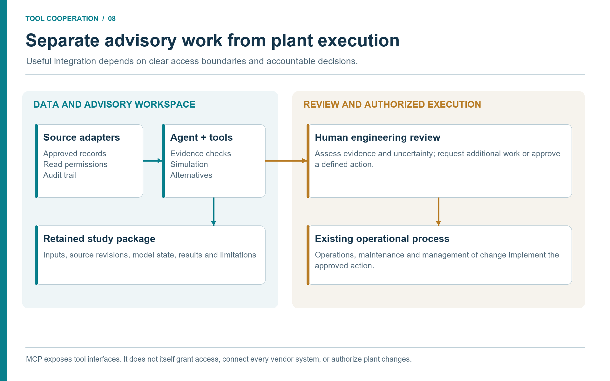
Discussion (Figure 8.1).
The boundary is an operational responsibility, not a property guaranteed by MCP. Give data tools the permissions required for their task and make the review decision visible. An approved recommendation then enters the existing maintenance, operations or change-management process with its supporting evidence.
8.14 Measuring Value
Agentic engineering should be measured by engineering value, not novelty. Useful metrics include:
- time from question to reviewed screening result;
- number of scenarios evaluated per study;
- reduction in manual data gathering;
- number of reusable skills or workflows created;
- validation pass rate and warning trends;
- number of studies escalated appropriately;
- avoided rework from stale or missing data;
- production, energy, emissions, or maintenance value identified.
Some value is qualitative: better traceability, clearer assumptions, and more consistent reports. These matter because engineering organizations often lose time when assumptions are unclear and evidence is scattered.
Testing the handoffs, not just the calculator
A known-result test can establish that a calculation still behaves as expected. An integration test must also establish that the right record reached it. Build representative cases with an outdated drawing, a mismatched equipment identifier, a bad-quality historian interval, an ambiguous pressure basis, a changed laboratory sample, and an unavailable connector. The expected outcome may be a blocked conclusion with a precise data request, not a numerical answer.
For accepted cases, retain the input/output artifact hashes, source revisions, tool and model versions, checks performed, and reviewer decision. A review covers that particular scenario and evidence set. Replacing a source or changing a model input invalidates dependent results until they are rerun and reviewed. Measure avoided rework and time to a reviewed decision across the whole chain; counting tool calls or generated reports alone does not measure engineering value.
8.15 Summary
Governance and adoption are one subject. The same controls that make agentic workflows safe also make them scalable: validation, provenance, artifacts, access control, change management, training, and review gates. MCP provides the structured interface. NeqSim provides the physics. Agents and skills provide workflow intelligence. Industrial value appears when these pieces are adopted as a maintained engineering capability rather than a set of isolated demonstrations.
Key points from this chapter:
- Quality requirements should be built into MCP tools and agent workflows.
- Validation includes input, numerical, engineering, benchmark, and human review layers.
- Data integrations must follow existing access-control and cybersecurity rules.
- Skills and agents should be versioned, reviewed, and owned like engineering methods.
- Adoption should proceed through bounded pilots, governed data integration, modular models, advisory workflows, and enterprise scaling.
Exercises
- Quality checklist: Build a minimum quality checklist for an MCP flash calculation used in a report.
- Pilot design: Choose one pilot workflow and define value, data sources, validation, and review gates.
- Capability maturity: Rate a current team against the maturity stack and identify the next improvement.
This chapter uses references from the master bibliography.
Part IV: Worked Patterns and Practical Playbooks
Worked Pattern: From Field Model to Recommendation
Learning Objectives
After reading this chapter, the reader will be able to:
- Follow a complete agentic workflow from field-level question to equipment and safety follow-up.
- See how NeqSim MCP, modular models, controlled-document retrieval, historian data, and Maintenance context fit together.
- Distinguish evidence, simulation, interpretation, and recommendation in a worked pattern.
- Reuse the pattern for similar studies without copying asset-specific details.
Beyond the online book: The online book provides fifteen standalone worked examples and forty case study summaries. This chapter combines those elements into a single end-to-end industrial pattern: from field-level question through modular model, equipment detail threads, flow assurance, safety screening, root cause analysis, dynamic simulation, and an integrated recommendation — showing how the pieces fit together in a real study.
9.1 Scenario and Question
This chapter uses a fictional but realistic field-development and operations pattern. The example avoids private asset names, equipment tags, and proprietary data. The goal is to show the workflow shape, not to document a real facility.
The reference facility processes gas condensate from an offshore production system. This is one teaching case in a broader oil and gas workflow; Section 9.16 adapts the same tool chain to onshore gas processing and pipeline or terminal operations. A satellite reservoir is being considered for tieback to the existing host. The study team wants to know whether the host can process an additional production case during the first two years of tieback operation without major modification. The early question is deliberately broad:
Screen whether the existing host can process an additional gas-condensate
tieback case. Use a modular NeqSim field model, approved document evidence,
recent operating data where relevant, and agentic equipment and safety follow-up.
Return bottlenecks, study limits, and recommended next engineering work.
This is not a design approval. It is a structured screening study. The expected output is a ranked list of constraints and a recommendation about which detailed studies should be performed next.
Case status. No plant databases were queried and no NeqSim study was executed for this chapter's numerical examples. All stated case values are fictitious teaching inputs or assumed outputs. The case registry below keeps the scenarios separate; a real study would add source revisions, uncertainty ranges, model states, and run identifiers.
| Scenario ID | Teaching role | Relationship |
|---|---|---|
HOST_BASE |
Existing host at a defined steady operating window | Reference for the throughput screen. |
TIEBACK_STEADY |
Added wellstream in steady operation | Compared only with HOST_BASE in Section 9.5. |
COLD_RESTART |
Time-dependent restart and inhibitor questions | Requires its own initial inventory, thermal state, and event sequence. |
WEEKLY_REVIEW |
Later operating snapshot and performance arithmetic | Separate from the host design screen; Section 9.13. |
VIBRATION_EVENT |
Post-tieback diagnostic investigation | Uses an event window and mechanical evidence, not the steady-state screen alone. |
9.2 Task Classification
The first agent action is classification. The task is not a single flash calculation. It spans process simulation, flow assurance, equipment capacity, safety screening, and operational data. A router or study lead can divide the work into packages:
| Package | Agent focus | Main outputs |
|---|---|---|
| Scope and evidence | Capability scout and document reader | Task specification and source manifest. |
| Field model | Process simulation agent | Modular ProcessModel with base and tieback scenarios. |
| Pipeline and arrival | Flow assurance agent | Pressure drop, temperature, hydrate margin. |
| Host equipment | Mechanical/equipment agent | Separator, compressor, heat exchanger, valve constraints. |
| Safety | Safety and depressuring agent | Relief/blowdown/barrier screening needs. |
| Reporting | PaperLab/reporting agent | Results, assumptions, risks, and next steps. |
The study lead approves this split before data retrieval begins. This approval is useful because it prevents an agent from pursuing irrelevant detail too soon.
9.3 Evidence Plan and Tool Handoffs
The agent first discovers what is actually available: a controlled-document reader, historian or analytics interface, laboratory and production-data access, maintenance/MOC reader, NeqSim MCP, and reporting tools. Each is a separate capability. A server that can run a flash calculation does not thereby provide a connection to the company's data estate. Authorized exports can fill an unavailable connector role, with export time and restrictions recorded. [11, 4]
The following teaching sequence shows how the tools cooperate. Each row creates an artifact consumed by a later row. The artifact names are proposed study files, not claimed native API fields.
| Source → retrieval tool | Retrieved record and validation | Handoff and next owner |
|---|---|---|
| Equipment register and engineering repository → document search/reader | Approved PFD/P&ID revision, equipment IDs and topology; process engineer checks configuration and boundaries | topology_register → model builder. |
| Vendor document repository → table/curve reader | Compressor map, driver rating and separator internals; equipment specialist checks revision, units and map basis | equipment_limits → capacity and safety threads. |
| Historian → time-series reader and quality notebook | Timestamped operating window, quality flags and aggregation; data owner checks instrument status and time alignment | operating_inputs plus withheld benchmark_measurements → base-case comparison. |
| Laboratory system → sample/result reader | Composition, sample point/time, wet/dry basis and method; PVT reviewer checks representativeness and component mapping | fluid_definition → NeqSim thermodynamic model. |
| Production accounting → well-test/allocation reader | Well tests, rates, reporting period and reference conditions; production engineer reconciles boundaries and inventory effects | production_basis → supply scenarios and independent balance check. |
| Maintenance, inspection and MOC systems → context reader | Work-order timeline, restrictions and configuration changes; equipment/operations owner confirms status | action_constraints → interpretation and recommendation, not automatic model tuning. |
| Standards library and approved design basis → requirements reader | Applicable edition, jurisdiction and acceptance criteria; discipline owner confirms applicability | criteria_register → comparisons and review gates. |
| Reviewed inputs and model registry → NeqSim MCP | Versioned model with EOS, mixing rule, units and accepted inputs; process engineer checks base-case and sensitivity validity | scenario_results → equipment, flow-assurance and safety reviews. |
| Reviewed results → PaperLab/reporting tool | Numerical outputs, warnings, evidence links and reviewer decisions; study lead checks recommendation scope | Report and work record → decision owner. |
One possible implementation uses OpenText Content Management for Engineering for controlled documents, AVEVA PI System for historian records, SampleManager LIMS for laboratory results, and SAP asset management or IBM Maximo for maintenance context. These are public examples of the source roles, not a claim that this book supplies a ready-made connector between them. An approved API, MCP adapter, or export must implement each handoff in the chosen organization. [18, 7, 20, 9, 10]
The source manifest is the join between these tools. A field in fluid_definition points to a laboratory record; a comparison limit points to a document page and revision; a result points to the exact model state and run. When a source cannot be retrieved, the dependent claim becomes an explicit data gap. An absent compressor map blocks a map-limit conclusion. A bad historian window blocks plant validation, while a separately authorized design-case screen may continue with its own basis. The agent never labels a missing record as retrieved or a hypothetical result as validated.
Follow one record through the chain
Consider the driver rating used in the compressor thread. Document search finds the approved vendor datasheet using the equipment-register identity. The reader extracts the rating, unit, applicable operating conditions, and page reference. The equipment specialist resolves any ambiguity between electrical input, shaft output, and available site rating. The accepted value enters the criteria register. NeqSim returns required shaft power for the matching scenario; the comparison step evaluates the same power basis. Maintenance restrictions or a pending driver modification are added as action constraints. The report states the resulting constraint only after the equipment reviewer accepts the match.
This is tool cooperation: retrieval establishes the record, extraction makes it usable, review establishes its meaning, simulation supplies the demand, comparison identifies a constraint, and reporting preserves the decision trail.
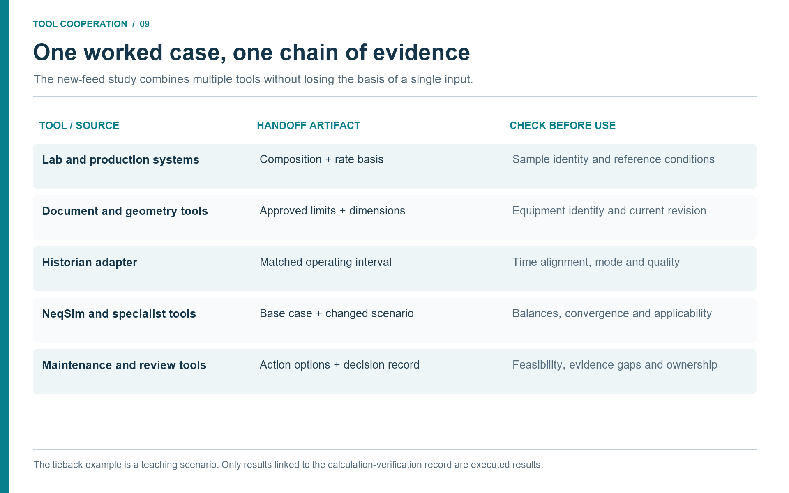
Discussion (Figure 9.1).
This chain makes a calculation auditable even when several applications contribute to it. If the laboratory composition changes, the affected model inputs and scenarios can be identified. If a document revision changes an equipment limit, the review can focus on the conclusions that used that limit.
9.4 Modular Field Model
The process-simulation agent builds a modular model with four process areas:
- Subsea and pipeline: wellstream source, pipeline pressure drop, arrival temperature.
- Inlet and separation: inlet cooling, slug catcher or separator, HP/LP separation.
- Compression and export: scrubbers, compressors, coolers, dehydration, export pressure.
- Utilities and safety interfaces: fuel gas, power demand, relief-load screening interfaces.
The proposed model starts with a base host case. In a real study it must be compared against recent operating data. Separate imposed boundary conditions from independent outputs: a pressure copied from the historian is not a successful prediction of that pressure. Suitable withheld comparisons may include discharge temperature, shaft power, liquid rates, and reconciled fuel use, subject to measurement quality and model scope. The tieback case then adds an incremental wellstream and reruns the field model.
The important artifact is not only the model. It is the scenario state. The state records the base case, the tieback case, changed inputs, source manifest, and acceptance criteria. This state lets later equipment and safety agents refer to the same scenario without rebuilding context from prose.
9.5 Illustrative Field-Level Results
The following numbers are illustrative screening values for the pattern. A real study would replace them with NeqSim MCP or notebook outputs and source-backed input data.
| Result | Base case | Tieback case | Screening interpretation |
|---|---|---|---|
| Export gas rate | 100% reference | 116% reference | Production increase is material. |
| Export compressor power | 82% of driver rating | 97% of driver rating | Driver margin becomes tight. |
| HP separator gas load | 76% of screening limit | 91% of screening limit | Capacity likely acceptable but internals need review. |
| Export hydrate margin | 8 K | 3 K | Flow assurance study required for cold cases. |
| Fuel gas use | 100% reference | 121% reference | Emissions and power impact need evaluation. |
| Flare relief screening basis | Base design case | Potential increase | Formal relief check required. |
Within these assumed teaching outputs, the field-level screen identifies two likely constraints: export compression and hydrate margin. It also identifies two follow-up areas: separator internals and relief/blowdown. The agent does not conclude that the host can accept the tieback. It concludes that the case is worth further study if compressor and hydrate constraints can be addressed.
9.6 Compressor Detail Thread
The compressor thread starts from the field model. The tieback case gives suction flow, suction pressure, suction temperature, gas composition, discharge pressure, and required power. The equipment agent then retrieves compressor evidence.
The source manifest includes the compressor datasheet, performance map, anti-surge control description, driver rating, and recent operating tags. The plant-data agent selects a recent steady-state window to compare actual and modelled performance. Maintenance context indicates whether recent maintenance work may affect efficiency or availability.
The compressor thread asks four questions:
| Question | Calculation or evidence | Decision impact |
|---|---|---|
| Is required head inside map? | Map comparison with NeqSim gas properties | Determines whether operating point is feasible. |
| Is driver power sufficient? | Required power versus driver rating | Identifies production cap or driver modification need. |
| Is surge margin acceptable? | Flow/head point relative to surge line | Determines anti-surge and recycle implications. |
| Is observed efficiency degraded? | Model versus historian trend and Maintenance context | Determines whether cleaning/maintenance could recover margin. |
The illustrative result is that driver margin is the tightest compressor limit, while surge margin remains acceptable for the base tieback case. The workflow therefore returns a facility constraint: export flow must be limited unless driver margin is recovered or compression is modified. It also returns a next action: confirm compressor map and driver limits with a compressor specialist.
9.7 Flow Assurance Thread
The flow assurance thread evaluates arrival pressure, arrival temperature, and hydrate margin. The agent retrieves pipeline length, elevation, insulation or heat-transfer assumptions, seabed temperature range, inhibitor strategy, and historical operating data. The NeqSim model calculates phase behaviour and hydrate temperature along relevant operating points.
The teaching scenario assumes that a normal warm case has margin, while a cold low-flow restart case may approach the hydrate limit. No executed transient has established that result in this chapter. This changes the study conclusion. The tieback may be feasible at steady high flow, but startup, turndown, and shutdown conditions require a more detailed transient or operating procedure study. A production-increase screen that only looked at steady-state export would have missed the controlling case.
9.8 Separator and Liquid Handling Thread
The separator thread uses the tieback fluid and field-model rates. Approved equipment datasheets provide separator diameter, length, normal liquid level, high-high level, inlet device, demister type, and nozzle sizes. NeqSim provides densities, viscosities, surface tension, gas and liquid rates, and phase split.
The screening checks gas load factor, liquid retention time, inlet momentum, and demister velocity. The illustrative result is that average capacity remains inside screening limits, but slug or transient liquid handling is not addressed. The recommendation is therefore to perform a dynamic liquid-handling check if the tieback profile has high slugging uncertainty.
This thread shows why field and equipment levels need each other. The field model identifies the increased liquid rate. The equipment study asks whether the actual vessel and internals can handle it. The safety thread then asks whether larger liquid inventory affects relief or blowdown assumptions.
9.9 Safety Thread
The safety thread does not redo the HAZOP. It prepares a screening package. It uses the field and equipment results to identify which safety studies may need update.
| Safety topic | Screening trigger | Recommended follow-up |
|---|---|---|
| Relief load | Higher gas and liquid rates through separators and compressors | Formal relief review for affected scenarios. |
| Blowdown inventory | Changed operating inventory and pressure in process sections | Blowdown and MDMT screening. |
| Hydrate during shutdown | Cold low-flow or restart cases near hydrate limit | Flow assurance and operating-procedure review. |
| Compressor protection | Operation closer to driver or map limits | Anti-surge and trip review. |
| Barrier documentation | Changed operating envelope | HAZOP node package update. |
The safety output is an escalation map. It states that the tieback screening is not sufficient for management of change. It identifies the formal studies that would be needed before any operating limit or design basis changes.
9.10 Integrated Recommendation
The final recommendation should be short, evidence-based, and honest about uncertainty:
The screening indicates that the host may be able to process the illustrative
tieback steady-state case, but export compressor driver margin and cold-case
hydrate margin are controlling constraints. Separator average capacity appears
less limiting than compression, but liquid-handling dynamics and internals need
review. Safety follow-up is required for relief, blowdown/MDMT, compressor
protection, and HAZOP node updates before any operating envelope change.
The recommendation also lists immediate next work:
- validate compressor map and driver rating against approved vendor documents;
- run cold-case flow assurance with uncertainty in ambient and inhibitor assumptions;
- perform separator internals and slug-handling review;
- screen relief and blowdown impacts using approved safety methods;
- update economics and emissions if technical constraints can be managed.
9.11 Remarks on the Illustrative Results
All results in this chapter are illustrative. They use representative but fictitious data: fluid compositions, equipment sizes, tag names, and operating conditions are invented for educational purposes. No real field or operator is named. The value of the worked case is the workflow, not the numbers. The same pattern --- evidence plan, modular model, threaded studies, integrated recommendation --- applies to any real field study.
9.12 Root Cause Analysis Thread: Compressor Vibration
Suppose the tieback has been in operation for six months. The export compressor begins reporting elevated vibration. Operations raises the question: What is causing the vibration increase, and is it related to the changed operating conditions?
This is a root cause analysis (RCA) problem. It cannot be solved by simulation alone, because the cause may be mechanical, process-related, or both. It cannot be solved by documents alone, because the documents describe design conditions, not the current fault. It cannot be solved by historian data alone, because correlation does not identify mechanism. The value of agentic integration is that it combines all three.
Agent workflow
- Resolve the event. The operations log identifies the compressor and event period. The equipment register links the historian tags, condition monitoring channels, vendor records, and model object. A mismatch returns to the equipment owner before evidence is combined.
- Retrieve and align. The document reader returns the approved compressor map and limits; the historian returns process conditions and anti-surge valve position; the condition-monitoring system returns the relevant vibration evidence. The laboratory record establishes composition. A data-quality step separates the pre-event baseline from the event and preserves quality flags, time bases, and rejected periods.
- Add maintenance context. The maintenance reader returns relevant work orders and inspection findings, and the MOC reader returns configuration changes. These build an event timeline; temporal coincidence alone does not establish a cause.
- Run supported diagnostic analysis. The agent uses the discovered
runRootCauseAnalysisschema to pass the model, symptom, accepted historian data, and supported design-limit context. The returnedRootCauseReportis linked to the source manifest. A diagnostic label in software is not proof that every required evidence channel has been analysed. - Review coverage. Candidate priors must identify their actual reliability source and population. OREDA is an example of a governed reliability-data source; its availability or licensing is separate from NeqSim access. Supported process perturbations may test performance hypotheses, while unsupported mechanical mechanisms must remain unverified. Normalized ranking scores are not calibrated probabilities of the true fault. [27, 2]
- Send the evidence to the specialist. The rotating-equipment engineer reviews competing hypotheses and chooses the next discriminating check. The operational owner controls any action.
| Candidate hypothesis | Evidence that could discriminate it | Required specialist check |
|---|---|---|
| Operation close to surge | Corrected map position, synchronized process tags, anti-surge controller state | Confirm map applicability and dynamic control response. |
| Fouling or performance degradation | Composition-corrected efficiency trend, discharge conditions, inspection history | Compare supported model perturbations with independent measurements. |
| Rotor imbalance or misalignment | Vibration spectrum, phase information, maintenance/alignment records | Mechanical condition assessment; a thermodynamic process model does not resolve rotor dynamics. |
| Bearing degradation | Vibration features, lubricant and bearing-temperature evidence, inspection | Check sensor validity and mechanical evidence; stable temperature alone does not rule it out. |
No numeric ranking is asserted here: this teaching case has no retrieved event record or executed diagnostic run. The useful output is the artifact chain and the next evidence that would distinguish the hypotheses. The maintained SimulationVerifier records unsupported, unknown, or failed verification separately from evaluated cases; preserve those states in the report rather than converting them into a successful diagnosis. [2]
9.13 Operational Evidence Package: Weekly Compressor Review
Beyond event-driven RCA, the same integration pattern supports routine operational monitoring. Suppose the facility runs a weekly compressor performance review. The agent builds an OperationalEvidencePackage that combines the tag map, field data, and process model into a single reviewable artifact.
Tag map and independent checks
Keep private historian tag names in the deployment's binding file. The public teaching example uses logical names and model roles. Actual automation addresses must be discovered from the constructed model; a plausible-looking address is not enough to establish that it is writable or has the expected unit. [2]
| Logical quantity | Model role | Unit or basis | Use |
|---|---|---|---|
| Suction pressure | Feed-stream boundary | bar absolute | Input. |
| Suction temperature | Feed-stream boundary | K | Input. |
| Discharge pressure | Specified compressor outlet pressure | bar absolute | Input for this case. |
| Discharge temperature | Calculated outlet-stream temperature | K | Independent benchmark. |
| Gas flow | Feed-stream mass flow | kg/h | Input. |
| Speed | Compressor speed where the model uses a map | rpm | Input or diagnostic context, declared explicitly. |
| Shaft power | Calculated compressor power | kW, shaft basis | Independent benchmark after instrument basis is checked. |
| Anti-surge valve position | Recycle-valve state or context | % | Input only when valve/control representation is validated. |
Weekly workflow
The historian reader selects an accepted window, and the laboratory reader supplies its matching fluid basis. The tag map applies only the designated inputs. The model runs, and withheld measurements test its predictive output. OperationalEvidencePackage compares tags explicitly marked as BENCHMARK; input tags do not provide independent validation. Its scenario builder uses copies of the base process, whereas direct OperationalScenarioRunner calls require the caller to supply an independent process state. [2]
The process engineer chooses tolerances based on measurement uncertainty, engineering significance, and model use. Relative differences can mislead for near-zero quantities or Celsius temperatures. Prefer an absolute temperature error in K and a defined power basis. Do not accept an empty benchmark set as a validated model. Check the number of comparisons, missing values, and the independence of every benchmark.
Two hypothetical scenarios continue the example: increasing throughput by 10% and reducing suction pressure by 3 bar. These changes define study inputs, not established feasible operating actions.
Illustrative arithmetic, not simulation validation
The table below checks the arithmetic of fictitious values previously used in this example. It does not validate NeqSim predictions or actual plant data.
| Comparison | Assumed values | Arithmetic result | Meaning |
|---|---|---|---|
| Shaft-power benchmark | Model 8400 kW; measurement 8750 kW | Absolute difference 350 kW; relative error 4.0% of measurement | Requires matched shaft/electrical basis and an agreed tolerance. |
| Discharge-temperature benchmark | Model 142.1 °C; measurement 148.5 °C | Model is lower by 6.4 K | Use an absolute temperature tolerance; a Celsius percentage has no invariant physical basis. |
| Throughput scenario power | Before 8400 kW; after 9520 kW | Increase 1120 kW, or 13.3% of baseline | Does not establish driver margin without an accepted available rating. |
| Lower-suction-pressure scenario power | Before 8400 kW; after 9100 kW | Increase 700 kW, or 8.3% of baseline | Does not establish surge margin without a suitable map and operating point. |
For relative power error, divide the absolute model–measurement difference by the measurement. For a scenario percentage change, divide the change by the baseline. These are different comparisons and should remain differently labelled. No blanket PASS or bottleneck verdict follows from this table.
The reviewed weekly package should contain the actual benchmarkComparison, baseCapacity, scenarioStudies, and qualityGates objects returned by OperationalEvidencePackage, together with source and review metadata stored by the workflow. Retain the raw tool output instead of replacing it with a handwritten imitation of the API schema. [2]
9.14 Dynamic Simulation Thread: Startup and Depressurization
The steady-state threads above identified hydrate margin during cold restart as a potential constraint. A steady-state model cannot evaluate this risk fully because the controlling case is time-dependent: the pipeline starts at ambient temperature, warms gradually as production resumes, and may pass through the hydrate region during the ramp-up window.
This is where dynamic simulation enters the worked case pattern. The agent extends the field model into a transient study by following the workflow described in Section 5.6 and Section 7.15:
- Establish a physical initial state. Use an accepted operating state followed by a validated shutdown/cooldown calculation, or specify a reviewed static inventory and temperature distribution. A converged flowing case does not define cold, blocked-in inventory, and a zero-flow steady-state solve is not a substitute for that initialization.
- Define the startup sequence. The scenario specifies: choke valve opens gradually over 30 minutes, separator level controller active, compressor starts when suction pressure reaches setpoint, inhibitor injection active from time zero.
- Run the transient. A reviewed workflow with the required dynamic equipment physics and event handling steps through time, recording pipeline temperature profile, separator level, compressor suction conditions, and hydrate margin at each step.
- Evaluate the response. The agent checks whether temperature anywhere in the pipeline drops below the hydrate formation temperature at the local pressure during the ramp-up window. It also checks whether separator level exceeds high-alarm during the initial liquid surge.
- Report. The output includes a time-domain temperature-vs-hydrate plot, the minimum margin and when it occurs, and a pass/fail assessment.
No executed transient result is available in this chapter. The required output is the minimum hydrate margin, its location and time, uncertainty in the initial state and inhibitor distribution, and comparison with the approved criterion. A calculated crossing would trigger specialist investigation; it would not by itself validate a preheating or inhibitor strategy.
Similarly, a depressurization study for the tieback scenario uses dynamic simulation to predict minimum metal temperature during emergency blowdown. A thermal model with explicit wall properties and heat transfer must track fluid and metal temperatures separately. The study compares metal temperature with the applicable material limit and records the time to reach the specified depressurization target. Fire relief sizing is a related but distinct scenario and must retain its own basis.
These dynamic threads change the overall study conclusion. The assumed steady-state outputs illustrate a possible capacity question; they do not demonstrate feasibility. A completed dynamic study could add constraints on startup, shutdown, and depressurization, or establish that the chosen sequence needs revision. This is a common pattern in real field studies: the facility has static capacity, but the dynamic operating envelope imposes additional constraints.
Production data as dynamic boundary conditions
The dynamic simulation becomes more valuable when it uses production data as boundary conditions. The latest well test provides the actual wellhead pressure, GOR, and water cut. If the reservoir has matured and wellhead pressure is lower than the design case, the startup transient may take longer and the minimum hydrate margin may be smaller. Using design-case well data can misrepresent the available margin; the direction and size of the error require an appropriate model and comparison.
The pattern is: read the latest well test from the production database, update the wellstream source in the dynamic model, and re-run the startup transient. Compare the result against the design-case transient. If the actual-well-data case has tighter margins, flag it as a changed operating condition that may require a procedure update.
9.15 What the Agent Did and Did Not Do
The proposed agentic workflow would:
- structure the task;
- retrieve and organize evidence;
- build or update modular NeqSim scenarios;
- run screening calculations;
- connect equipment and safety follow-up;
- produce traceable artifacts.
Its remit excludes:
- approve the tieback;
- replace discipline reviews;
- certify relief capacity;
- validate vendor data without specialist review;
- change operating procedures;
- bypass document or historian access controls.
This distinction is the heart of industrial agentic engineering. The agent makes the study faster and more complete. The organization remains responsible for decisions.
9.16 Reuse Pattern
The same worked pattern can be reused for brownfield debottlenecking, production optimization, emissions reduction, and maintenance planning. The details change, but the structure remains:
- classify the decision and study level;
- define evidence needs and approved sources;
- build or select a modular process model;
- run field-level scenarios;
- launch equipment detail threads for bottlenecks;
- launch safety and standards threads for affected barriers;
- integrate results into a ranked recommendation;
- store artifacts and reusable lessons.
The strongest workflows are those that make the next study easier. A completed tieback screen should leave behind improved tag maps, document retrieval queries, model states, validation cases, and checklist updates.
Portable variant A: onshore gas processing or LNG feed acceptance
Replace the satellite tieback question with a proposed feed change. The production or supply database provides the feed period; the laboratory system provides the composition and sample basis; the document repository supplies pretreatment, dehydration, refrigeration, and receiving-unit limits. Historian and analytics tools establish a comparable operating window. The agent passes reviewed feed inputs to the relevant NeqSim modules and obtains specialist-model results for units outside the validated model scope. The comparison step checks product specifications and equipment limits, then the review workflow resolves safety and MOC implications. Whole-LNG-train capacity cannot be inferred from a validated feed-gas calculation alone.
Portable variant B: pipeline delivery and terminal interface
Replace the reservoir forecast with a nomination and transfer schedule. A GIS/route database supplies the geometry; metering and historian systems supply flow, pressure, and temperature; laboratory records establish composition or product assay; a terminal inventory system defines receiving capacity. The agent hands a validated route and boundary-condition package to hydraulic and thermal models, then sends delivery conditions and uncertainties to the receiving-facility reviewer. A pump or valve event invokes a separate transient study. Maintenance restrictions and approved transfer procedures constrain the recommendation. Downstream process or reaction calculations require their own validated tools and cannot be assumed from pipeline performance.
Both variants retain the source → retrieved record → validation → model or context → reviewed output sequence. They change the domain evidence and model coverage, not the need for checked handoffs.
9.17 MCP Transcript Sketch
A real MCP transcript contains JSON-RPC messages and tool outputs. A book does not need to reproduce the entire transcript, but a study should preserve enough of the tool path to be auditable. A simplified transcript sketch for the worked case might look like this:
User: Screen the defined tieback scenario using accepted evidence.
Agent: Discover available simulation, document, data, and reporting tools.
Discovery -> actual tool names, schemas, access restrictions, versions.
Document reader -> approved topology, equipment limits, source references.
Historian/analytics reader -> accepted operating window and quality report.
Laboratory/production reader -> fluid basis and scenario boundary conditions.
Maintenance/MOC reader -> event timeline and action constraints.
Validation -> accepted model inputs and separate benchmark measurements.
NeqSim tools -> base/scenario outputs, warnings, convergence and model metadata.
Comparison -> benchmark deviations, constraints and unsupported conclusions.
Reviewer -> accepted findings, unresolved questions and permitted next work.
PaperLab -> report, source manifest and reproducible work record.
This is a conceptual transcript. Source-reader labels are roles, not claims that a native tool with that name exists. Use the schema returned by discovery for each actual call. If a connector is absent, an authorized export takes its place and the transcript records that route.
The transcript shows three healthy behaviours. First, the agent discovers tools instead of assuming them. Second, it stops for missing data rather than inventing critical inputs. Third, it uses structured outputs for comparison and reporting.
For a formal study, the full transcript may be too verbose for the report, but the source manifest and results object should preserve the essential parts: tool name, input hash or file, output file, warnings, and version. This lets a reviewer reproduce the path without reading a long chat history.
9.18 Results Object Sketch
A structured results object is the handoff between calculation and reporting. The exact schema can vary, but the worked case needs fields like these:
{
"case_id": "TIEBACK_STEADY",
"study_level": "screening",
"evidence_status": "fictional teaching example; no simulation executed",
"key_results": {},
"validation": {
"base_case_compared_to_historian": false,
"actual_source_manifest_available": false,
"formal_design_approval": false
},
"required_artifacts": [
"accepted input package and source manifest",
"model revision and raw calculation output",
"independent benchmark comparison",
"discipline review record"
],
"recommended_next_work": [
"Retrieve and review compressor map and driver rating",
"Execute cold-case flow assurance and transient studies",
"Review relief, blowdown and affected HAZOP nodes"
]
}
The object declares the teaching status and keeps uncomputed results empty. A real run replaces these fields with source-backed values and actual checks. The report generator can turn key_results into tables, validation into a review summary, and warnings into executive-summary caveats. Other agents can read the same object and continue the workflow. A safety agent does not need to parse a paragraph to learn that relief and blowdown require follow-up.
9.19 Risk Register Sketch
Even a screening study benefits from a simple risk register. It helps the team see which uncertainties matter most.
| Risk | Category | Likelihood | Consequence | Mitigation |
|---|---|---|---|---|
| Compressor map unavailable or outdated | Technical | Possible | Major | Retrieve latest vendor package and specialist review. |
| Cold-case hydrate margin below criterion | Flow assurance | Possible | Major | Run detailed transient and inhibitor study. |
| Separator slug handling underestimated | Process | Possible | Moderate | Review slug profile and dynamic liquid capacity. |
| Relief loads increase beyond installed capacity | Safety | Uncertain | Major | Formal relief review before operating change. |
| Incremental emissions reduce value of tieback | Environmental/economic | Possible | Moderate | Include fuel and CO2 intensity in economic screen. |
| Maintenance window incompatible with required modification | Schedule | Possible | Moderate | Link recommendations to maintenance and shutdown planning. |
The risk register does not need false precision. It needs to connect technical uncertainty to next work. In this example, the top risks align with the recommended follow-up studies, which is exactly what a screening risk register should do.
9.20 Summary
This chapter has shown a complete pattern from field-level question to detailed equipment and safety follow-up. The example is fictional, but the workflow is intended to be directly reusable. The central message is that agentic engineering does not replace the engineering process. It connects data, models, tools, and review in a way that makes the process faster and more traceable.
Key additions in this chapter:
- Root cause analysis (Section 9.12) shows how declared reliability evidence, process and condition-monitoring data, design limits, and supported NeqSim perturbations contribute to a specialist-reviewed hypothesis package.
- Operational evidence packages (Section 9.13) demonstrate the weekly monitoring pattern where
OperationalTagMapandOperationalEvidencePackageautomate the data-to-model binding, benchmark comparison, and scenario analysis. - Dynamic simulation (Section 9.14) adds time-dependent analysis for startup and depressurization, showing how production data changes the dynamic boundary conditions and why steady-state screening alone is insufficient.
- Together, these threads illustrate the defining pattern of agentic engineering: no single data source or tool could produce the result; value comes from the structured combination of documents, field data, production databases, and both steady-state and dynamic simulation.
Exercises
- Scenario split: Apply the same pattern to a produced-water debottlenecking study and define the process areas.
- Evidence gap: Identify what should happen if the compressor vendor map cannot be retrieved.
- Safety escalation: Write the escalation statement for a tieback screen where hydrate margin is below the operating criterion.
- Root cause analysis: A separator shows increasing liquid carryover to the gas outlet six weeks after a production increase. Design the RCA workflow: list the symptom type, at least four candidate hypotheses, the historian tags that would distinguish them, and the controlled engineering documents required.
- Evidence package design: Define the tag bindings, benchmark tolerance, and two operational scenarios for a weekly heat-exchanger performance review using
OperationalEvidencePackage.
This chapter uses references from the master bibliography.
Playbooks, Checklists, and Discipline Patterns
Learning Objectives
After reading this chapter, the reader will be able to:
- Reuse practical prompts, checklists, and report patterns for MCP-backed NeqSim studies.
- Select evidence sources, model boundaries, and review gates for common study types.
- Translate the common workflow into discipline-specific playbooks.
- Maintain a local library of skills and workflows while protecting confidential data.
Beyond the online book: The online book explains the task-solving workflow and results schema. This final chapter turns the book into practice: reusable prompts, checklists, study templates, discipline patterns, and skill-maintenance rules.
10.1 Why Playbooks Matter
Agentic engineering becomes valuable when good practice is repeatable. A single successful chat session is useful, but it is fragile. A playbook is stronger. It defines the prompt pattern, source requirements, model steps, validation gates, outputs, and review expectations.
Playbooks should be short enough to use and precise enough to govern. They prevent common failure modes: missing source data, wrong units, unsupported assumptions, unreviewed safety claims, overconfident recommendations, and lost artifacts.
The playbooks in this chapter are templates. Teams should adapt them to local requirements, access controls, discipline standards, and professional ownership.
10.2 MCP and Agent Setup Checklist
Use this checklist before asking an LLM to call NeqSim through MCP.
| Step | Check |
|---|---|
| Docker or approved runtime available | A simple container test or approved local equivalent works. |
| Image selected | NeqSim MCP image tag or digest is recorded. |
| Client configured | .vscode/mcp.json or equivalent client config points to the server. |
| Agent and skill pack installed | Required .agent.md, SKILL.md, and instruction files are available to the user. |
| Tool discovery works | tools/list returns the expected NeqSim tools. |
| Simple public test works | A methane flash or gas-quality calculation returns structured output. |
| Logging understood | Tool-call logs are stored in an approved location. |
| Data policy clear | Users know what data may be pasted, mounted, retrieved, or exported. |
| Profile appropriate | Desktop, study-team, advisory, or enterprise profile is selected. |
Do not start with confidential facility data. Start with a public example, prove the tool path, then move to governed internal workflows.
10.3 Prompt Patterns
Good prompts define the role, tool boundary, evidence expectation, and output.
Tool-backed calculation
Use NeqSim MCP tools for the calculation. Do not estimate the engineering result
from memory. Before calling the tool, state the required inputs and assumptions.
After the tool call, report model, units, convergence status, warnings,
limitations, and whether the result is screening or design-level.
Missing-data stop rule
If a required input is missing, stop and list the missing input, why it matters,
and approved sources where it could be retrieved. Do not invent default values
unless I explicitly ask for a hypothetical example.
Source-aware document extraction
Read the provided technical documents and extract only values relevant to the
study. For every value, return source file, page or sheet, unit, confidence,
and review status. Mark OCR-derived or ambiguous values as needs_review.
Safety boundary
Treat the safety result as a screening. Identify affected HAZOP nodes, relief
cases, blowdown/MDMT concerns, and barriers. Do not state that a safety case is
approved. List required discipline reviews.
These prompts can become skills or command templates. The aim is to make good behaviour the default.
10.4 Source Manifest Checklist
Every standard or comprehensive study should have a source manifest. At minimum, record:
- source identifier;
- source type;
- repository or system;
- title or description;
- revision or timestamp;
- retrieval time;
- access basis;
- extracted values with units;
- confidence and review status;
- limitations or open questions.
For historian windows, also record tag names, units, start and end time, aggregation method, number of points, bad-quality percentage, steady-state criterion, and rejected periods. For enterprise context, record equipment identity, record type, date range, summarized finding, privacy restrictions, and whether the data is evidence, context, or action constraint.
The manifest should be stored with the task, not only described in chat. Classify every extracted field by its use: model input, independent benchmark, acceptance criterion, or contextual constraint. A value used to set an input cannot also count as independent evidence that the model predicts it correctly. Record an artifact path and a field or row identifier so the next tool can follow the evidence without interpreting a chat summary.
10.5 NeqSim Model Setup Checklist
Use this checklist when building or reviewing a model.
| Area | Check |
|---|---|
| Fluid | Composition sums correctly, components exist, EOS is justified. |
| Units | Temperature, pressure, flow, and composition basis are explicit. |
| Mixing rule | Mixing rule is set before flash or process calculations. |
| Initialization | Physical properties are initialized before reading transport properties. |
| Boundaries | Feed, product, utility, and recycle boundaries are documented. |
| Equipment | Equipment names are stable and match tag maps where appropriate. |
| Process areas | Large models are split into named ProcessSystem areas. |
| Automation | Key variables have stable string addresses. |
| Validation | Base case is compared with known values or historian window. |
| State | Model state and scenario changes are stored. |
Many model errors are not deep thermodynamic failures. They are missing mixing rules, unit confusion, stale composition, or untracked scenario changes.
Connector and exchange checklist
Before the model run, complete the handoff between source systems and tools:
| Check | Evidence to retain |
|---|---|
| Capability discovered | Actual callable tool/schema or authorized export route; distinguish read access from write access. |
| Asset identity resolved | Mapping between equipment register, document number, historian tag, sample point, and model object. |
| Time and revision aligned | Effective document revision, sample time, historian window/time zone, and production accounting period. |
| Basis validated | Absolute/gauge pressure, molar/mass composition, wet/dry analysis, standard-volume reference conditions, and units. |
| Independent comparison preserved | Inputs separated from withheld benchmark variables and acceptance criteria. |
| Exchange checked | Extracted record → validated field → model input/output → reviewer; log rejected fields. |
| Failure branch defined | Missing source, stale data, unsupported model or failed calculation routes to a named owner. |
A named platform is an example of a source role. An engineering document repository supplies controlled drawings, and an enterprise maintenance platform supplies work orders. The same playbook works with another repository or an approved file export when the artifact contract is preserved. Installing NeqSim MCP alone does not provide these integrations. [11, 4]
10.6 Study-Type Playbooks
| Study type | Minimum data | NeqSim work | Review trigger |
|---|---|---|---|
| Dew point or gas quality | Composition, pressure, standard | Flash or standard calculation | Close to sales specification. |
| Hydrate margin | Composition, water/inhibitor, P/T envelope | Hydrate and phase calculation | Margin below criterion or data missing. |
| Compressor screening | Gas conditions, map, driver limit | Head, power, and map comparison | Near surge, stonewall, or driver limit. |
| Heat exchanger duty | Flows, temperatures, datasheet | Duty and UA comparison | Large mismatch or cleaning recommendation. |
| Separator capacity | Rates, properties, dimensions, internals | Gas load, retention, and carryover screening | Near capacity or safety impact. |
| Valve and piping operability | Valve data, line data, P/T/flow, phase state | Pressure drop, phase, thermal, and surge screening | Any operating-limit or hardware change. |
| Relief screening | Scenario, fluid, pressure, equipment | Relief properties and load estimate | Any design or operating-limit change. |
| Field development or production scenario | Production, fluid, facilities, economics | Modular process and uncertainty cases | Concept selection or investment decision. |
Each playbook should state whether the output is a quick screening, a standard study, or a formal deliverable.
10.7 Report and Review Pattern
A concise PaperLab-style report can use this structure:
- Executive summary: decision question, answer, confidence, and next action.
- Scope: included boundary, excluded items, study level, and acceptance criteria.
- Sources: source manifest summary and data-quality notes.
- Model: NeqSim model, EOS, process areas, scenarios, and validation basis.
- Results: key tables and figures with units.
- Discussion: physical mechanisms, uncertainty, and operational implications.
- Safety and standards: affected standards, barriers, and escalation needs.
- Recommendation: action, limitations, and required reviews.
- Appendices: detailed source manifest, tag windows, tool calls, and model state.
Before releasing an agent-prepared study, ask whether the decision question is clear, inputs are sourced and unit-checked, NeqSim tools performed the calculation, warnings are visible, uncertainty is proportionate, safety implications are identified, the recommendation matches the study level, and the result can be reproduced from stored artifacts.
10.8 Discipline Pattern
Every discipline playbook should contain the same minimum elements.
| Element | Question the playbook must answer |
|---|---|
| Decision question | What decision or screening is being supported? |
| Evidence sources | Which documents, historian tags, enterprise records, lab data, or standards are approved? |
| Model boundary | Which process area, equipment item, route, or operating envelope is included? |
| Tool boundary | Which MCP tools, notebooks, scripts, or reviewed models are allowed? |
| Validation | What benchmark, datasheet, historian window, or manual calculation checks the result? |
| Uncertainty | Which inputs can change the recommendation? |
| Review gate | Which discipline owner must review before the result is used? |
| Reusable artifact | What prompt, source manifest, model state, report, or checklist is stored? |
This common structure prevents disciplines from building isolated habits. A production question can become a flow assurance question. A valve question can become a relief, noise, or surge question. A chemical-treatment question can become a materials or environmental question.
A reusable sequence: explain a compressor performance change
Use this playbook to turn the architecture into an executable study plan. It is a workflow specification; invoke only tools discovered in the actual setup.
- Scope and discovery. The study lead defines equipment, observation period, decision, and review owner. The agent checks which document, historian, laboratory, maintenance, simulation, and reporting tools are available. Output:
study_plan.mdand a connector inventory. - Retrieve. The document tool returns the approved map and limits; the historian tool returns operating records; the laboratory tool returns the relevant composition; maintenance and MOC readers return the event timeline. Output: immutable source files and a manifest with equipment/time matches.
- Prepare. A data-quality notebook or approved analytics tool normalizes units, rejects bad periods, and separates boundary conditions from benchmark measurements. Output:
validated_inputs.json, rejected-record notes, and a benchmark table. Conflicting evidence returns to the data owner. - Calculate. NeqSim MCP runs the reviewed model for the accepted state and agreed sensitivity cases. Output: calculated properties/performance, warnings, convergence evidence, and scenario states. A failed or out-of-domain run stops the dependent recommendation.
- Compare. The comparison step checks withheld measurements and vendor limits. The specialist evaluates plausible mechanisms, map coverage, and uncertainty. Output: a ranked evidence table; unsupported fault mechanisms remain unverified. Maintenance records constrain available next actions.
- Review and publish the study artifact. The discipline reviewer records acceptance, rejection, or further-work status. PaperLab turns the accepted evidence into a report with figures and an explicit recommendation boundary. The operational owner decides whether a separately controlled action follows.
The integration lesson is the same as in Chapter 9: one tool's output is the next tool's input, and each handoff carries a check. A spreadsheet or analytics application may perform data preparation; a specialist simulator may provide a required model that NeqSim does not cover. Declare that responsibility and validate the exchange rather than pretending the entire workflow is native to one application.
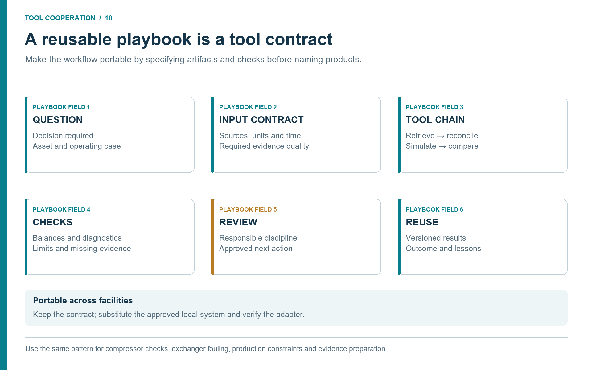
Discussion (Figure 10.1).
The playbook describes responsibilities before products. A site can substitute its approved historian or maintenance system while keeping the same evidence requirements. Check the replacement adapter against the input contract and retain the test case, so reuse improves consistency instead of carrying hidden site assumptions forward.
10.9 Discipline Matrix
| Discipline | Typical question | Data needed | Agent/MCP support | Human review |
|---|---|---|---|---|
| Process engineering | Can the plant increase rate? | Composition, P/T/flow, equipment limits | Process simulation and bottleneck ranking | Process lead. |
| Production engineering | Which operating option gives most value? | Forecasts, well tests, constraints, host model | Production and facility scenario comparison | Production or study lead. |
| Automation/control | Is loop or alarm behavior explainable? | Tags, loop data, alarms, trip history | Trend analysis and dynamic or steady-state comparison | Control engineer. |
| Valves | Is the valve suitable for this scenario? | Valve data, P/T/flow, phase state, actuator context | Valve pressure-drop and choked-flow screening | Valve/control specialist. |
| Piping | Is the line acceptable for the envelope? | Line class, route, P/T/flow, material, insulation | Hydraulic, thermal, and trapped-inventory screening | Piping/materials/HSE. |
| Flow assurance | Is hydrate, wax, slugging, or cooldown risk acceptable? | Route, fluid, water, ambient, inhibitor | Phase and thermal-hydraulic screening | Flow assurance engineer. |
| Chemicals/production chemistry | What chemical strategy is needed? | Water, composition, threat, dosage, injection point | Inhibitor and chemistry evidence package | Chemicals engineer. |
| Materials/integrity | Are material limits or degradation mechanisms affected? | Material, inspection, corrosion data, P/T history | MDMT, corrosion-driver, and erosion screening | Materials or integrity engineer. |
| Environmental/emissions | What is the environmental impact? | Fuel, flare, vent, chemical, power, discharge data | Emissions and energy-intensity estimates | Environmental authority. |
| HSE/technical safety | Are barriers, relief, or major-accident risks affected? | HAZOP, LOPA, C&E, PSV, barrier documents | Safety evidence package and screening calculations | HSE/technical safety authority. |
| Operations/maintenance | What is happening and what should be checked? | Trends, logs, work orders, equipment data | Diagnosis, timeline, and escalation support | Operations or maintenance owner. |
For an onshore gathering facility, emphasize well tests, route geometry, and compression constraints. For gas processing and LNG, include feed assays, pretreatment limits, refrigeration or liquefaction interfaces, and product specifications. For transmission and terminals, use nominations, metering, storage inventories, and transfer constraints. At a downstream interface, include the relevant product assay, utility balance, and receiving-unit limits; do not assume that a validated upstream model covers refinery reactions or whole-site optimization.
A local implementation should adapt names and review gates to the organization. The important point is the route from question to evidence to tool to review.
10.10 Discipline Notes and Red Lines
Process and production. The agent should expose assumptions, scenario boundaries, active constraints, and trade-offs. Production scenarios should keep reservoir assumptions separate from facility calculations and should not hide flow assurance or compressor constraints behind a production target.
Automation and control. The strongest use cases are read-heavy and diagnostic: trend review, loop diagnosis, alarm support, startup/shutdown evidence, and tag mapping. Changes to set points, trips, alarm limits, or control logic remain governed engineering work.
Valves and piping. NeqSim can support pressure drop, phase behaviour, flow regime, thermal profiles, surge screening, and scenario loads. Final pipe class, wall thickness, flange rating, support design, valve trim selection, actuator sizing, noise assessment, and formal code compliance require discipline approval.
Flow assurance and chemicals. Hydrate, wax, asphaltene, corrosion, scale, inhibitor, and separation-chemistry workflows should tie recommendations to water rate, phase behaviour, temperature profile, injection point, chemical availability, environmental classification, and uncertainty. Chemicals are not a simple tuning knob.
Materials and integrity. The agent should retrieve material specifications, line classes, inspection records, corrosion monitoring, wall-thickness measurements, and relevant standards. A wrong material grade, line class, heat treatment, or inspection date can invalidate a screening.
Environmental and emissions. Process models can estimate stream quantities, power, flaring, venting, chemical use, and energy intensity. Formal reporting may require approved factors, allocation logic, measurement rules, and auditable records.
HSE and technical safety. The agent can prepare HAZOP node packages, LOPA/SIL tables, relief-property screens, blowdown/MDMT evidence, barrier packages, and MOC impact summaries. It should not approve a HAZOP, LOPA, SIL, relief design, safety case, or MOC; claim barrier independence without review; credit operator response without criteria; use stale documents for final conclusions; hide missing data behind assumptions; or present screening as design approval.
Operations and maintenance. The agent should say what is known, what is inferred, what should be checked, and what must be escalated. Root-cause outputs should arrive as evidence packages with ranked hypotheses, not as final diagnoses.
10.11 Building and Maintaining Skills
Discipline playbooks become more powerful when turned into maintained skills. A skill should define when it is triggered, what input is required, what sources are approved, what tools are allowed, how results are validated, what red lines apply, and who owns the review.
Start with a small number of high-value skills:
- process debottlenecking;
- production backpressure sensitivity;
- flow assurance hydrate margin;
- valve and piping operability;
- chemicals and corrosion evidence;
- emissions and energy-intensity;
- technical safety screening;
- operations troubleshooting.
When a task requires new calculation capability, preserve a compact improvement record alongside the study:
- the engineering gap and a minimal reproducible case;
- the proposed source change and the physical method it implements;
- tests and independent reference evidence, including failed or unsupported cases;
- the reviewed code revision, remaining limitations, and release status;
- the matching skill/agent update and the artifact passed to the next task.
Code, tests, and skills can therefore improve together as engineering tasks are solved. A synthetic example checks reproducibility or software behavior; it is not automatically independent scientific validation. Follow the development loop in Section 3.10 and the release controls in Section 8.8 before reusing the new capability in a governed study.
Each skill should have at least one public or synthetic validation case. Update a skill when a workflow fails, a tool changes, a standard requirement is clarified, or a repeated review comment appears. A small library of maintained skills is better than a large library of stale ones.
10.12 Failure Modes and Recovery
| Failure mode | Symptom | Recovery |
|---|---|---|
| Tool not called | Answer has no tool output or provenance | Restate tool-backed requirement and inspect MCP availability. |
| Missing data invented | Assumptions appear without source | Apply missing-data stop rule and rerun. |
| Wrong source used | Stale or unapproved document appears | Update retrieval scope and source manifest. |
| Unit mismatch | Result physically implausible | Recheck unit conversions and basis labels. |
| Overconfident recommendation | Screening result stated as approval | Add study-level label and review gate. |
| Context overload | Agent loses task thread | Store progress and artifacts, then resume from task folder. |
Failure recovery should update skills or memory. If a team repeatedly sees pressure-basis confusion, add a pressure-basis check. If a document reader misreads scanned tables, improve the OCR review rule. Trust grows when the system learns visibly.
10.13 Success Measures
Discipline adoption should be measured with quality and speed metrics.
| Metric | What it shows |
|---|---|
| Preparation time per study | Whether agents reduce manual evidence gathering. |
| Source completeness | Whether required documents and data are included. |
| Review findings per package | Whether recurring gaps remain. |
| Reuse of validated skills | Whether workflows become standardized. |
| Escalation correctness | Whether screenings are routed to specialists when needed. |
| Validation pass rate | Whether tools and workflows remain stable. |
| Time from operational question to screened answer | Whether daily decisions receive faster support. |
The aim is not to maximize the number of agent outputs. The aim is to improve quality, consistency, traceability, and timeliness.
10.14 Final Checklist
Before using an agentic workflow for a real engineering decision, confirm that:
- the question is clear and bounded;
- data sources are approved;
- the tool boundary is explicit;
- the NeqSim model and version are recorded;
- units, warnings, and limitations are visible;
- the study level is declared;
- safety and standards implications are considered;
- human review is assigned;
- artifacts are stored;
- reusable lessons are extracted without exposing confidential data.
When these statements are true, LLMs, MCP, NeqSim, and industrial data can work together as an engineering system rather than a novelty interface.
10.15 Summary
This final chapter turns the book into a practical operating manual. The common pattern is consistent across study types and disciplines: evidence first, governed tool calculation second, uncertainty and limitations visible, human review assigned, and reusable learning stored.
Process engineers need transparent flowsheet studies. Production engineers need facility-aware production scenarios. Automation engineers need tag-linked diagnostics. Valve and piping engineers need explicit operability and design handoffs. Flow assurance and chemicals engineers need thermal, hydraulic, and chemistry margins. Materials engineers need material-limit and degradation screening. Environmental engineers need auditable emissions and discharge estimates. HSE and technical safety engineers need conservative evidence packages and red lines. Operations and maintenance teams need fast diagnosis with clear escalation.
That is the central message of the book: agentic engineering is valuable when it turns calculation, data access, professional judgement, and review into one traceable workflow.
Exercises
- Workflow index: Create a local workflow-library entry for one recurring study, including owner, inputs, outputs, and review need.
- Prompt rewrite: Improve a vague prompt so it requires tool use, source provenance, warnings, and a study-level label.
- Discipline handoff: Pick a production-rate increase and list the process, flow assurance, valve/piping, environmental, and technical-safety review points.
This chapter uses references from the master bibliography.
Glossary
Adapter — Software that translates an approved system interface into a defined retrieval or calculation contract. An adapter is separate from the database or application it accesses.
Agent — An LLM behavior profile with instructions, tool access, and a defined role in a workflow.
Artifact — A durable output from an engineering workflow, such as a notebook, source manifest, results.json, figure, or report.
Barrier — A preventive or mitigating measure that reduces the likelihood or consequence of a hazardous event.
Binary Interaction Parameter (BIP) — A fitted parameter $k_{ij}$ that corrects the geometric mean combining rule for the cross-energy parameter in cubic equations of state.
CMMS — Computerized maintenance management system, used to manage maintenance work, equipment records and related resources.
Deployment Profile — A policy setting that controls which MCP tools and levels of autonomy are appropriate for a desktop, study-team, digital-twin, or enterprise context.
EAM — Enterprise asset management, covering asset information and lifecycle work such as maintenance, inspection and planning.
Equation of State (EOS) — A mathematical relation between pressure, volume, and temperature that describes the thermodynamic state of a fluid.
Evidence package — The reviewed records, extracted values, assumptions and provenance supplied to an engineering study.
Flash Calculation — The computation of phase compositions and amounts at thermodynamic equilibrium for a given feed at specified conditions (e.g., T, P).
Fugacity — An effective partial pressure that accounts for non-ideal behavior. Phases are in equilibrium when component fugacities are equal across all phases.
GIS — Geographic information system, used to manage location-based records such as routes, elevations and spatial asset relationships.
HAZOP — Hazard and Operability study, a structured workshop method for identifying process deviations, causes, consequences, and safeguards.
Historian — A time-series database for plant operating measurements, including timestamps and quality information.
HSE — Health, safety, and environment; the organizational and engineering functions concerned with protecting people, assets, and the environment.
LIMS — Laboratory information management system, used to manage samples, analyses, results and laboratory approval status.
LLM — Large language model; the reasoning and language interface that can plan steps, call tools, and write explanations.
LOPA — Layer of Protection Analysis, a semi-quantitative method for evaluating whether independent protection layers reduce scenario risk sufficiently.
MCP — Model Context Protocol, a protocol that lets LLM clients discover and invoke external tools and resources through structured messages.
Memory — Stored user, repository, or session knowledge that helps an agent reuse verified facts and avoid repeated mistakes.
Mixing Rule — The prescription for combining pure-component EOS parameters into mixture parameters.
MOC — Management of change, the organization's controlled process for assessing, approving, implementing and recording changes.
NeqSim — Non-Equilibrium Simulator. An open-source Java toolkit for thermodynamic calculations and process simulation.
ProcessModel — A NeqSim model that composes multiple named process areas, each often represented by a ProcessSystem.
ProcessSystem — A NeqSim flowsheet containing streams, equipment, controllers, and process connections for one process area.
Professional Ladder — Discipline career and authority structure responsible for maintaining professional quality, methods, mentoring, and technical standards within an engineering domain.
Provenance — Traceable information about where a value or result came from, including source, revision, retrieval time, method, and review status.
Reference conditions — The stated temperature and pressure, and any other relevant basis, used to express a volume or flow. Standard volume is incomplete without its reference convention.
SAP — Enterprise resource planning system commonly used for equipment master data, maintenance notifications, work orders, and spare-parts context.
Scenario — A named set of model inputs, operating assumptions and constraints whose results are evaluated together.
SIL — Safety Integrity Level, a target reliability classification for safety instrumented functions.
Skill — A curated knowledge package that teaches an agent when and how to perform a domain task.
Source Manifest — A structured list of documents, tags, database records, and assumptions used in a study.
Technical Safety — Engineering discipline focused on preventing, controlling, and mitigating major accident risk through barriers, safety studies, standards, and lifecycle assurance.
Tool — A callable function outside the language model, such as an MCP calculation, file reader, document retriever, or historian query.
Trivial equilibrium solution — A numerical result in which the supposed coexisting phases have the same composition and properties. It requires further physical checks before being accepted as a phase boundary.
References
- Solbraa, "Industrial Agentic Engineering with NeqSim," 2026. https://equinor.github.io/neqsimhome/doc/agentic%20engineering/book.html
- NeqSim Project, "NeqSim: Non-Equilibrium Simulator," 2026. https://github.com/equinor/neqsim
- Solbraa, "Equilibrium and non-equilibrium thermodynamics of natural gas systems," 2002.
- Anthropic, "Model Context Protocol," 2024. https://modelcontextprotocol.io/
- Yao et al., "ReAct: Synergizing reasoning and acting in language models," International Conference on Learning Representations, 2023. https://openreview.net/forum?id=WE_vluYUL-X
- Wei et al., "Chain-of-thought prompting elicits reasoning in large language models," Advances in Neural Information Processing Systems, vol. 35, pp. 24824--24837, 2022.
- AVEVA, "AVEVA PI System," n.d.. https://www.aveva.com/en/products/aveva-pi-system/
- Aspen Technology, "Aspen InfoPlus.21 historian documentation," 2026. https://www.aspentech.com/en/products/msc/aspen-infoplus21
- SAP, "SAP Cloud ERP: Asset Management," n.d.. https://www.sap.com/products/erp/s4hana/features/asset-management.html
- IBM, "Maximo Application Suite," n.d.. https://www.ibm.com/products/maximo
- NeqSim Project, "NeqSim MCP Server: Model Context Protocol interface for engineering calculations," 2026. https://github.com/equinor/neqsim/tree/master/neqsim-mcp-server
- Docker Inc., "Docker documentation," 2026. https://docs.docker.com/
- Model Context Protocol, "Transports," 2025. https://modelcontextprotocol.io/specification/2025-11-25/basic/transports
- Microsoft, "Add and Manage MCP Servers in VS Code," n.d.. https://code.visualstudio.com/docs/agent-customization/mcp-servers
- NeqSim Project, "NeqSim MCP Contract," 2026. https://github.com/equinor/neqsim/tree/master/neqsim-mcp-server
- Wooldridge, "An Introduction to MultiAgent Systems," 2009.
- Esri, "Oil and Gas Mapping: Petroleum and Energy GIS," n.d.. https://www.esri.com/en-us/industries/petroleum/overview
- OpenText, "Content Management for Engineering," n.d.. https://www.opentext.com/products/content-management-for-engineering
- AVEVA, "AVEVA Engineering," n.d.. https://www.aveva.com/en/products/aveva-engineering/
- Thermo Fisher Scientific, "Oil and Gas LIMS," n.d.. https://www.thermofisher.com/jp/en/home/digital-solutions/lab-informatics/lims-oil-gas-industry.html
- The Open Group OSDU Forum, "OSDU Data Definition Documentation," n.d.. https://osduforum.org/getting-started/osdu-data-definition-documentation/
- Energistics, "The Standards," n.d.. https://energistics.org/the-standards
- OPC Foundation, "OPC Unified Architecture," n.d.. https://opcfoundation.org/about/opc-technologies/opc-ua/
- Energistics, "Overview of Fluid and PVT Analysis Reporting," 2016. https://docs.energistics.org/PRODML/PRODML_TOPICS/PRO-PVT-000-002-0-C-sv2000.html
- International Electrotechnical Commission, "IEC 61511-1:2016: Functional safety -- Safety instrumented systems for the process industry sector -- Part 1," 2016. https://webstore.iec.ch/en/publication/24241
- DNV, "FAQs for Phast and Safeti software," 2026. https://www.dnv.com/software/services/plant/phast-safeti-FAQ/
- OREDA, "About OREDA," 2026. https://oreda.com/about-oreda/
- Tabassi, "Artificial Intelligence Risk Management Framework (AI RMF 1.0)," 2023. https://www.nist.gov/publications/artificial-intelligence-risk-management-framework-ai-rmf-10